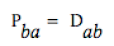
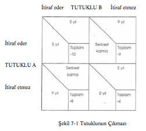
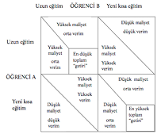
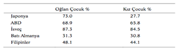

Bölüm 7 - AKILSAL SEÇİM KURAMLARI
Giriş
Akılsal seçim kuramları, insanların akılsal olduklarını ve hareketlerini, amaçlarına erişmekte etkili gördükleri araçlara dayandırdıklarını kabul eder. Kaynakların kıt olduğu bir dünyada bu, sürekli olarak değişik amaçlar için seçilecek araçları değerlendirmek ve aralarında karar vermek demektir; akılsal seçim (rational choice) terimi bu anlamdadır.
Bu türlü kuramlar ekonomi ile çok yakından ilişkilidir. Hattâ bu yaklaşım, “her şey için bir fiyat vardır ve her şeyin fiyatı vardır” beylik sözü ile ifade edilebilir. Ancak bu, toplumsal davranışı açıklayabilecek yegâne önemli gerçeklerin, alışılmış ekonomik işler —üretim, istihdam, mal artışları olduğunu söylemek değildir. Akılsal seçim kuramcılarının anlatmak istedikleri, insanların birbirlerine karşı davranışlarını anlamanın yolunun onları bir kıtlık dünyasında rasyonel karar alıcılar olarak görmek olduğudur.
Son yıllarda boşanma oranlarındaki artışı inceleyerek bu bakış açısına iyi bir örnek verebiliriz. Bu alandaki yorumcular bazı muhtemel etkiler ileri sürmüşlerdir: refah, değişen ahlâksal değerler, ve boşanma sürecini kolaylaştıran yasal değişiklikler. Bir akılsal seçim bakış açısını kullanan toplumbilimciler ise, bütün boşanmaların evli kalıp kalmama tercihlerini yapmakta olan bireyler ile ilgili olduğu gerçeği ile başlarlar, sonra geçmişe nazaran daha fazla sayıda insanın boşanmayı seçme nedenini sorgularlar.
Otuzlu yaşların sonlarında olan iki kadın düşünün, bunlardan birincisi 19. yüzyılda Orta-Batı Amerikası’nda bir çiftçi hanımı ve diğeri Los Angeles veya Paris’te çağdaş bir kadın olsun. Birincisinin kocası sık sık sarhoş ve şiddet kullanan birisi olsa bile, kadının onunla kalacağı muhakkaktır. Onun zamanında çocuklu, boşanmış kadınlar şöyle dursun, yalnız kadınlara bile açık olan işler (toplumsal yardım da) yoktur. Bütün ailenin, yetişkinler ve çocuklar dâhil, geçimlerini sağlamak için çiftlikte çalışmaları gerekmektedir.
Buna karşılık çağdaş kadının hiç olmazsa muhtemelen sekreterlik yetenekleri vardır ve ücretli bir iş arayabilir. Sözgelişi, bir doktorun sekreteri olarak, ufak yeni bir çok katlı apartman dairesi tutabilir. Yeni doğum kontrolü araçlarının gelişmiş olması dolayısıyla da, bekâr kalmak zorunda değildir. Boşanma yasalarındaki değişikliklerle, eğer mal varsa, ondan hisse alacak demektir; zamanımızdaki tartışmalar, her iki tarafın pay almamaları ilkesi üzerinde değil, her iki tarafın ne kadar pay alacakları konusundadır. Ortada bölüştürülecek hiç mal yoksa, yine de maaşı ile kendine ve çocuklarına bakabilecektir. Bir kadın, kocası ile olan ilişkisinden memnun değilse, boşanma seçimi çok daha cazip olacaktır.
Bu tercihi yapmış olan veya evlenmek için hiçbir neden görmeyen muhtemelen birçok tanıdığınız aklınıza gelebilir. Bazıları için de yüzyıl öncesine göre, hükümet programları ve harcamalardaki değişiklikler dolayısıyla, evlilik dışı çocuk edinmek akıllı bir seçimdir. Ekonomik olarak soğukkanlılıkla bakılacak olursa, Elijah Anderson’un işaret ettiği gibi, “Sömürüye dayalı seks ve evlilik dışı bebeklerin gerisindeki gerçek hiç şüphesiz bebeğin değerli bir mal olabileceğidir. Toplumsal vardım en fazla güvenilebilir para kaynaklarından biridir.” Akılsal seçim kuramcıları, boşanma, evlenme kararı ve bir sürü başka toplumsal davranışa, insanların tercihleri ve bunların dayandığı düşünce açılarından bakarlar.
Çağdaş sosyolojide, akılsal seçim yaklaşımları ilk olarak “alışveriş kuramı” bağlamında tanınmaya başladı. Alışveriş kuramcıları, toplumsal etkileşimi beslenme, gıda ve barınmadan, toplumsal kabul görme ya da sempatiye kadar uzanan, elle tutulur veya tutulmaz mal ve hizmetlerin alışverişi olarak kavramlaştırırlar. İnsanlar hareket seçeneklerinin maliyet ve ödüllerini inceledikten ve en çekicisinin tercihini yaptıktan sonra, hangi alışverişleri seçeceklerini belirlerler. Simmel’in ifadesi ile, “İnsanlar arasındaki bütün temaslar, vermek ve buna eş değerde olanını geri almak esası üzerinde oturur.”
2
Elijah Anderson, Streetwise, Race, Class and Change in an Urban Community (Chicago: University of Chicago Press, 1990), s. 136.
3 Georg Simmel, The Sociology of Georg Simmel (Glencoe, III: The Free
Press, 1950).
4 Bu konuda önemli metinler: Anthony Downs, An Economic Theory of Democracy (New York: Harper and Row, 1957) ve Mancur Olson, The Logic of Collective Action: Public Goods and the Theory of Groups (Camb-ridge: Harvard University Press, 1965).
5 Akılsal beklentiler ve kazanma stratejileri bağlamında formüle edilen oyun kuramı, akılsal seçim çözümlemesinin burada en önemli farklı biçimidir (variant); bkz. Stewart Wood ve Iain Mclean, “Recent Work in Game The-ory and Coalition Theory”, Political Studies 43 (1995): 703-17. Özellikle de Michael Nicholson, Rationality and the Analysis of International Conflict (Cambridge: Cambridge University Press, 1992) ve Peter Ordeshook, A Political Theory Primer (London: Routledge, 1992).
Alışveriş kuramı üzerinde en çok tanınmış eserler 1960’larda yazılmıştır; ondan sonra birkaç yıl boyunca toplumsal bilimciler arasında, akılsal seçim konusunda ilgi azalmıştır. Öteki disiplinlerde bunun aksi geçerlidir. Siyasal bilimciler, “kamu tercihi”, ya da siyasal bilimin ilgi alanına giren kamu mallarına akılsal bakış açısının uygulanması ile giderek daha fazla ilgilenmektedirler. Böylece, oy verme davranışı veya sendika üyeliği gibi konular, belirli ödüller karşılığında oy verme veya üyelik olarak çözümlenmiş ve bu arada, akılsal seçimin “oyun kuramı” yönleri, uluslararası ilişkilerde ve askerî stratejide yapılan işlerde gerekli olmuştur. Toplumsal psikolojide Thibault ve Kelley’in grupların çözümlenmesi, insanların birbirleri ile alışverişe geçmelerinin, böylece sağlanacak olan ilişkiden diğer seçeneklere göre daha fazla fayda elde edeceklerine bağlı olduğu önermesine dayanır. Biyoloji ve özellikle de sosyobiyoloji, bunun gibi, bir akılsal seçim bakış açısı ile başlar.
Belki de bu yaklaşımın diğer disiplinlerde bu kadar verimli olması dolayısıyla, şimdi toplumsal bilimciler arasında da akılsal seçime karşı yenilenmiş bir ilgi vardır. Doğrudan toplumsal alışveriş ve akılsal seçim ile ilgili çalışmalar giderek artmaktadır; buna bir örnek, Ratio-nality and Society (Akılsallık ve Toplum) dergisidir. Çoğunluk, bireyin ve küçük toplulukların davranışları ile ilgilenirken; kurumsal, makro düzey meseleler üzerinde bazı çalışmalar çok açık olarak akıl-sal seçim bakış açısından başlamaktadır. Özellikle James Coleman’ın muazzam eseri The Foundations of Social Theory (Toplumsal Kuramın Temelleri) toplumsal sistemleri, bir akılsal bireysel davranış kuramından başlayarak açıklar.
6Sosyolojik gelenekte, küçük toplulukların çözümlemesi George Homans’ın kuramları ile ve kurumsal çözümleme Peter Blau’ın alışveriş kuramı ile çok yakından bağlıdır. Bu bölümde bu iki kuramcının çalışmaları ayrıntılı olarak ele alınacak ve Richard Emerson, Ray-mond Boudon ve Michael Hechter dâhil, benzer bir bakış açısından bakan diğer bazı kuramcılar ile ilişkileri belirlenecektir. Burada aynı zamanda, alışveriş kuramının çoğu gibi, bireyler arasındaki etkileşimlerden “ortaya çıkan özellikler” üzerinde yoğunlaşan, ağ (şebeke) kuramı (network theory) ele alınacaktır. Son kısımda James Cole-man’ın görüşleri üzerinde, kurumsal gelişmeyi açıklamakta akılsal seçim kuramcılarının giderek artan ilgileri bağlamında durulacaktır.
Entelektüel Kökler
Alışveriş kuramı insanların mantıklı olarak ve farklı eylem yollarının göreli faydalarını hesapladıklarını kabul etmekle, birçok 19. yüzyıl düşünürünün kuramlarına benzemektedir. 19. yüzyıl, hem iktisatçıların hem de birçok filosofun bireysel etkinlik ve tercihi vurguladıkları bir çağdır. Örneğin, faydacılar, insanları zevk arayan, sadece acıdan çekinir olan ve bu arzuların peşinde hareket eden “çıkarcı” olarak tanımlamışlardır. Aynı zamanda, bir davranışın, ne kadar çok kişiye ne kadar fazla “fayda” sağlıyorsa, ona göre az veya çok ahlaksal olduğunu ileri sürmüşlerdir. Adam Smith’in görüşleri üzerine kurulmuş olan iktisat bilimi, ekonomik eylemin bireylerin sayısız tercih ve kararlarının sonucu olduğunu vurgulamayı sürdürmüştür.
Bunun aksine ilk toplumbilimciler bir alışveriş bakış açısına pek ilgi göstermemişlerdir. Tek istisna, görmüş olduğumuz üzere, insan davranışının genel özelliklerini tanımaya ilgi duyan Georg Sim-mel’dir. O, özellikle insanların yalnızlıktan, birbirleri ile çeşitli temas şekillerine geçmeleri ve bunların nedenleri ile ilgilenmiştir ve birçok modern alışveriş kuramcıları gibi, buradaki nedenin, ihtiyaçları tatmin ve bireysel amaçları kovalamak olduğunu ileri sürmüştür. Sim-mel aynı zamanda, insanların etkileşimlerinin daima bir karşılıklılık özelliği taşıdığını, elde ettiklerinin, karşılıklar eşit olmamakla beraber alışveriş şekilleri olarak görülmesi gerektiğini söylemiştir. Özellikle Blau, Simmel’in görüşlerinden faydalanmıştır.
Ancak, Simmel’in alışveriş olarak bu etkileşim anlayışı üzerinde daha sonra gelen toplumbilimciler tarafından durulmamış ve bu anlayış fazla kullanılmamıştır. Bunun yerine, alışveriş kuramı üzerindeki başlıca zihinsel etkiler toplumsal bilimin başka alanlarından gelmiştir: Antropoloji, iktisat, psikoloji ve daha yakın zamanlarda, siyasal bilimde kamu tercihi kuramı ve oyunlar kuramı gibi.
Antropoloji ve Hediyenin Önemi
20. yüzyılın büyük antropologlarından birçoğu, toplumsal hayatta alışverişin oynadığı önemli rol ile ilgilenmişlerdir. Bunlardan en önemlisi, uzun süreli saha çalışmaları, belirli bir kültür ile çok yakından tanışıklığı olan ve modern antropolojinin gelişmesinde kesin rol oynayan Bronislaw Malinowski’dir (1884-1942). Malinowski Mela-nesian adalarında Trobriand adalıları arasında birçok yıl yaşamış ve orada karşılıklı alışverişin toplumsal birliğin temeli olduğu sonucuna varmıştır.
Trobriand toplumu iyi dengelenmiş karşılıklı hizmetler üzerine kurulmuştur. Totemci Klan, yerel Klan ve köy toplulukları şeklinde bütün bölünmelerin özelliği... vermek ve almak oyunudur... (üstelik) en yakın akraba toplulukları arasında... karşılıklılık ve ver ve al ilkesi hüküm sürmekte... bir erkek ve kız kardeşi arasındaki gibi en bencil olmayan ilişki, karşılıklılık ve hizmetlerin karşılığının ödenmesi üzerine kurulmuştur.
Hediye: Alışverişi incelerken bir yanda, alışveriş veya “hediye ver-mek”ten başka bağımsız bir amacı olmayan kurumlar ile, öte yanda, özellikle insanların istedikleri şeyleri almalarına yarayan ve insan etkileşiminin diğer alışveriş yönleri ya da “vasıtalı” alışveriş arasında bir ayırım yapmalıyız. Antropoloji birincisine daha özel ilgi göstermiştir.
Kurumlaştırılmış karşılıklı hediye vermenin bilinen en iyi örnekleri arasında Malinowski’yi büyülemiş olan bir Trobriand merasimi vardır: Kula. Bir ada topluluğundan erkekler muntazam aralıklarla bir başka adaya kayıkla giderek, orada yaşayanlarla buluşup deniz kabuklarından kolye ve bilezik alıp verirler. Bu bilezik ve kolyelere çok değer verilmekle beraber bunların bir kullanım alanı yoktur. Bunlar bir daha seferki alışverişe kadar saklanır, sonra yeniden başka ellere geçer, öyle ki aynı merasim mücevherleri her yıl Kula Halkası yolunca gider gelir.
Antopologlara ve alışveriş kuramcılarına göre, bu gibi alışverişlerin en önemli yönü, karşılıklı mecburiyetlerle toplumu birleştirmek ve böylece “toplumsal bütünlüğü” artırmaktır. Başka örnekler bulmak zor değildir. Homer’in Yunan kralları devamlı olarak hediye alışverişinde bulunurlar. Ve bunun gibi, Amerikan Noeli’nin kısa vâdede ticarîlikten uzaklaşacağı beklenemez. Yine bir ziyaretçiye her bir fincan kahve ikramımız arkadaşlık ilişkileri kurmakta hediyelerin rolünü göstermektedir. Karşılık olarak da, bu ikramı dostça kabul etmek, toplumsal çalışma uzmanları veya din adamları için bu ılık sıvı ile dolu sonsuz sayıda fincanları meslekleri ile ilgili hayatî tehlike hâline bile sokar.
Antropologlar, aynı zamanda daha az göze çarpan aynı tür alışverişler olduğunu ileri sürmüşlerdir: evlilikte eşlerin değiş tokuşu. Modern sanayi toplumu, bir insanın kiminle evlenip, kiminle evlenmeyeceği konusundaki az sayıdaki kurallarla istisna teşkil etmektedir. Bunun aksine kabile toplumlarının çok karmaşık ve kesin kuralları vardır. Örneğin bir kızın mutlaka babasının kız kardeşinin oğlu ile evlenmesi (ya da evlenmemesi) ve bir erkeğin annesinin erkek kardeşinin kızı ile evlenmesi (ya da evlenmemesi) gerekir. Meşhur Fransız antropologu Claude Levi-Strauss, bir sıhriyet sistemi olarak, akrabalık toplulukları ile evlilikleri çözümleyerek bu kurallardan bir anlam çıkarmaya çalışmıştır. Buna göre, zevceler hepsinden değerli hediyeler olduğundan, bir sıhriyet sağlamak ve toplumsal bütünleşme için en etkili alışveriştir.
Antropologlar, güç ile hediye alışverişi arasındaki ilişkinin farkındadırlar. Marcel Mauss (1872-1950) The Gift adlı kitabında, hediyelerin ve diğer alışveriş şekillerinin “’mecburî ve menfaata” dayalı özelliğini vurgulamıştır. Ona göre, hediyeler, bir toplumda gücün ve önceliğin tayini ile bağlantılıdır: çünkü hediye alanlar, eşit bir şekilde mukabelede bulunup bu mecburiyetten kurtulamadıkları takdirde, vericiye karşı üstünlüklerini kaybetmiş durumda kalırlar. Mars-hall Sahlins, insanların yapılmış olan iyiliklerin ince hesaplarını tutmadıkları bir aile içinde genelleştirilen karşılıklılık ile bunların hesabının dikkatle tutulduğu herhangi bir köy veya kabile arasındaki farka, dikkati çekmiştir. Zamanla verilen ve alınan arasında tam bir denge oluşur. Güç ilişkilerini yaratmakta, alışverişin önemine olan bu ilgi, alışveriş kuramcıları, özellikle Peter Blau tarafından benimsenmiştir.
Akılsal seçim kuramının bazı değişik sosyolojik çeşitlerinin bir özelliği -ve özellikle alışveriş kuramı- toplumsal alışverişi yöneten, tekrarlanan genelleştirilmiş normların varlığıdır. Burada bağlayıcı olan karşılıklılık normu’ndan sıklıkla söz edilirken antropolojiye olan borç açıkça görülür. Örneğin Mauss, hediye vermenin temelindeki toplumsal normları vurgular. İnsanların düşmanlığını çok çekmemek ve statü kaybına uğramamak için karşılık vermek gerekir; çünkü karşılıklılık toplum tarafından uygulanan bir kuraldır. Malinowski de bu kadar kesin olmamakla beraber, çoğu zaman, karşılıklı alışveriş gereğince, karşılık vermenin toplumsal olarak uygulanan bir mecburiyet olduğu görüşündedir.
Ekonomi, Kazanç ve Fiyat
İktisat kuramının, Adam Smith, David Ricardo ve Carl Menger gibi ilk büyük iktisatçıları tarafından geliştirilmiş temel görüşleri, pazar yerinde insan davranışları üzerinde etkili olan bazı kişisel önermelere dayalıdır. Akılsal seçim kuramcıları da bunun gibi bireysel psikoloji ile başlarlar ve aynı önermeleri, para karşılığı maddi mal alışverişi, satılmak üzere mal üretimi veya ekonominin işleyişi ile ilgili olmayan davranışa uygularlar. Onlar da ekonomistler gibi bütün mallara ya da statülere sahip olamayacağımız ya da duygusal desteği bulamayacağımız bir kıtlıklar dünyasında yaşamakta olduğumuzun önemini vurgularlar. Akılsal seçim kuramcıları, ekonomi biliminin dört temel önermesini kullanırlar:
Kişiler kararlarını zevkleri ve tercihleri esasında veren rasyonel kazanç artırıcılarıdırlar.
Bir kişi bir şeye ne kadar çok sahip ise, aynı şeyin daha fazlası ile o kadar ilgilenmeyecektir.
Serbest piyasada mal ve hizmet fiyatları, doğrudan doğruya muhtemel alıcı ve satıcıların zevkleri tarafından belirlenir. Bir mal için talep ne kadar fazla ise, o derecede “değerli” olacak ve fiyat o denli yüksek olacaktır. Mal ve hizmet ne kadar fazla ise, değeri o kadar az ve fiyatı o kadar düşük olacaktır.
Bir tekel tarafından sağlanan mal, birbirleri ile rekabet hâlinde olan birkaç firma tarafından sağlanan mala oranla daha pahalı olacaktır.
İlk iki önerme, insanların temel psikolojik yapılarıyla ilgili kabullerdir. Bütün basitliklerine rağmen, davranışla ilgili çok somut tahminler yapmakta kullanılabilir. Bundan başka, evrensel olarak kabul görmekten uzaktır. Örneğin, insanlar yıllarca, insanların kuşaklar boyunca kendi değer veya hareketleri yüzünden kapanına kıstırılmış oldukları bir “yoksulluk döngüsü (cycle of poverty)”nün olup olmadığını tartışmışlardır. Bu görüş taraftarlarından bazıları, gelişmemiş ülkelerde yoksulluğun devam etmesinin bir nedeninin, bu ülkelerdeki köylülerin fazla tutucu ve yeni tarım tekniklerini kullanmayacak kadar geleneklere bağlı olmaları olduğunu iddia etmişlerdir.
Bu görüş, insan davranışının akılsal olmayan bir türünü belirtir; burada söz konusu olan gizemli bir amaç değil, insanın maddi rahatlık ve güvene olan evrensel arzusudur. Bu, iktisatçıların ve alışveriş kuramcılarının yetersiz buldukları bir görüştür. Onlara göre, köylüler de herkes gibi kazançlarını (veya elde ettikleri faydaları) artırmak isterler; ve davranışı açıklamada “kültür” veya “geleneğin ağırlığı”na güvenmezler. Böylece, bütün dünyada köylüler, birleştirildiği takdirde üretimin en az yüzde on artırılabileceğini bildikleri hâlde, bir takım dağınık küçük tarlalarda çiftçilik yapmaya devam etme eğilimindedirler. Çoğu zaman açlık düzeyine yakın olan insanlarda bu durum mantıksız görülmekle beraber, dağınık tarlaların bir aileyi don, taşkın ya da hayvanlardan kaynaklanan tehlikelere karşı daha güvenli kıldığı düşünülecek olursa, daha iyi anlaşılır. Köy toplumu, insanları tarlaları tek parsel hâlinde birleştirmenin tehlikelerine karşı koruyamayacağına göre, köylüler, “ayrı ayrı düzeyde, önce güvenlik” stratejisinden ayrılmamaktadırlar.
İktisatçılar değişik eylem yolları seçeneklerini birbirleriyle mukayese edebilecekleri durumlar üzerinde yoğunlaşma eğilimindedirler. “Getiriler”deki değişikliklerin, insanların tercihlerinde değişiklik yaratacağını oldukça başarılı olarak tahmin etmişlerdir; örneğin Birleşik Devletler’de ve İngiltere’de olduğu gibi, öğretmenliğin saygınlığının azaldığı, getirisinin de düştüğü ya da daha iyiye doğru gitmediğinde, mesleğe giren insanların ortalama niteliğinde bir düşüş ola-caktır. İktisatçılara mukabil, sosyologlar çok zaman işe yarar bir fiyat ya da kazanç olmayan durumlarla ilgilenirler. Burada bile, akılsal seçim kuramcıları, farklı eylemlerin göreli getirilerinin her zaman mukayese edilebileceğine inanırlar. Bundan ötürü, her imkânın tam değeri belirlenemese de, insanların eylemleri açıklanabilecek veya önceden bilinebilecektir.
Yukarıda sayılan önermelerin ikincisi, aynı zamanda insan psikolojisi ile ilgili bir ifade olan, “azalan marjinal fayda” yasasıdır. Bu yasaya göre tüketilen mal miktarı arttıkça, marjinal faydası (yani o maldan bir fazla birim daha tüketmekle elde edilen ekstra fayda) azalma eğilimi gösterir ve bunun sonucu, onun için para ödeyen insan sayısı da azalır. Sözgelişi, çok sıcak bir gün ise; siz, ilk bir soğuk içeceğe çok para vermeye ve onu yüksek bir fiyat isteyen bir satıcı veya kahvehaneden satın almaya hazır olacaksınız. Ama, ikinci bir içecek, bundan daha az değerli olacaktır; ve siz üstelik, yüksek bir fiyata elde edilebilecekse, bundan vazgeçebilirsiniz.
Okuldan birlikte çıktığınız kişiyi düşünecek olursanız, aynı süreci işde görebilirsiniz. Başlangıçta pek de albenisiz olmadığınızın kanıtı olarak, az ilgi duyduğunuz veya çok ısrar eden kimseler ile çıkmaya önem verirken, kendinize olan güveninizi artıran her ilişki bu buluşmayı sizin için daha değersiz kılar. Daha fazla devam etmek ister ya da daha fazla şey vermeye hazır olursunuz veya geçmişte sizin için devam etmeye karar vereceğiniz kadar önemli olan bir ilişkiyi bitirirsiniz. Bu süreç, devletin ekonomik istatistiklerinde de görülebilir. Homans, özellikle bireyler arası ve ufak gruplarda davranışların çözümlemelerinde bu önermeye dayanır.
İktisatçılarla, toplumsal alışveriş kuramcılarının paylaştığı üçüncü ve dördüncü önermeler, insanların alışveriş yaptıkları malların fiyatıdır. Sosyologlar bu önermeleri yine pazar alanından dışarı, daha ötelere çekerek, onların, diğer alışveriş şekillerinde de, arz ve talep ile ayarlanan fiyatların ve muhtemel “alıcıların” istediklerini tek ve tekelci bir vericiden ne ölçüde alabilecekleri konularında geçerli olduğunu iddia etmektedirler. Örneğin, kuramcılar “evlilik pazarı”nı incelerken, ortalama olarak başarılı ve zengin adamların en güzel eşlere sahip olduklarına işaret ederler. Bu gerçeği, başarı (veya güç) ve kadın güzelliğinin değerli ve az bulunan özellikler olup, yüksek fiyatlara yol açtığı şeklinde açıklamaktadırlar. İnsanlar daha genç ve güzel ikinci (ya da üçüncü) bir eş ten “ödül” olarak söz ederlerken bu olaya tanıklık etmektedirler.
Değerli özellikleri ve güçleri tekelinde bulunduran bir kimse daha da iyi durumdadır. Örneğin, 20. yüzyıldan önceleri bir hükümdar, herhangi bir erkekle evlenebilecek kadınları metres olarak elde edebilmekteydi. Akılsal tercih geleneğinde son zamanlarda yapılan çalışmalar, gücü ve tâbi olmayı çözümlemenin bir yolu olarak, giderek tam ve kısmî tekellerin üzerinde odaklanmıştır.
Karşılıklılık normu ile düzenlenen bir alışverişler ağı olarak toplumla ilgili görüşleri antropolojiden gelmekle beraber, akılsal tercih kuramcılarının belirli olayları açıklamak için uyguladıkları temel önermeler iktisat biliminden alınmıştır. Sonuç olarak yaklaşımları da iktisat biliminin sınırlamalarını paylaşmaktadır. Bu bilimin uygulayıcıları insanların inançları, değerleri ve zevklerinin kaynaklarını açıklamakla ilgilenmemekte, bunları davranışların belli adresleri olarak kabul etmektedirler. Bunların akılsal ve amaçlı eylemler üzerinde odaklanmaları, insan davranışlarını açıklamakta duyguların rolü hakkında söyleyeceklerini sınırlamaktadır. Bereket versin ki, bu, sanıldığı kadar sınırlayıcı değildir; çünkü insanların az çok bilinçli olarak gerçekleştirmeye çalıştıkları birçok temel ve evrensel insan arzusu vardır. Yalnızca insanların para, güç, toplumsal saygı ve doğal olarak hayatta kalmaya değer verdiklerini kabul etseler bile, tıpkı çatışma kuramcılarının eşitsizlik, çatışma ve değişimin ayrıntılı çözümlemelerinde temel aldıkları “kişisel çıkar” gibi, akılsal seçim kuramcıları da arkadaşlık, statü farkları ve toplumsal memnuniyetsizlikle ilgili ayrıntılı kuramlar inşa edebilmektedirler.
Davranışçı Psikoloji ve Oyunlar Kuramı
Özellikle bireysel davranış ve sonuçlarının çözümlemesinde, akılsal seçim yaklaşımı üzerinde iki önemli etki vardır. Alışveriş kuramının ilk uyarlamalarının geliştirilmesinde davranış psikolojisi önemli idi; ama daha yakın yıllarda, oyunlar kuramı’ndan alınmış olan kavram ve modeller giderek daha fazla kullanılmaya başlanmıştır.
George Homans, alışveriş kuramının kendi yorumunu geliştirirken, arkadaşı B. F. Skinner tarafından kurulmuş olan deneysel psikoloji (experimental psychology)’nin davranışçı okuluna başvurmuştur. O, iktisatçıların varsayımlar olarak ele alma eğiliminde oldukları önermelerin doğruluğu ile ilgili kanıtlar aramıştır. Davranışsal psikolojiye göre, davranışın incelenmesi sırasında gözlemlenemeyen olgularla ilgili varsayımlardan kaçınılabilir. Bu okulun deneysel psikologları, insan (veya hayvan) zihninin doğrudan test edilemeyecek veya yanlış olduğu anlaşılamayacak olan “kara kutusu” ile ilgili görüşler belirtmekten kaçınmaya çalışmışlardır. Bunun yerine, insan veya hayvanların uyarıya belirli bir şekilde tepki göstermelerine neden olan düşünce ve duygularla değil, yalnız gözlemlenebilir uyarılar sonucunda ortaya çıkan görülür yanıtlarla ilgilenen tatminkâr bir davranış kuramı oluşturmayı denemişlerdir. Mead ve simgesel etkile-şimciler, iç ve gözlemlenemeyen algılamaların ve anlamların önemini vurgulayarak bu kurama şiddetle karşı çıkmışlardır.
Gerçekte, alışveriş kuramı, akılsal seçim kuramları ile birlikte bir bütün olarak, gözlemlenemeyen olgular, özellikle insanların değerleri ile ilgili beyanlarda bulunmuştur. Alışveriş kuramına göre, davranışsal psikolojinin önermelerinin önemi, iktisat bilimine uygunluğundan ileri gelir; ve böylece, bu bölümde, çalışmalarına daha sonra değineceğimiz Richard Emerson, kendi alışveriş kuramında çoğunlukla geçerli olan şartlandırıcı sözcük dağarcığını kullanır. Ekonomi ile psikolojinin bir araya gelmesi, alışveriş kuramının bu ilkelerin toplumsal hayatın her alanında uygulanabilir olduğu savını güçlendirir. Homans şöyle yazar, “Biz, davranışsal psikolojinin önermelerinin, bütün toplumsal bilimlerin açıklayıcı önermeleri olduğuna inanmıyoruz. Buna göre, bunlar iktisat biliminin de genel önermeleridir.”
Akılsal seçim kuramının sosyolojik çeşitlerinin çok belirgin olduğu alanda, psikoloji de önemli bir etkidir: onların “toplumsal alışverişin ahlaklılığı” ile ilgili endişeleri. Ekonomik insan ya haksız bir alışverişin -veya “doğru fiyat”ın- mevcut olduğunu anlamamakta veya ona ne verilirse sessizce kabul etmektedir. Bu, bildiğimiz ve bizim hakkımızın ne olduğu ya da ödememiz veya almamız “gerektiği” konusunda fikirler ve karşıt düşüncelerle dolu olan insanları be-timlememektedir. Bu konu, günlük hayatlarımızda ne kadar çok etkili olursa, neyin doğru veya haklı olduğu ile ilgili tutumumuz o derecede şiddetli olur: boşanma sonrası (ve nafaka gerekçesi) mülkiyet bölünmesi tartışması, birbirleri ile çatışan adalet anlayışlarını araştıranlar için çok verimli bir avlanma alanı sunar.
Deneysel psikologlar, her ne kadar adalet ile ilgili değilseler de, beklentiler yerine getirilmediği zaman, örneğin beklenilen bir ödül verilmediğinde, neler olduğu ile ilgilenmektedirler. İnsan ve hayvanların tepkileri ile ilgili kanıtları, Homans’ın “üleştirimli adalet” (dist-ributive justice) konusundaki görüşlerinin büyük bir bölümünün temelini oluşturmaktadır.
Buna karşılık, oyunlar kuramı, daha çok belirli seçimler ve seçenekler takımları ile, ve tekrar eden çıkmazlar ve stratejiler ile ilgilidir. Çatışma kuramını tartışırken, toplumsal hayatı, bir insanın kazancının bir başkasının kaybı olduğu sıfır toplamlı bir oyun olarak görme eğiliminde olduğunu belirtmiştik. Ancak, oyunlar kuramı bütünüyle, daha geniş alanlara yayılan durumlarla ilgilenir. En iyi bilinen örneği, bu bölümde ayrıntılı olarak tartışılan “mahkûmun çıkmazı”dır; ama bu kuramın sosyologlar için ilgi çekiciliği ve değeri, geliştirilen farklı uygun oyunların çeşitliliği değil, şu veya bu tipe örnek olarak görülebilecek toplumsal durumların sayısıdır. Yükseköğretimin büyümesi, Sierra Club’ın lobi başarıları ve büyük güçler arası barış beklentileri gibi çeşitli olaylara ilgi duyan sosyologlar, gerideki “oyun yapısı”nı bulmanın onlara hem geçmiş olayları, hem de gelecekteki gelişmeleri çözümlemelerinde yardımcı olduğunu göstermiştir.
Bu metinde tartışılan bakış açılarının çoğu, ya mikro ya da makro düzey üzerinde yoğunlaşmıştır. Bu ayırım, akılsal seçim geleneğinde çalışan kuramcıların çoğu için geçerli ise de, bir bütün olarak bu bakış açısı için geçerli değildir. Burada ele alınan çalışmalardan en yaygın olarak tanınmış olanlar -özellikle de alışveriş kuramı ile ilgili olanlar- küçük topluluk davranışları üzerinde odaklanmış olmakla beraber, diğer bazı kuramcılar yapısal ve kurumsal çözümlemelerle ilgilenmişlerdir.
Bu bölümün Birinci Kısmı en çok bireysel eylemler ve davranışla ilgili kuram ve araştırmaları kapsar. İlk önce George Homans’ı ve sonra, bireysel davranışın çözümlemesini işleyerek geliştiren Richard Emerson dâhil, diğer bazı kuramcıları ele alır. Kısım 2’de, Peter Blau’ın alışveriş kuramı örneği ile toplumsal yapının akılsal seçim bakış açıları gözden geçirilir ve ağ kuramcıları tarafından geliştirilen çözümlemeler üzerinde durulur. Kısım 3, toplumsal etkileşim ve alışverişin güven yaratacak toplumsal düzeni sağlaması üzerinde önemli bir kuram bütünü inşa eden James Coleman’ın çalışmalarını tartışır. Son olarak, sonuçta akılsal seçim yaklaşımının güçlü ve zayıf tarafları özetlenir.
Kısım Bir - Akılsal Seçim, Toplumsal Alışveriş ve Bireysel Davranış George Homans: İlk Toplumsal Davranış
Modern toplumsal alışveriş kuramı, başlıca iki toplumbilimci ile bir arada düşünülür: George Caspar Homans ve Peter M. Blau. George Homans (1910-1989) Boston’lu bir Brahmin olup şehrin büyük bir Yankee -bir sosyolog olarak istisnai bir durum- ailesi içerisinde doğmuştur. Homans, otobiyografisinde şöyle der:
Şimdi küçümseme uyandıracak olan kelimeler kullanılacak olursa, Brahmin’ler gerçek beyefendi ve hanımefendilerdi. Diğer insanlar böyle değildi. ...Biz “gurur ve meydan okuma” ile ayağa kalkamamıştık —kime karşı meydan okuyacaktık? Ve nadiren ‘sı-nıf’tan söz ederdik. Ama yine de sınıf bilincinde idik. Bütün toplumbilimciler meslekleri itibarıyla sınıf bilincindedirler, ama bu kendilerininki değil, başka kişilerin sınıfları ile ilgilidir.
Homans, Harvard’da sosyoloji değil, İngilizce okumuştur. Ama şöyle der:
Kuramsal olmasa bile, çok uygulamalı sosyoloji öğrendim. Bir insanı bu konu ile ilgilendirecek yollardan biri, insanların toplumsal ilişkilerin çok farkında oldukları bir ortamda yaşamaktır. Bu kural, bütün toplumun özellikleri ile ilgilenen makrososyologlardan çok, kişilerin yüz yüze etkileşimleri ile ilgilenen benim gibi mikro-sosyologlar için geçerlidir. Biz mikrososyologlar için, sosyolojinin yasaları kibarların yasalarıdır ve benim özgeçmişime sahip bir öğrenci Harvard’ı —deyimin kötü anlamında— çok yüksek ölçüde “toplumsal bilinç” ile dolu olarak görür.
Savaş öncesi Harvard’ın çekirdeğinde “son kulüpler” (final clubs) bulunurdu ve bunlara üyelik —kişisel ve sınıf, din ve etnik kökeni de içeren— bir özellikler karışımına dayanırdı. (Homans’ın kendisi bir aydın ve biraz da alaycı olmakla, bu bakımdan ‘doğru’ kişi değildi.) Küçük toplulukların yapısı ve toplumsal onaylamanın doğması —Ho-mans’ın kuramının çekirdeği— bu kulüpler erkek ve kız öğrenci derneklerinin çalışma biçiminin belirgin örneği olarak ortaya çıkmaktadır.
Homans bütün akademik hayatını, savaş sırasında deniz kuvvetlerinde geçen dört buçuk yıl dışında, Harvard’da geçirmiştir. Buhran dolayısıyla bir gazetedeki iş yitirilince “daha iyi yapılacak bir şey olmadığından” sosyolojiye geldi. İşsizdi, ve o zamanlar sosyolojisi Amerika’da hemen hiç bilinmeyen Pareto ile ilgili Cambridge’deki bir seminere daveti kabul etti. Homans bundan sonra Charles Curtis ile, An Introduction to Pareto (Pareto’ya Giriş) üzerinde iş birliği yaparak, hemen ardından Harvard Society of Fellows’a bir sosyolog olarak seçildi. Doktora yapmamış —veya onun için çalışmamış— olan Homans, American Sociological Association’ın başkanı seçilmiş ve Harvard’da profesör iken 1988’de Distinguished Scholarship Award ödülünü kazanmıştır. Harvard Gazette’de meslekdaşlarının şu sözleri yer alır:
Homans kendini adamış bir hoca olarak zamanını cömertçe öğrencilere vermiştir. Öğrencileri ve mesai arkadaşları ile ilişkilerinde yaşa, cinsiyete ya da toplumsal statüye dayalı bir ayrıcalık bulmak güçtür. 1960’ların sonrasında “aptal, iki yüzlü ve kendini beğenmiş liberallerin gevezeliklerine” karşı sabrı yoktu; ama statüye bakmadan nezakete inanırdı ve arkadaşları arasında öğrencileri, meslekdaşları ve her politik inanıştan kimseler vardı.
Homans’ın son çalışmalarında ve özellikle insan davranışının gerisindeki temel psikoloji yasalarına olan ilgisinde, genellikle ekonomide geçerli sayılan kavramlara karşı duyarlılığında ve tümdengelimli kuramlar ya da açıklamalar sağlamak isteğinde Pareto’nun etkisi belirgindir. Ancak, Homans çalışmalarında, başka disiplinlerde, antropoloji ve birçok yıllar öğretmenliğini yaptığı İngiliz tarihi gibi alanlarda çalışan geniş arkadaş kitlesinden her zaman esinlenmiştir.
Homans’ın küçük topluluklara ait araştırmaya olan ilgisi, The Human Group (İnsan Topluluğu)’da ilk olarak senteze kavuşturul-muştur. Bundan sonra, küçük topluluk davranışının gerisinde bulunduğuna inandığı insan faaliyetinin temel ilkelerine dönmüştür. Bunları, alışveriş kuramı olarak bilinmeye başlayan en önemli kitabı, Social Behavior: It’s Elementary Forms (Toplumsal Davranış: İlk Şekilleri) da ortaya koymuştur.
Homans, “ilk toplumsal davranış” tan, insanlar bunu planlamış olsalar da olmasalar da tekrar tekrar ortaya çıkan davranışı anlamaktadır. Homans, ilk toplumsal davranışın, bireysel psikoloji ve güdüler ile ilgili temel önermelerle açıklanabileceğine inanmaktadır. Toplumsal olayların nihai olarak psikolojik açıklamalarla anlaşılması gerektiğini; bütün toplumsal bilimlerin açıklayıcı temel yapı taşlarının psikolojik ilkeler olduğunu ve yalnızca sosyolojik açıklamalar diye bir şey olmadığını —bunu, tarihçilere pek rahatsızlık vermeyen tarih ile ilgili görüşlerinde de açıklamıştır— ısrarla savunmuştur.
32American Sociological Association’ın başkanları, sosyolojinin içinde bulunduğu durumla ilgili tartışmaya açık beyanlarda bulunmak için sık sık başkanlık konuşmalarını kullanmışlardır. Homans 1964’teki konuşmasını, işlevselliğin psikolojik önermeleri reddetmesi dolayısı ile, açıklamalar getiremediğini öne sürmek için kullanmıştır: “İnsanları tekrar içeri alalım ve onlara biraz kan verelim.” Homans’ ın kuramı bu tutumunun ifadesidir.
Homans’ın ortaya attığı genel ifadeler, diğer toplumsal alışveriş kuramcıları ile, akılsal seçim geleneğindeki toplumbilimcilerce hemen hemen olduğu gibi kabul edilmiştir. Ancak Homans’ın çalışmaları bunları birbirleri ile kilitlenmiş olan tümdengelimli bir sistem olarak çok açık bir şekilde ortaya koyar. Bunlar en yakın zamanlarda aşağıda olduğu gibi belirlenmiştir:
Başarı önermesi: Kişiler tarafından gerçekleştirilen bütün eylemlerde, bir kişinin belirli bir eylemi ne kadar sıklıkla ödüllendi-rilirse, o kişinin o eylemi yapma olasılığı o kadar fazladır.
Uyarıcı (Stimulus) önermesi: Geçmişte belirli bir veya birkaç uyarıcı, bir kişinin eyleminin ödüllendirilmesine neden olmuş ise, ve şimdiki uyarıcı geçmiş zaman içindeki uyarıcıya ne kadar çok benziyorsa, o kişinin o eylemi veya benzeri bir eylemi yapma olasılığı o kadar fazladır.
Değer önermesi: Bir kişinin eyleminin sonucu ne kadar değerli ise, o eylemi gerçekleştirme olasılığı o kadar fazladır.
Akılsallık önermesi (1 ile 2’yi birleştiren): Bir kişi birkaç eylem seçeneği arasında tercih yaparken, o zaman için ona göre alınacak sonucun değeri (D) ile, bu sonucun ortaya çıkma olasılığının (O) çarpılmasından çıkan ve en iyi değeri veren eylemi seçecektir.
İhtiyaç-doyum önermesi: Bir kimse yakın geçmişinde belirli bir ödülü ne kadar fazla kazanmış ise, onun için o ödül gelecekte o derecede değersiz olacaktır.
Saldırganlık-onaylama (approval) önermesi.
a- Bir kimsenin eylemi ona beklediği ödülü getirmez veya beklemediği bir cezalandırmaya neden olursa, kızacaktır; böylece, onun saldırgan davranış sergilemesi olası olacak ve bu davranışın sonuçları onun için daha değer kazanacaktır. (Beklentinin boşa çıkması-saldırganlık varsayımı).
b- Bir kimsenin hareketi ona beklediği ödülü ve özellikle daha da büyük bir ödül getirmiş ise, ya da beklediği cezalandırma ile karşılaşmamış ise, memnun olacaktır: böylece, beğeni gören davranış göstermesi mümkün olacak ve davranışın sonuçları onun için daha değerli olacaktır.
Homans’ın büyük bir alışveriş kuramcısı olarak tanındığını belirtmiştik, fakat bu önermelerde “alışveriş” terimi hiçbir yerde kullanılmamaktadır. Bunun nedeni, Homans’ın belirli bir alışveriş davranışından değil, bütün toplumsal faaliyet şekillerine uygulanan ve insan duygularını da içeren evrensel ilkelerden söz etmesidir. Böyle yapmakla, “toplumsal davranışı en az iki kişi arasında... bir alışveriş faaliyeti olarak” düşünmektedir. Başlıca işini, “kişilerarası ilişkiler olarak anacağımız, insanlar arasında tekrarlanan ödüller alışverişi”ni açıklamak olarak görür. Ancak Homans, “kuramıma... ‘alışveriş kuramı’ başlığı yapışıp kaldı... Bu çok kötü... Çünkü bu başlık bu kuramın özel bir kuram şekli olduğunu düşündürüyor; oysa, bu genel bir davranışsal psikolojidir” der.
Bütün akılsal seçim kuramlarının çekirdeğinde insan eyleminin genel ilkeleri vurgulanmaktadır. Bu kısımda Homans’ın beş önermesinin uygulanması ile, bireysel davranış ve bunun daha geniş toplumsal sonuçları üzerinde ayrıntılı olarak durulacaktır.
Akılsallık İlkeleri
Alışveriş kuramının ileri sürdüğü insan davranışı ile ilgili ilk üç ilke, esas itibarıyla, insan akılsallığına ait anlatımlardır. İnsanların ödül getirici eylemleri tekrar ettiklerini, bu gibi ödüllerle bir arada düşündükleri uyarılara cevap verdiklerini ve eşyaya verdikleri değerlere göre davrandıklarını söylemek, onların mantıklı olduklarını söylemektir; ama bu, onların her zaman en fazla ödül getiren ya da en mantıklı seçimi yaptıkları demek değildir.
Bu ifade, mûnis ve çok açık gibi gelse de, gerçekte böyle olmayabilir. Son yıllarda kriminoloji, tutuklama ve mahkûm etme nispetlerinde engelleyici etkilere yeniden ağırlık vermeye başlayarak bu ilkeye dönmüştür. Akılsal davranış ilkesine göre, bütün bu hususlar eşit olduğu takdirde, suç işlemek ne kadar başarılı olursa, o kadar fazla sayıda insan suç işleyecektir ve kanıtlar büyük ölçüde bu savı destek-lemektedir.
Washington D.C.’nin bazı bölgeleri son yıllarda, daha çok uyuşturucu (özellikle crack) satın alan ve satan genç adamları kapsayan bir cinayet salgını yaşamıştır. Washington Post ile yapılan bir mülâ-katta, şehrin Polis Şefi Yardımcısı’nın anlattığına göre, bu işle uğraşanların değerlerine ve fırsatlarına bakılacak olursa, tamamen akılsal davranış manzarası görülmektedir:
Gördüğüm çocukların ortaya çıkması için bir şeyler değişmiş olmalıdır. Size bir örnek vereyim. Kısa bir süre önce, 18 yaşında olan bir çocuğu tutuklamak üzere cinayet ekibi ile gittim. Bu çocuğun elinden geleni yapan, çok çalışan bir annesi vardı... ona iyi bir değer sisteminin faydalarını vermeye çalışan bir işçi ailesi. Ama çocuk... kendisini annesinin değerlerine göre değil, maddi şeyler bakımından tanımlıyordu... Hemen şimdi her şeye sahip olması gerekiyordu. Bir 4x4 kamyoneti, büyük bir arabası, çok değerli mücevherleri, marka giysileri olması lazımdı... istediklerini hemen şimdi almalıydı.
Birkaç yıl önce, kendi okulum Eastern High School’a gittim ve bazı öğrencilerle uyuşturucu ve para hakkında konuştum. Bir çocuk bana, “Şef Fulwood siz saçmalıyorsunuz. Ben neden devamlı bir işte saat başına 3,5 ya da 4,25 dolara çalışayım? Ben bunu sokakta bir dakikada kazanırım... Sen ne kadar alıyorsun Şefim?” Ben de söyledim... güldü...”ben bundan fazlasını kazanırım”. Bu çocuklar, göze aldıkları tehlike kadar para kazanıyorlar.
Ş ehirlerimizin sürekli başka sorunlarına bakacak olursak, aynı yaklaşımın çok yardımcı olduğunu görürüz: şehir içi okullarda birçok çocuğa verilen kötü eğitim ve bu okulların birçok sınıflarının özelliği olan öğretmen-öğrenci arası açık savaş hâli. Eğer insanlar esas itibarıyla akılcı iseler, savaş ve bozgunculuğa en fazla karışan, öğrenmeye ve öğretmen ile iş birliği yapmaya en az ilgi duyan öğrenciler, eğitimi diğer seçeneklere göre daha az değerli bulmaktadırlar. Bu seçimleri ile ilgili nedenlerini şimdilik bir tarafa bırakırsak, bu; öğretimin ödüllerini artırarak, öğrencilerin seçeneklerinin göreli değerlerini değiştirecek olursanız, savaşmaya karşılık iş birliğini seçenlerin sayısını da artıracaksınız demektir.
George Richmond New York’ta, tıpkı böyle, iş birliğine davet ricalarının, tehdit ve cezaların sonuç vermediği bir okulda öğretmenlik yapmıştır. Bu çıkmazdan kurtulmak için bir yol ararken, geleneksel okul odasını, çocukların hiçbir mülke sahip olmadıkları ve en temel hakları için müsaade almak zorunda kaldıkları “toprağa-308 numaralı odaya bağlı” feodal bir toplum olarak görmüştür. Buna karşılık “mikro-ekonomi oyunu” adını verdiği bir çare bularak, sınıfta uygulamıştır; şöyle ki:
Ertesi sabah, 308’e bir plan ve bazı malzemelerle geldim ve hemen sonunda her şeyi değiştiren bir tartışma ile başladım...
“Bundan sonra, kompozisyonlarınızı sizden bununla satın alacağım derken, bir gün önce mimeografla kopyalamış olduğum bir demet kağıt parayı gösterdim. “Bunlar sahte dolarlardır. Teklik, beşlik, yirmi beşlik, yüzlük ve beş yüzlük hâlindedirler. İmlâ veya matematik testinde her doğru için bir dolar kazanacaksınız”.
Sandoval, “Hey Bay Richmond” diye seslendi. “Bizim bu yalancı şeylerle zengin olmamızı mı bekliyorsun? Bu uyduruk para ile sokağın altındaki şekerciye gidecek olsam, ancak kıçıma bir tekme satın alırım.”
Sabır, Sandoval, sabır. Tamam, bu para ile ne alacağını “bilmek istiyor musun?” “Evet” diye hep bir ağızdan bağırdılar.
“Her ayın sonunda, okula kitap, kakaolu kek ve kuru pasta, soda ve başka şeyler getireceğim ve bunları en yüksek fiyatı verene satacağım. Bu demektir ki, kimlerde bu uyduruk paradan çok varsa, onlar istediklerini alacaklardır”. “Yani bu para ile bir şeyler satın alınabilir mi demek istiyorsunuz?”
“Evet Anneleriniz ve babalarınız çalışıyorlar, değil mi? Çocuklardan bazıları başlarını salladılar.
“Her neyse, bazıları çalışıyor. Yaptıkları işe karşılık dolar alıyorlar. Ondan sonra dolarlarını, bir başkasının emeği ile üretilmiş gıda ile değiştiriyorlar. Tamam, işte siz de çalışıyorsunuz, ama okulda. Ben de size, benim için değerli olduğundan, emeğinizin karşılığını ödeyeceğim —şeker, soda ve başka şeylerle— ve siz de anne ve babalarınız gibi, emeğinizin karşılığında bir şeyler alacaksınız.
44Öğrencilere sınıf içinde yaptıkları işler için de ödeme yapılabilirdi ve isteyenler böyle işler buldular. Sonuçlar fevkalâde idi. “Kendilerine iş bulanlar hevesle iş yaptılar, öğrencilerin akademik üretimleri iki misline çıktı.” Akılsallık fikri ne kadar faydalı bir açıklama olursa olsun, özellikle insanların eylemlerini gizil (potential) değerlerine göre seçtikleri düşüncesi, alışveriş kuramının diğer kısımlarının hepsinden çok hücuma uğramıştır. Bu kısmen, Homans’ın “değer önermesi”ni ilk önce, deneysel olarak ispatlanabilecek bir önerme olarak ileri sürmesinden kaynaklanmıştır. Eleştiricilerin birçoğu bunun bir gereksiz tekrar (tautology) olduğunu, tanımı itibarıyla doğru olduğunu ya da test edilemez veya her ikisi olduğunu iddia etmişlerdir. Daha yakın zamanlarda, merhum Richard Emerson toplumsal alışverişte bir değer kuramı geliştirmeye çalışmıştır. İktisat biliminin, paranın söz konusu olduğu ve böylece kabul edilmiş olan bir değer birimi olduğu yerlerde, tamamen alışveriş üzerinde odaklandığını görmüş ve sosyolojinin bundan daha fazla bir şeye ihtiyacı olduğunu iddia etmiştir. Çünkü, “alışverişten doğan faydaların kişiler arası kıyaslanması” ile ilgili olduğundan, aynı zamanda, “keyfî olmayan menşeli ve ölçüm birimi olacak bir öznel değer ya da fayda kavramına” ihtiyacı var-dır. Başka bir deyişle, nesnelerin insanlar için değerini, olaydan sonra sonuç çıkarmaktan öteye gidebilen bir ölçüm yoluna -örneğin kişi, mevcut ticaret (business) ile ilgili kurslara devam ettiği ve bu yolda hazırlanmış olduğu için, insanlara yardımcı olacak böyle bir mesleği seçti demenin ötesinde- ihtiyacımız vardır.
47İnsanların nesnelere verdikleri değeri ölçebilecek bağımsız bir ölçümüz olsa idi, bu değer önermesini doğrudan doğruya deneyebilirdik. Ancak, Emerson böyle bir ölçü getirmemiştir; ve biz bunun geçerli bir önerme olup olmadığını tartışabiliriz. Bu bölümün son kısmında, akılsal seçim bakış açısının kabullerinin ve sosyolojik ufku meselesinin ciddi tartışmalara açık olup olmadığı sorununa geri döneceğiz. Burada sadece, akılsal seçim ya da alışveriş kuramı gelene-ğindeki sosyologların bazı değer ve amaçların evrensel olmasa bile çok yaygın olduklarını kabul etmiş olmalarının anlaşılabilir olduğunu söylemekle yetineceğiz. Bunlar da, çatışma kuramcıları gibi insanların hayatta kalma, onaylanma ve güce değer vermekte olduklarını ve davranışı buna göre önceden tahmin ettiklerini kabul etmektedirler. Kabuller keyfî değildir; bunları içeren kuramların iyi sonuç verip vermemesine göre ya devam ederler ya da silinip giderler ve burada değer önermesinin oldukça iyi işlediği görülmektedir.
Doğru olan, değer önermesinin kendi başına davranış ile ilgili yeterli bir açıklama -veya kılavuz- olmadığıdır. Birçok hâllerde, insanlar eylemlerinin sonuçlarından emin olmama, hangi seçeneğin en değerli olduğu hususlarında kararsızlık içinde veya risk alma durumundadırlar. Homans’ın büyüklüğü, bu noktayı gözden kaçırmamış olmasındadır. Yukarıda açıklamış olduğumuz ilk üç önermeye dayanan akılsallık önermesi, insanların, bir eylemin olası ödülünün değerini onun gerçekleşme olasılığı ile çarparak ve sonra bu sonuçlara dayanarak seçim yaptıklarını söyler.
Homans (Indianapolis: Bobbs Merrill, 1971): Stephen Turner, “The Logical Adequacy of Homans’ Social Theory”, American Sociological Review 36 (1971): 706. K. Cook ve M. Levi, ed., The Limits of Rationality (Chicago: Chicago University Press, 1990); Sociological Theory 9.2 (1991): Michael Inbar, “The Violation of Normative Rules and the Issue of Rationality in Individual Judgements”, Jon Clark, ed., James S. Coleman (London: Fal-mer, 1966); Anthony Heath, Rational Choice and Social Exchange ve Ho-mans, Social Behavior, gözden geçirilmiş baskı, s. 33-37. Ne Homans ne de bir kısım eleştiricileri, test edilemez bir önermeyi sırf totoloji olandan tam olarak ayırabilmektedirler. Ancak her iki hâlde kanıt (proof), sonuç olarak ortaya çıkan hipotezdir.
Açıklanmış olduğu gibi, bu ilke son derecede karmaşık görünmektedir; ve tabii ki, kimse bize elimizde hesap makineleri ile beklemekte olmamız gerektiğini söylememektedir. Ancak, insan davranışının büyük bir kısmı, bu tür karşılaştırmaların yapılmakta olduğu ile açıklanabilir gibi görünmektedir. Bölüm 4’te gördüğümüz gibi, modernlikle ilgili yazılar yazan en önemli kuramcılardan bazıları, olasılıkların ve tehlikelerin zamanımızda yaygınlıkla değerlendirilmekte olmasını, modern toplumların belirgin özelliklerinden biri olarak görmektedirler. Örneğin, üniversitede hangi disiplini ya da hangi mesleği seçeceğimiz ile ilgili kararları verirken hesaba kattığımız şeyler arasında muhtemel ödüllerle ilgili tahminlerimiz de vardır. 1970 ve 1980’lerde hem Birleşik Devletler’de hem de Avrupa’nın büyük bir kısmında ev fiyatlarındaki muazzam artışlar, kısmen insanların enflasyonun yüksek olarak kalacağı veya daha kötü olacağı tahminlerinin sonucudur -başka bir deyişle, parayı eve yatırmanın olası ödülü, borsaya yönelmenin olası ödüllerinden veya banka mevduat hesabında erimesinden daha yüksektir. Geçmiş enflasyon oranları üzerinde düşünülecek olursa, bu durum mantıksız değildir, ancak bunun aksi olduğu takdirde, birçok insan ev piyasasında ciddi kayıplara uğrayacaktır. Tekrar edelim ki, akılsallık ilkesi, insanların pratik hesaplarına çok yardımcı olmaktadır -yani çoğu zaman işe yaramış olan kestirme kararlar ve en iyi seçeneğin hangisi olduğu ile ilgili yeterli belirtilerin olmadığı durumlarda gereksiz harcamaların önlenmesi için kullanılan kestirme yollar.
Muhtaçlık - Doymuşluk Önermesi
İhtiyaç-doymuşluk önermesi, iktisatçıların yukarıda açıklanmış olan, azalan marjinal fayda ilkelerinin tam karşılığıdır. Özellikle Blau, bunu iktisatçıların dili ile takdim etmektedir. Bu, yakın bir zamanda değer verdiğiniz bir şey almış iseniz, hiç olmazsa kısa bir zaman içinde, bu değer verdiğiniz şeyden size yine verilecek olursa, buna o derecede değer vermeyeceğiniz demektir. İktisatçılar bu önermeyi, doğru tahminler getirdiği için kabul ederler; alışveriş kuramının durumu da temelde aynıdır.
Azalan marjinal fayda, iktisadın fiyat kuramında merkezî bir yer işgal etmektedir. Bunun gibi, alışveriş oranlarının nasıl tespit edildiğini ve alışveriş ilişkilerinin içine giriş ve bu ilişkilerden çıkışları inceleyen alışveriş kuramında, ihtiyaç-doymuşluk önermesi esastır. Çok açıktır ki, akılcı kişiler, ister doğrudan maliyetler olsun, ister vazgeçilmiş imkânlar olsun; bir şeyi, eğer o şeyin değeri onun karşılığında verdiklerinden veya vazgeçtiklerinden daha büyük ise, yaparlar (başka bir deyişle, kesin bir kazanç elde ederlerse yaparlar). Ancak, bir şeyin ilk “birimi” onlara göre aynı şeyin ikinci birimine, ikincisi de üçüncüsüne göre daha değerli olduğundan, kısa zamanda artık o şeyi ödemeye değer bulmadıkları bir duruma gelirler. Bu noktada alışveriş ilişkisi son bulur.
Saldırganlık ve Onaylama
Homans, toplumsal alışveriş kuramının beşinci önermesini davranışsal psikoloji esasında ifade eder. Buna göre, beklentileri boşa çıkınca insanlar öfkelenir; buna karşılık, beklentileri yerine gelirse veya beklentilerinden daha fazlası ile karşılaşırlarsa memnun olurlar. Bu önerme, insan beklentilerinin çoğu, ne olması gerektiğini ve neyin iyi ve doğru olduğunu belirleyen âdetlere ve normlara dayalı olduğundan önemlidir. Bu beşinci önerme ile alışveriş kuramı, iktisattan daha ileriye, normlara ve toplumsal alışverişin ahlâk sorunlarına kadar gider.
Homans, bütün toplumlarda geçerli olan bir üleştirimli adalet kuralı getirir. Bu, insanlar için önemli olanın, “ödülün yatırım ve katkı ile orantılı olması” demektir. Bundan sonra tartışılacak olan alışveriş kuramını makrososyolojiye uygulayan Peter Blau da bunun gibi, “insanlar kendilerini hem yatırımları hem de ödülleri bağlamlarında kıyaslamaktadırlar ve ödüllerindeki farkların yatırımlarındaki farkları karşılayabileceği beklentisi içindedirler”, der. Bu, bir karşılıklılık normu olduğu hususundaki genel önermeden daha öteye giden bir iddiadır.
52Homans, bir üleştirimli adalet kuralını (a rule of distribrutive jus-tice) desteklemek üzere süpermarkette çalışanların, statüleri kendilerinden daha aşağı olan kasa görevlilerine yardımcı olarak ürünleri paketlemeyi sevmediklerini gösteren bir araştırmayı anlatır. Bu kişiler, örneğin, fakülteye devam eden ve yarım gün çalışan bir işçinin, bir lise mezununa paketleme yapmaması gerektiğine inanırlar. İş ilişkileri ile statülerin genellikle birbirlerine uygun olduğu süpermar-ketler, fark edilecek kadar daha verimli ve kazançlıdır.
Homans, “Eastern Utilities Company” şirketinin Müşteri Hesap Bölümü’nde çalışan büro memurları ile ayrıntılı bir araştırma yapmıştır. Bu büroda, hepsi de kadın başlıca üç küme çalışan vardır. Bir küme, müşteri adreslerini günü gününe tutan adres dosyası çalışanlarından oluşur; ikinci küme, müşterilerin ödemelerini hesaba kaydedenler ve üçüncü küme, hesapları günü gününe tutmakla ilgili gerekli her işi yapanlardan meydana gelir. Adres dosyalarında çalışan en gençler en az para alır ve en can sıkıcı işi yaparlar. Diğer çalışanlar arasında üçüncü kümede olanlar, daha yaşlı ve eski olup, daha çeşitli ve sorumluluk isteyen işleri yapar. Ancak, ücretleri aynıdır ve idarecilerin müşteri ödemelerinin günü gününe tutulmasını istemeleri nedeniyle, bunlardan bazıları öğleden sonraları hesapları kaydedenlere yardım ederler.
Homans’ın bulgularına göre, adres bölümünde çalışan kızlar, yaptıkları işin can sıkıcılığından şikayetçi olmakla beraber, kendi durumlarının diğerlerinden daha kötü olduğunu düşünmemektedirler. Daha çok, üçüncü kümede, hesap bölümünde çalışanlar ile aynı ücreti almaktan ve “kendi işlerini bırakıp hesap bölümünde çalışmak zorunda bırakıldıklarından” devamlı olarak şikâyet etmektedirler. Homans bu sonuçları üleştirimli adalet açısından yorumlar:
Üçüncü kümede çalışanların yatırımları hesap tutuculara göre daha fazladır; şirkette daha uzun zaman çalışmışlar, hesap tutucularının yapamayacakları daha sorunlu işleri yapmayı öğrenmişlerdir. Üleştirimli adalete göre, bunların ödüllerinin hesap tutucularından daha fazla olması gerekir ve bazılarınınki de daha fazladır; yaptıkları iş daha çeşitli ve ilgi çekicidir. Ama hepsi böyle değildir; hesap tutucuları ile aynı ücreti alırlar ve kendilerine daha az bağımsızlık tanınır —halbuki patronlar hesap tutucuları kendi hâllerine bırakırlar, üçüncü kümede olanları ise “kendi” işlerinden alıp, daha “aşağı olan” bir işe verirler. Anlaşılan, üleştirimli adalet, en yüksek yatırımın yalnız bir yönden en yüksek ödülü almasını değil, bütün yönlerden bunun öyle olmasını istemektedir.
Adams ve Jacobson üleştirimli adaletin geçerli olduğu bir araştırmada aynı baskı provası düzeltme işi için, ücret karşılığı insanlar tutmuşlar ve bir “test”e dayanarak, bazılarına tam ücreti hak ettiklerini, bazılarına da ehliyetli olmamakla beraber, kendilerine yine de tam ücret ödeneceğini söylemişlerdir. Sonuçta “ehliyetsiz” küme daha fazla yanlış bulmuş ve düzeltme yapmıştır. Belli ki, fazla ücret alma dolayısıyla kendilerini suçlu hissetmişler ve böylece çok çalışarak dengeyi sağlamak zorunda kalmışlardır.
Homans başlangıçta, insanların ödüller, maliyetler ve yatırımlar arasındaki ilişkileri düzenleyen çok dakik kurallar bulunduğuna inandıklarını ileri sürmüştür. Daha yakın zamanlarda ise, sadece insanların bir şeye verdikleri göreli miktarın —maliyet, katkı ve yatırım dâhil— ondan kazandıkları miktara uygun olması gereğine inandıklarını söyler. “İnsanların ölçü oranı, buna tekabül eden ödüllerin ölçü oranına eşit ise, üleştirimli adalet şartları gerçekleşmiştir. Yani iki kişi eşit ise, adalete göre eşit ödül almalıdırlar; eğer biri diğerinden daha iyi ise, daha büyük ödül almalıdır.” Eastern Utilities Company veya Adams ve Jacobson’un prova okuyucularına bakacak olursak, oradaki davranışların bu kurallara uygun olduğunu görürüz.
55Ama bu kural aynı zamanda, toplumsal alışverişte maliyetlerin ve yatırımların da önemli olduğundan ancak biraz daha ileri bir ifadedir. Farklı toplumlarda insanların neleri uygun katkılar olarak tanımlayacaklarına dair bir yol gösterici değildir. Ayrıca, aynı toplum içinde bile insanların nesnelere aynı değeri vereceklerinin garantisi yoktur. 1998 Şubatı’nda Lorna Wendt, Connecticut’lı bir hakim, boşanma karşılığı kocasının net varlığının yarısı tutarında nafaka talebi ile ilgili bir hükme varınca, Fortune dergisine kapak oldu. Böyle bir şirket ortaklığında bir zevceye hak olarak ne kadar verileceği hususunda Amerikalılar büyük anlaşmazlıklar içindedirler. Fortune dergisinde yazıldığı gibi, kadınların, “eve para getirenin, ekonomik değer sağlayanın sadece erkek eş olmadığı iddiaları giderek artmaktadır” ve Lorna Wendt’ın avukatı, onun, kocasının başarısındaki rolünün hakkının verilmesini istemiştir. Lorna Wendt kocasını eşit bir ortaklık içinde tamamladığını düşünüyordu; ancak hepsi değilse de birçok yüksek gelirliler, “evdeki eşin katkısının önemli olduğunu, ama eşit olmadığını” ve Lorna Wendt gibi bir kimsenin Gary Wendt’ in net servetinin yüzde 50’sini hak etmediğini düşünüyorlardı. Bundan başka, erkekler ve kadınlar arasında büyük görüş ayrılıkları vardır. Fortune dergisinin aynı sayısında yapılan bir ankete göre, Amerikan kadınlarının yüzde 51’i, erkeklerinin ise ancak yüzde 28’i bu durumda olan bir kadının görevlerinin eşi için çok önemli olduğuna inanıyorlardı. Böylece, hepsi Homans’ın üleştirimli adalet kuralına katılmakla beraber, farklı yorumları —ve zamanla boşanma vakalarında âdil görülen hususların değişmesi— bu kuralların kendi başına insanların nasıl tepki gösterecekleri veya nasıl davranacakları hakkında pek fazla fikir vermeyeceği demektir.
Onaylama ve Toplumsal Uyum Sağlama: Homans normların ve düşüncelerin gelişmesi ile ilgili bazı kuramlar üretir. Ona göre, toplumsal onaylamanın rolü, ekonomi ve pazar alışverişlerinde paranın rolüne benzer. Kuşkusuz, toplumsal onaylama ideal bir alışveriş birimi değildir; kolaylıkla ölçülemez ya da sayılamaz, bankaya konulamaz, ödünç verilemez, elden ele dolaşamaz. Ama herkesçe arzu edilir bir mal olarak kabul edilecek, hemen her alışveriş durumunda taraflarca kullanılabilecektir. Homans’ın en çok sevdiği bir kişinin bir başka kişiden öğüt vermesini istediği ve aldığı bir örnekte, bunun nasıl işlediğini görebiliriz. Bu bireyler, “Biri” ve “Öteki” aynı büroda çalışmaktadırlar.
Biri, işte yeni ve acemidir... Öteki, işte tecrübeli görünmektedir ve ayıracak zamanı vardır... Bunun için Biri, Öteki’ni bulur ve işinde karşılaştığı bir sorunla ilgili öğüt vermesini ister. Öteki, ona yardım eder ve bunun karşılığında Biri Öteki’ne yürekten gelen teşekkürler şeklinde onaylamasını bildirir.
Homans, resmî olmayan gruplarda uyumun nasıl yaratıldığını ve korunduğunu açıklamakta, insanların onaylanmaya değer verdikleri varsayımını kullanır. Ona göre, topluluk üyeleri birbirlerine toplumsal onaylama sağlarlar; bundan ötürü onaylanmak ve saygı görmek için arkadaşların onaylayacağı biçimde ve onların arzularına uygun olarak hareket etmekte hakları vardır.
Homans bu görüşü desteklemek için, M. I. T.’de bir mesken projesi olan “Westgate”de evli öğrenciler ile ilgili bir incelemeden söz eder Westgate’de evler, çim ekilmiş avlulara bakan kümeler hâlinde inşa edilmiştir; ancak her köşede kapıları sokağa açılan ve başka yöne bakan birkaç köşe binası vardır. Araştırmacılar, kiracılar örgütüne karşı tavır alışları incelediklerinde, her avluda çiftlerin büyük çoğunluğunun aynı tavır alışları paylaştıklarını, ama bunun avludan avluya değiştiğini görmüşlerdir. Ev tahsisleri bu durumu açıklaya-mamaktadır. Bu bir topluluk normudur.
Bundan sonra araştırmacılar Westgate’teki arkadaşlık örneklerine bakmışlardır. Bir avluda oturanlar ne kadar “bütünleşmiş” ise —yani çiftler arkadaşlarını çoğunlukla komşularından seçmişlerse—, topluluk normundan sapanların sayıları o kadar azdır. Bundan başka, her avlu topluluğunda, sapanlar, uyum gösterenlere göre, daha az sayıda arkadaş seçme olanağına sahiptirler. Son olarak, topluluk normundan sapanların avlu ortasından ayrı yönlere bakan köşe binalarda oturma olasılığının yüksek olduğu görülmüştür.
60Homans, avluya bakan evlerde yaşayan çiftlerin birbirleri ile daha sık görüşme ve böylece arkadaşlık kurma ihtimalinin daha fazla olduğunu söyler. Bunlar, uyumluluğun oluşması ve korunması sürecini (geri bildirim, “feedback” halkası) başlatacaklardır. İnsanlar arkadaş kalmayı istediklerinden, uyum sağlamak için güdülenmişlerdir; ayrıca uyumluluk onlara, daha fazla onaylanma sağlayacak ve arkadaşlığı kuvvetlendirecektir. Köşe evlerdeki çiftler, bunun aksine, diğerlerini daha az görmektedirler. Oralarda arkadaşlarının olması daha az olasıdır. Ve sonuç olarak, topluluğun onlar üzerindeki etkisi daha azdır. İnsanların kaybedecekleri çok şey yoksa, fikirlerini değiştirmek için az nedenleri vardır; ve eğer fikirlerini değiştirmeyecek olurlarsa, grubun onlardan, öncesine göre, daha hoşnut olması beklenemez. Homans’a göre, arkadaşlık ve düşünceleri etkileyen başka güçler de vardır. Ancak, bir çiftin coğrafî konumu diğer insanlar ile etkileşimlerinin sıklığı üzerindeki etkisinden dolayı, o çiftin toplumsal yönden kabul görmesine ‘neden olur’ ve toplumsal yönden kabul görmek de, çiftin avlu normuna uymasına neden olur... Bundan başka “eğer toplumsal kabul, uyuma ‘neden’ olmuşsa; uyum sağlama da, aynı zamanda, toplumsal kabule ‘neden’ olmuştur”.
Homans arkadaşlığın ve küçük topluluklarda uyum sağlamanın dinamikleri üzerinde inandırıcı bir açıklama getirmiştir. Bu süreç, Elijah Anderson tarafından gözlemlenen şehir içi genç, evli olmayan anneler grubunda iş başında görülebilir. Bu anneler, toplumsal onaylamanın normal zeminini tersine çevirecek bir şekilde değer ve statü elde ettikleri “bebek kulüpleri” kurmuşlardır. Olgun ve yaşlı kadınlar bu kızların, bebek giysileri için harcadıkları büyük paraları onaylamazlar:
Maaş alacakları günü zar zor beklerler... Hemen alışverişe gitmek için. Bu sefer ne alacaklarını anlatırken onları dinliyorum... İşte yapacakları bu, hem de pahalı mağazalardan. Ne kadar pahalı olursa o kadar iyi... Kilisede bir satış vardı... Bebek giysileri için. Şirin şeylerdi ama yeni değildi... Genç kızlar bunlara bakmadan geçip gidiyorlardı... Bebekler bu giysiler içinde bazen yanıyorlardı (sıcaktan) ama yine de böyle giydiriliyorlardı.
62Ama, Anderson bu “sorumsuzluğun” mantıklı olduğunu anlatır. Genç annelerin kurdukları bu “bebek kulüpleri” onlara toplumsal destek sağlamaktadır; ancak üyeler, bebekleri yoluyla birbirleri ile rekabet etmektedirler. Bebek iyi görünüyorsa anneye iltifat edilir ve o da gururlanır. Sonuç, “daha göreneksel olan toplumunkine karşı olan bir ideolojidir.” Ve bu da annenin hayat tarzına onay sağlar.
Ancak, bu süreç, geniş anlamda “toplumsal bütünleşme”nin yeterli bir açıklaması değildir; çünkü büyük bir toplumun normlarına uymak, insanların arkadaşlık ve kabullenme arzularından daha fazlasını gerektirir. Bu bakımdan Homans’ın alışveriş kuramı, toplumsal kurumların değil, küçük toplulukların kuramıdır. Bu bölümde daha sonra, küçük gruplardan çok toplumsal normları açıklamakta başarılı olan diğer akılsal seçim kuramlarını değerlendireceğiz.
Güç, Adalet ve Oyunlar Güç
Homans’ın arkadaşlık ve uyum sağlama kuramlarını tartışırken, toplumsal onaylamanın, insanların alışverişte kullanabilecekleri başka (istenebilir) bir şeyleri yoksa, karşılık olarak verebilecekleri bir şey olduğunu vurgulamıştık. Homans işte tam bu dengesizlik durumunu —bir tarafın veya öteki tarafın verebileceği göreli olarak pek az bir şeyi olması hâlinde— güç ve toplumsal statünün temeli olarak belirlemiştir.
Homans, gücü, değerli ödüller sağlama kabiliyeti olarak tanımlar. Homans, bir insanın gizil gücünün çözümlemesinde, gücü, tıpkı iktisatçıların bir şeyin fiyatını açıklarken yaptıkları gibi açıklar.
Güç (power), az bulunduğu için, değerli olan ödüller sağlama kabiliyetine dayanır. Ancak önemli olan, yalnızca ödülün az bulunur olması değildir. İyi ıslık çalmak yeteneği az bulunur bir yetenek olabilir ama, hiç kimse iyi ıslık çalmak suretiyle güç sahibi olmamıştır. Ancak, birçok insan, ıslık konserini dinlemeye değer bulacak olursa, ıslık çalma yeteneği bir güç temeli olabilir; örneğin insanların para ödemelerine yol açacak bir araç olabilir. Bir ödülün az bulunurluk değerini, arz ve talep arasındaki ilişki belirler.
Böylece, güç, insanların hizmetleri karşılığı alabilecekleri fiyat olarak görülmektedir. Bu fiyat, para gibi somut bir biçimde veya daha ge-nelleşmiş bir şekil olan emirlere itaat olarak ödenebilir. Ancak, genel olarak değerli sayılan kaynaklara sahip olmak, insana herhangi bir kişiye hükmetme gücünü vermez. Bunun için, bir dengesizliğin bulunması gerekir.
Homans’ın güç ile ilgili görüşü, cezalandırma kabiliyetine dayanan cebrî (zorlayıcı) güç ile her iki tarafın da bir miktar fazladan ödül elde ettikleri zorlayıcı olmayan güç için geçerli olabilir. Bir saldırıda, saldırıya uğrayanlar, genellikle seçeneklerinin, hayatlarını kaybetmek (ve böylece paralarını da) ile sadece paralarını kaybetmek arasında olduğuna inanırlar: saldırganların yakalanamayacaklarını ve bu yüzden de adam öldürmeyi göze alacaklarını varsayarlar. Onun için saldırıya uğrayanın gizli ödülü, saldırganınkinden daha büyüktür ve genellikle parayı öderler. Ancak, Homans, zorlayıcı olmayan gücün yalnız daha genel değil, aynı zamanda daha da etkili olduğunu söyler. Ödül, cezaya göre daha güvenlidir. Cezalandırma tehditleri çok zaman isyan uyandırır ve başka yollar tıkanmadıkça, istenilen davranışı elde edemeyebilir.
Homans’ın anlattığı sürecin bir örneği, George Richmond’un yukarıda geçen “mikro-ekonomi” oyununda verilmiştir. Monopoli’ye benzer oyunun bir parçası olarak, oyuncuların, ya karşılığında derhal kapatmaya yetecek kadar iş yapmadıkları borçlarını ödemek için, ya da kazanç getiren yatırımlar yapmak istediklerinden, borç para almalarına müsaade edilir. Öğrencilere verilecek ödüllerdeki ve dolayısı ile değer verdikleri kaynaklar ve becerilerdeki değişiklik güç dağılımını değiştirir.
Ramon 308 numaralı sınıfın bankeri oldu Açıkçası, herkes bir yana, Ramon’un bu işi alacağını hiç tahmin edemezdim. Ben P. S. 484’de ders verirken, o kadar zararsızdı ki, onu hemen hemen tanımıyordum. Ramon sessiz, iyi davranışlı idi; fakat enerjimizi tüketen günlük çatışmalarda önemsiz rolü vardı. “Punchball’ takımı seçimlerinde Ramon çok zaman en son seçilen olurdu. Bazen takım kaptanı onu oynatmak istemezdi.
Bir bakıma Ramon’un pasifliği, varlığını devam ettirmesinde etkili bir strateji idi. Okulda herkesin bildiği gibi eğer kimseye sataşmaz ve gözü peklik yapmazsanız, öğretmen ve diğer öğrenciler sizi rahatsız etmezler. Ramon kimseyi tehdit etmiyordu. Hiç kimseye meydan okumuyordu; o yüzden 308’de cereyan eden acımasız kavgalarda kendini savunma durumunda kalmıyordu. Biz Mikro-Ekonomi oyununa başlayıncaya kadar, Ramon bu tanıma uyan birisi idi.
Ben sınıfa para meselesini sokunca, bütün çarpmalar, toplama ve çıkarmalar anlam kazanmaya ve Ramon’un hayatı değişmeye başladı. Ramon, popülerliğinden (herkes tarafından beğenildiğinden) değil, belki de bilinmeyişinden ya da zengin oluşundan, ama en çok herkesten daha iyi toplama, çıkarma ve çarpma yapabildiği için oy birliği ile banker olarak seçildi. Matematik testlerinde yüz alarak zengin oldu ve imla testlerinde de başarı karşılığında puan vermeye başlamamdan sonra, orada da mükemmel notlar aldı... İçgüdüsel olarak girişimci olduğundan, parasının bir kısmını mala yatırdı, kalanını sınıf arkadaşlarına borç verdi. Her iki yatırım da ona kıskanılacak kazanç sağladı.
Ramon zenginleştikçe, başarısı için bir bedel ödemeye başladı. Kimse tarafından tanınmaması yerine, önemli ve güçlü olmaya başladı; evvelce dikkate alınmamış önerilerine artık başvuruluyordu... Yeni bir toplumsal düzende, doğal iş adamı kafası ve sağ duyusuyla önemli katkıları oluyordu. Küçük tımarı, ister istemez yerini ticari baronluklara bırakarak yıkılıyordu. Ramon 308’in ilk tüccar baronu oldu...
Şimdi artık akıl, egemenlik için kas ile rekabet ediyordu. Ra-mon’un sınıfta en kuvvetli çocuk olan Raul’u, çıkarlarını koruması, alacaklarını toplaması ve işlerini görmesi için kiralaması, kimseyi çok şaşırtmadı. Benden başka hiç kimse, öğrenci hiyerarşisinde bu basit görünen değişikliğin öneminin farkına varmadı... Kas gücü, ticarete teslim olmuştu... Başka değişim işaretleri daha vardı. Ramon’un sahneye çıkmasının ilk işareti, malî sorunları olan çocukların onunla görüşmek için sırada beklemeleri idi. Beni biraz sarsan ikincisi ise, Ramon’un “Punchball” oyununa seçilenlerin başında gelmesiydi.
Richmond’un sınıfında olanlar, çocukların değer verdikleri şeyin değişmesiyle, Ramon’un az bulunur “ödüller”in kaynağı hâline gelmesi ve bu durumda, diğerlerinin karşılık olarak verecekleri çok bir şey bulunmaması idi. Durumu dengelemenin bir yolu olarak, çocuklar davranışlarını Ramon’un hoşlanacağı şekilde değiştirdiler. Ramon böylece, zorlama olmadan onların davranışlarını değiştirecek gücü elde etti.
Gücün alışveriş çözümlemesi, aynı zamanda, hem çatışma kuramının güç görüşünden (bir kimsenin kaynaklara hâkimiyeti dolayısı ile güç kullanması), hem de işlevselcilik kuramınınkinden (toplumun kararları örgütleme ve uygulama yolları) farklıdır. Güç ile kişinin değer verilen hizmetleri sağlaması arasındaki ilişkiyi vurgular. Bu husus, güç ile alışverişteki bir ortağın diğerine, kendi sağlayabileceği hizmet ve değerlere vereceği değerden daha fazla muhtaç olup olmadığı arasındaki bağlantıyı vurgulayan Richard Emerson’un çalışmalarında tam olarak geliştirilmiştir.
69
70 Richard M. Emerson, “Power-Dependence Relations”, American Sociolo-
gical Review 27 (1962): 31-41. Karen S. Cook ve Richard M. Emerson,
“Power, Equity and Commitment in Exchange Networks”, American Socio-
logical Review 43 (1978): 721-39. Bu bölümün Kısım İki’sinde şebeke (ağ)
çözümlemelerine bakınız.
Richard Emerson 1962’de yayınlanan ve çok gönderme yapılan bir makalesinde, mal ya da hizmet (haftalık ücret, ya da refakat gibi) sağlayanın, bunları alan üzerindeki gücünün ölçüsünü tayin eden şartları listelemiştir. Vericinin gücü şu şartlarda daha fazladır. (1) Bu hizmeti talep eden kişinin, vericinin ihtiyaç duyabileceği ve karşılık olarak verebileceği bir şeyi olmaması; (2) Alıcının baş vurabileceği başka seçeneği olmaması; (3) Alıcının ihtiyacı olduğu hizmetleri alabilmek için doğrudan zorlama kullanamaması; ve (4) Alıcının bu hizmetlerden vazgeçememesi veya yerine başka şey bulamaması. İkinci ve dördüncü şartlar, ekonomistlerin “tekeli” tanımlamak için kullandıkları şartların tekrarıdır. Ancak ekonomideki alışverişlerde sonuç, alıcının daha fazla ödeme yapmasıdır, ama toplumsal alışverişte verici genel taleplerde bulunabilir ve boyun eğme ve itaat sağlayabilir.
Alışveriş bakış açısı, boş bir adada topluluk liderliğinin neden, önceleri işsiz bir makinist olmasına ve beraberinde olanların da avukat, banker veya şirket yöneticileri olmalarına rağmen, hayatta kalma becerileri olan kişiye geçeceğini açıklar. Ancak toplumun kurumsal temellerine yönelmemektedir -bizim toplumumuzda ya da diğer toplumlarda bazı malları ve hizmetleri değerli yapan şartlar, ya da bazı grupların devamlı olarak değerli kaynakları elde etmeleri veya tekellerine almaları ve böylece diğerlerine pazarlık gücü bırakmamaları. Buna karşılık, çatışma kuramcıları dördüncü koşulu görmezden gelme eğilimindedirler -hizmet alıcılarının bunlardan vazgeçmeye hazır olmamaları- ve hemen tamamıyla akılsal seçim kuramcılarının “tekel” adını verdikleri tek bir güç tipi üzerinde odaklaşırlar; başka bir deyişle, grupların kıt ve değerli kaynakları üzerinde kontrol sağlayarak bu durumu devam ettirme yolları üzerinde. Bu tipte kurumsal çözümleme, sayısız bireysel eylemlerdeki güç ilişkilerine yönelmiş olan alışveriş kuramının dikkatinden kaçma eğilimindedir.
Aynı zamanda, alışveriş yaklaşımı, gücün zorlayıcı ve tekelci yönlerine ve bunun sonucu olan eşitsizliklere çoğu işlevselcilerden daha fazla dikkat etmektedir. Örneğin, toplumsal tabakalaşma ile ilgili işlevselci kuram, bazı uğraşılar karşılığında diğer bazı uğraşılara göre daha yüksek ücretin “işlevsel” olduğunu; çünkü, az rastlanan yetenek ve becerilere sahip olan kişilerin uygun yerleri doldurmalarına neden olduğunu savunur. Alışveriş kuramı da bunun gibi, güç ile mal ve hizmetler arasında bir bağlantı görür ve bir hizmetin değeri ile onu sağlayanın isteyebileceği fiyat arasında ilişki kurar. Ancak, işlev-selcilik, halkın ve grupların piyasayı bozabilecekleri gerçeğine dikkat etmemektedir -buna karşılık, alışveriş kuramının zorlayıcı güç ile ilgili görüşleri bu bozulmaların önemini dikkate alır.
Güç ve Adalet: “Toplumsal” Karışım
Birçok seçkin toplumbilimcilerin akılsal seçim kuramı görüşlerini iktisatçıların yaklaşımından ayıran husus, toplumsal değişimin ahlâk-sal veya normatif boyutları üzerindeki ısrarlarıdır. Bu, özellikle Ric-hard Emerson, Karen Cook ve çalışma arkadaşlarının toplumsal alışveriş üzerindeki kuramsal çalışmalarında görülür.
Evvelce üzerinde durulduğu gibi, Emerson, güç ve bağımlılık kavramlarını ve insanların önlerindeki seçenekleri vurgulamıştır. A bireyinin ya da topluluğunun B bireyi ya da topluluğuna bağımlı olması, A’nın B ile alışverişinden elde edilecek kaynaklara ne kadar değer verdiğinin ve kaynaklar için başka ne kadar seçenek olduğunun işlevi olarak çözümlenmektedir. Emerson, B’nin A üzerindeki gücü (P = Power) A’nın B’ye bağımlı (D = Dependence) olmasının eşitidir, der.

Alışveriş ilişkilerinde gücünüz ne kadar fazla ise, kazanç elde etme giziliniz (potential) o derecede yüksektir. “Seçeneklerin bulunması bağımlılığı tanımlayıcı anahtar etkendir.” Buraya kadar durum; iktisatçıların, tekellerin mal fiyatlarını yükselteceği kuramına uygundur. Ancak, toplumsal alışveriş kuramları, hakkaniyet ve adalet düşüncelerinin de, güç ilişkilerine doğrudan katıldığını ve bunun insanların güç kullanımlarını sınırladığını savunurlar.
Cook ve Emerson bunu alışveriş ilişkileri üzerinde yaptıkları labo-ratuvar incelemelerinde göstermişlerdir. Ticari ilişkilerle ilgili bir incelemede yer almak üzere kişiler toplanmış ve bunlara, bu alışveriş sürelerinde elde edecekleri kârlar karşılığında ücret ödenmiştir. Bu alışveriş, iş yaptıkları kişilerle mesaj alıp verme işlemleri, bilgisayarlar yolu ile yapılmıştır. Ancak, katılanlardan bazıları, diğerlerine göre daha fazla kazanmak için çok daha uygun durumda olmuşlardır —bir alışverişten elde edecekleri gizil ödüller daha fazla ve seçenekleri daha çoktur.
Başlangıçta, katılanlar birbirlerinin durumlarından haberdar değillerdir ve dolayısı ile, kârlarını artırmaktan —yani kendi gizil güçleri ile diğer kişinin bağımlı olması durumundan faydalanma— başka bir şey yapma gereğini duymamışlardır. Ancak, durum değişip de, katılanlar yalnızca bu alışverişten kazançlarının ne olacağını değil ama, karşılarındakinin başına ne geleceğini öğrenince, davranışları değişmiştir. Hakkaniyet duygularının etkisi ile, gizil olarak güçlü durumlarda olanlar, bu güçlerini tam olarak kullanmaktan vazgeçmişlerdir.
Alışveriş durumları ile ilgili araştırmalar aynı zamanda sıklıkla yapılan alışverişin, alışveriş ağının diğer üyelerine karşı olumlu bir duygu yarattığını göstermiştir. Örneğin, Edward Lawler ve arkadaşları, alışverişin, “ilişkisel bağlılık” (yani alışverişte gerçek bir topluluk ya da birim anlayışı) adını verdikleri durumu nasıl yaratabileceğini incelemişlerdir: onlara göre, “vasıtalı alışveriş ilişkileri, aktörler arası duygulara dayalı anlamlı bağları besler... (Bir) ilişkisel bağlılık kuramı, alışverişlerin... aktörler arası benzerlik duygularının ve ekonomik davranışın içinde yer aldığı kişiler arası ilişkilerin zeminini hazır-lar.” Böylece, “bir şebeke (ağ örgüsü, network) aynı iki kişiyi tekrar tekrar bir araya getirir ve iki kişi ortak bir iş yapmakta olurlarsa, bunlar duygusal bir iletişim yaşarlar (ki bu da) bu ikili ilişkiyi... daha belirgin ve daha gerçek yapar... (ve) diğer kişi ile bağlantılı olan (sorumluluk alan) davranışa götürür.
76İnsanlar alışverişle ilgili olumlu duyguları deneyimledikleri sürece, bunun kaynağını anlamak ve artırmak isteyeceklerdir. Bu, onların bu alışveriş ilişkisini nesnelleştirme ve kendilerinin dışında olan bir şey, “bağlılık ve üstlenme” hedefi olarak görme eğiliminde olmalarının nedenidir. Bu durum, onların “bu alışveriş ilişkisi içinde kalarak, birbirlerine hâtıra hediyeleri verme ve yeni bir ortak girişime katkıda bulunma olasılığını sağlar.
Emerson, Cook, Lawler ve diğerlerinin bunlar gibi deneysel araştırmaları, Homans’ın toplumsal alışveriş ile ilgili düşüncelerini dile getirme ve belirgin özelliklerinin altını çizmesinde etkili olmuştur. Bundan başka, Homans ile Emerson’un güç anlayışlarında gerçekten önemli farklar olmakla beraber, Emerson’un “alışveriş bölgesi” adını verdiği oluşum üzerinde odaklanması —farklı eşlerle gerçekten yapılmış olan ve olası devamlı alışveriş dizileri— toplumsal alışverişin uzun süreler içinde devam edebileceği önemli gerçeğini vurgulamaktadır. Böylece, yukarıda anlatılan araştırmada, katılanların hakkaniyet ile ilgili endişeleri, alışveriş yaptıkları kişilerle uzun vadeli ilişkiler —ve üstlenmeler— geliştirmiş olmaları gerçeği ile alâkalıdır.
Bu bölümün ikinci ve üçüncü kısımlarında, akılsal seçim kuramlarının, zaman süresi içinde ilişkileri araştırarak, kişiler arası güven ve topluluk normları gibi toplumsal özellikleri anlamamıza nasıl yardımcı oldukları etraflı olarak tartışılmaktadır. Ancak, ilk önce, oyunlar kuramının, akılsal seçim kuramcılarının bireysel ya da “ilk toplumsal” davranışı kavramlaştırmalarını nasıl etkilemiş olduğuna bakacağız.
Oyunlar Kuramı ve Tutuklunun Çıkmazı
Kuralları, stratejileri ve genellikle de kazananları ile oyunlar özlü bir insan etkinliğidir. Oyunlar kuramcıları, birçok durumların oldukça basit bir “oyun”un görüntüsü olduğu savı ile insan davranışını çözümlerler.
Bu gibi “oyunların” en çok bilineni tutuklunun çıkmazı’dır. Bu, oyunun herhangi bir sonucunun kaçınılmaz bir şekilde kötü olacağı, ama aynı zamanda da birçok başka toplumsal durumlarla benzerliğinin kolay görülebileceği içindir.
Oyunun klasik şeklinde, iki tutuklunun bir arada bir suç işledikleri kabul edilir. Her ikisi de tutuklanmış olup birbirleri ile görüşeme-yecek durumdadırlar. İlgili makamlar bir itiraf elde edebilmek için her tutukluya ayrı ayrı aşağıdaki anlaşmayı teklif ederler:
Sen itiraf edersen, arkadaşın etmezse; o dokuz yıl hapise mahkûm olacak, sen serbest kalacaksın.
Her ikiniz de itiraf ederseniz, her biriniz beşer yıl yiyeceksiniz. İkiniz de itiraf etmezseniz, her biriniz ikişer yıla mahkûm olacaksınız.
Şekil 7-1, her tutuklunun karşısındaki tercihleri özetler. Her parça, her bir tutuklunun davranış şeklinin sonuçları ile, hapiste geçirecekleri yılları göstermektedir. Üst sol köşedeki kutu, her iki tutuklunun itiraf etmeleri hâlindeki sonuçları gösterir. Bu açıkça her tutuklu için en kötü ikinci tercih ve hapiste geçirilmesi gereken en fazla sayıda seneler bakımından da en kötüsüdür. Ama, bu, kaçınılmaz olarak tutukluların seçecekleri yoldur. Niçin? Çünkü, birbirlerinden habersiz olan tutuklular şöyle düşüneceklerdir:
Ben itiraf etmezsem ve öteki tutuklu da itiraf etmezse, her ikimiz ikişer yıl yiyeceğiz. Ama, benim sessiz kalıp onun itiraf etmiş olması da ihtimal dairesindedir. O takdirde ben hapiste dokuz yıl kalacağım. Şu hâlde, itiraf etmemek gerçekten tehlikeli olacaktır. Buna karşılık, ben itiraf edersem, şansım olursa, o sessiz kalmış olup, ben kurtulacağım. En kötü ihtimalle dokuz yıl yerine beş yılla kurtulmuş olacağım. İtiraf edeceğim.

Tutuklunun çıkmazı paradoksu o kadar şaşırtıcıdır ki, her iki tutuklu da işbirliği yaptıkları takdirde daha iyi durumda olacaklarını bildikleri hâlde, aksine hareket edeceklerdir. Çağdaş Fransız toplumbilimcilerinin en ileri gelenlerinden biri olan Raymond Boudon, toplumsal eylemin, beklenmeyen sonuçlarının, özellikle “ters etkiler” adını verdiği sonuçlarının, çoğu zaman bir tutuklunun çıkmazı ya da başka bir oyunun değişik şekilleri olduğuna inanmaktadır.
Raymond Boudon ve “Ters Etkiler”: Boudon, ters etkileri “bireysel davranışların” yan yana sıralanışları neticesi, ama aktörlerin belirlenmiş amaçlarında yer almayan bireysel ve kolektif sonuçlar olarak tanımlamaktadır. Bazı bu gibi etkiler faydalı olmakla beraber, “toplumsal olarak en çok anlamlı olan mekanizmalar, istenmeyen etkiler üreten, günlük deyimle ters etkiler diye adlandırılanlardır.”
Boudon’un başlıca ilgi odağı, bu metinde tekrarlanan temalardan biridir: modern sanayi toplumlarında okul içi eğitimin rolü. Birleşik Devletler’de, ve İngiltere’de olduğu gibi Fransa’da yüksek öğretimin gelişmesi, daha yoksul ve alt-sınıflara mensup ailelerden gelen çocukların fırsatlarını artırma yolu olarak görülmüştür. Başka ülkelerde olduğu gibi Fransa’da da bu ümitler genellikle boşa çıkmış ve bu arada insanlar Randall Collins gibi çatışma kuramcıları tarafından çözümlenen sertifikalaşma sarmalını yaşamışlardır. Boudon bireysel tercih ve seçimlerin bu sonuçları kaçınılmaz kıldığını söylemektedir.
Boudon bir örnek olarak, Fransız hükümetinin teknik konularda iki yıllık eğitim sağlayan teknoloji enstitülerini kurma kararını almıştır. 1945’ten beri Fransa’daki yükseköğretimde öğrenci sayılarında ve eğitime ayrılan ortalama sürede büyük artış görülmüştür. Bunun yanında öğrencilerin çoğunluğu bilim ve teknoloji yerine güzel sanatlar ve toplumsal bilimlerde genel dereceleri tercih etmişlerdir. Bou-don, insanların, öğrenilmesi gereken bilgi mevcudundaki büyük artış dolayısıyla daha uzun bir süre eğitim gördükleri fikrini reddeder. Ona göre;
ekonomik ve toplumsal karşılık (ödül) ortalamada bir kişinin gördüğü eğitim miktarı ile artma eğilimindedir. Her öğrenci, bu nedenle, kendisi için mümkün olan en fazla eğitimi almaya çalışır. Herkes bu yolu izleyecek olursa, sonuçta eğitim için talep artacak ve eğitilmiş kişi mevcudu, iş piyasasında belirli beceriler için olan talepten daha fazla olacaktır. Bu da, niteliklerin devalüasyonu ile birlikte işsizliğe yol açacak ve böylece, yine eğitim talebini artırarak, sarmalda yeni bir kıvrım meydana getirecektir.
Fransa’nın teknik enstitüleri (IUT’ler), bu döngüyü, daha yeni öğretim yöntemleri kullanarak ve endüstri, ticaret ve iş piyasaları ile daha sıkı ilişkiler içinde olan iki yıllık yoğun kurslarda teknik beceriler elde etme şansı vermek suretiyle kıracak bilinçli girişimlerdir. Böylece, öğrenciler bir derece sahibi olmak için daha az zaman harcayacaklar; daha az masraf yapacaklardır ve hükümete göre, IUT’ler, “çağdaş gençliğin beklentilerine ve modern dünyanın taleplerine” daha yakın olan bir eğitim sağlayacaklardır. Fransız öğrenciler devamlı olarak, eğitime ayırdıkları zaman ve maliyetlerden -hem doğrudan maliyet hem de mahrum kaldıkları gelir bakımından- şikâyetçidirler. Hükümet, yaptığı tahminlere göre, bu enstitülerde eğitim görecek öğrencilerin tüm öğrenci sayısının yüzde 21’i olacağını öngörmüştür. Ama bu yüzde 7 olarak gerçekleşmiştir. Ters giden ne olmuştur?
Fransız üniversite mezunlarının gelirlerine bakıldığında, bu durum daha da şaşırtıcıdır; “uzun” üniversite öğrenimi görmüş olan öğrenciler ile “kısa” enstitü öğreniminden geçmiş olan öğrencilerin ortalama ücretleri aynıdır. Ancak bu ücretlerin örnekleri çok farklıdır. Enstitü ücretleri birbirlerine daha yakındır. Bazı üniversite mezunlarında, enstitü mezunlarına göre daha düşük, ama bazılarında ise yüksektir. Bu durum Boudon’a sorunu çözmek için bir ipucu vermiştir; bunu bir oyun biçimi içinde düşünür. Her lise mezununun yükseköğrenimde yüksek getiri şansını artıracak bir stratejiyi yalnız kendi başına seçmekte olduğu düşünülebilir.
Diyelim ki, siz bir Fransız öğrencisiniz. Kalabalık ve pahalı sınıflarda birçok yıl geçirmek istemiyorsunuz. Eğer siz ve sizin yaşınızda-kiler bir araya gelip kitle olarak üniversiteleri enstitüler için terk ederseniz; bütün iş verenler, sizlerin enstitü derecelerinizi yeterli nitelikler olarak kabul etmek zorunda kalacaklardır. Böylece herhangi bir iş için rekabet edebileceksiniz ve size yönelik maliyetler bugünkü öğrencilerinkinden daha düşük olacaktır.
Ancak, bugün Fransa’da en iyi işler IUT mezunlarına değil, sayıları çok olmakla ve teknik yönden beceri sahibi öğrencilerden daha kötü olmalarıyla beraber, üniversite mezunlarına verilmektedir. Bu, sizin bir öğrenci olarak üniversiteye giderek iyi işlerden birini kapma şansınızı artırmayı, ve diğer insanların enstitülere gitmelerini isteyeceğiniz demektir. Bunun aksine de, yaşıtlarınız üniversiteye giderken, sizin enstitülerden birine gitme riskini göze alamayacağınız demektir. Eğer böyle bir şey olursa, onlar sizi istediğiniz ve elde etme şansınız olduğuna inandığınız iş piyasasının dışına bekleyeceklerdir.
Muhtemel tercih ya da stratejileri bu şekilde düşünüp tartan her gizil öğrenci için şekil 7-2 de gösterilen ve tutuklunun çıkmazına benzer bir sonuç ortaya çıkar. İnsanlar, iş birliği yaparak kısa enstitü öğrenimini seçerlerse daha iyi durumda olacaklarını bildikleri hâlde, uzun üniversite öğrenimini tercih etmektedirler. Başka yerlerde de benzer süreçler vardır. Amerikalılar dişlerini sıkarak uzun süre lisans üstü öğretim derslerine devam etmektedirler. İngiliz hükümeti, İngiltere’de en iyi işleri alanlar, teknik öğretimden değil de, genel eğitim konularından mezun olanlar olduğu için, daha fazla sayıda öğrenciyi toplumsal olarak önemli mühendislik dereceleri için çalışmaya ikna edememektedir.

Şekil 7-2 Öğrencinin Çıkmazı
Boudon’un modeli, teknik eğitimin devalüasyonu gibi kültürel etkenlere bakmak yerine, birçok bireysel kararların paradoksal etkilerini vurgulamaktadır. Bu vurgu, akılsal seçim bakış açısının temelidir. Örneğin, Mary Brinton bunu Japonya’da eğitimi ve özellikle de kadın ve erkekler tarafından izlenilen farklı yolları incelemekte kullanır.
Japonya’da üniversiteye giden erkeklerin sayısı kadınlardan çok daha fazladır. Ebeveynlerin çocukları ile ilgili beklentilerine bakılacak olursa, oğullarını kızlarına “tercih eden” annelerin sayıları erkeklerden fazladır. Tablo 7-1, Japonya’daki anneler ile başka ülkelerdeki anneler arasında cinsiyete bağlı büyük farkı göstermektedir.
Brinton, değer ve cinsiyete bağlı ayırımlara dayalı açıklamalardan öteye giderek, Japon anne ve babaların bu bireysel tercihlerinin nasıl “akla yatkın” olarak açıklanabileceği üzerinde durmuştur. Ona göre, iki şey çok önemlidir: yaşlılara dönük devlet desteği düzeyinin düşük oluşu (sosyal sigorta ya da Avrupa’daki devlet emeklilik maaşına benzer şeyler yoktur) ve Japon iş piyasasının yapısı. Bunlardan birincisi anne ve babaların yaşlılıkta çocuklarına dayanacak olmalarıdır; bu yüzden desteklerini, eğitimlerini harcamalar yaparak sağladıkları ve yüksek getiriler bekledikleri çocukları üzerinde yoğunlaştırmak için güçlü nedenleri vardır.
TABLO 7-1 Annelerin oğulları ve kızları ile ilgili beklentileri: Üniversiteye gitmesini ümit ettikleri erkek/kız çocukları

Ayrıca, kadınlar daha fazla yaşamaktadırlar. Çocukları ile önemli bir süre zarfında yaşama durumunda kalacak olanlar ve dolayısıyla yaptıkları eğitim yatırımlarının getirileri ile özellikle ilgilenenler annelerdir. Aynı zamanda, Japon ekonomisinin yapısı, yardım yapabilecek çocukların hemen her zaman oğlan çocukları olduğu demektir; annelerin onları tercih etmelerinin sebebi budur. Büyük Japon şirketleri çalışanlarının eğitimine büyük yatırımlar yapmaktadır; karşılığında, sürekli katılım (commitment) ve ömür boyu çalışma beklemektedir: bu durum, iş hayatlarına çocuk büyütebilmek için ara vermek isteyebilecek kadınlara karşı bir durum ortaya çıkarmaktadır.
Brinton’ın yaklaşımı, dış teşviklerin -ki burada finansal mülâhazalar büyük yer tutmaktadır- bir açıklama olarak değerlerden çok daha önemli olduğu üzerindeki ısrarı ile tam olarak akılsal seçim geleneğindedir. Bu tip akılsal seçimler yapan birçok bireyin Tablo 7-1 de gösterildiği gibi büyük toplumsal etkileri olacağı açıktır. Ancak şüpheciler, belirli zaman süreleri içinde çalışan ve iş birliği yapan “topluluklar” ya da kurumların çözümlemesinde akılsal seçim bakış açısının kullanılmasını sorgulamışlardır. Aşağıda böyle bir çözümlemeye dayalı çalışmalar gözden geçirilmektedir.
Kısım İki - Akılsal Seçim ve Toplumsal Yapının Çözümlenmesi
Bir önceki kısımda açıklanmış olan çalışmalar, bireysel seçimlerin menşei ve yapısı üzerinde ve hemen hemen tamamen küçük topluluklar çerçevesi içerisinde yoğunlaşmıştır. Ancak, belli başlı toplumbilimi bakış açıları arasında, akılsal seçim kuramı hem makro hem de mikro sosyologları barındırmakta olması bakımından dikkate değer. Aşağıda Peter Blau’ın toplumsal bütünleşme ve güç üzerindeki çalış -malarına ve sonra, toplumbilimcilerin daha genel olarak akılsal seçim bakış açılarını kurumsal yapı ve ortak değerlerin gelişmesine nasıl uygulamış olduklarına bakılacaktır.
Peter Blau: Alışveriş ve Toplumsal Bütünleşme
Peter Blau ve George Homans alışveriş kuramını geliştirmiş olmaktan ve toplumbilimcileri akılsal seçim yaklaşımının değeri konusunda uyarmaktan en fazla sorumlu olan iki toplumbilimcidir. Ancak bu ikisinden Peter Blau Amerikan toplumbilimi akımına en yakın olanıdır. 1918’de Viyana’da doğmuş, sosyoloji ile ilgili derecelerini Elm-hurst Koleji’nden ve Columbia Üniversitesi’den almıştır. Wayne State, Cornell ve sonra birçok yıl Chicago Üniversitesi’nde ders vermiş, 1970’te Columbia’da sosyoloji profesörü olmuştur; sonraları Chapel Hill, North Carolina Üniversite’nde bulunmuştur. 1964 yılında Blau American Sociological Association’ın başkanı olmuştur. Genellikle federal düzenleyici kurumlardan modern üniversitelere kadar bürokrasiler ile, küçük ve gayriresmî gruplardan çok, toplumsal yapının ve yerleşmiş toplumsal kurumların genel özellikleri ile ilgilenmiştir. Yazıları, özgün deneysel araştırma ile genel ya da kuramsal önermelerin bir araya getirilmiş olması bakımından özellikle dikkate değer.
Blau’ın toplumsal yapıya olan ilgisi, hem toplumsal değişim kuramları hem de alışverişle doğrudan doğruya ilgilenmemiş olduğu daha sonraki çalışmalarında ortaktır. Böylece, yapısal çözümleme konusundaki görüşlerinde, belirli bireylerin uğraşılarına karşın uğra-şılardaki çeşitlenmeler (iş bölümü) ve “bireylerin gelirleri” yerine, “bir toplumda gelir eşitsizliğini yansıtan gelir dağılımı” ile ilgili endişelerini vurgulamaktadır. Homans, bu özelliklerin nihai olarak psikolojik etkenlerle açıklanabileceğine inanırken, Blau burada belirgin olarak toplumsal etkenlerin de rolü olduğuna inanmaktadır. Ancak, aynı zamanda, “bireyler arası günlük münasebetlerde geçerli daha basit süreçlerin” incelenmesinin de karmaşık toplumsal yapıların anlaşılmasında çok önemli olduğuna inanır. Toplumsal alışveriş böyle bir süreçtir.
Exchange and Power in Social Life (Toplumsal Hayatta Alışveriş ve Güç) Blau’ın alışveriş kuramına doğrudan katkısını temsil eden tek kitabıdır. Alışveriş davranışını yöneten ilkeleri ve bunun kaynaklarını çözümlemesi Homans’ınkine yakındır. Ancak, Homans esas itibarıyla, genel olarak tümdengelimli bir davranış kuramı geliştirmekle ilgilenir. Oysa, Blau alışverişi, toplumsal davranışın büyük bir kısmının özel bir yönü olarak görür. Blau, “bekledikleri getirilerle güdülenmiş olan bireylerin isteyerek gerçekleştirdikleri eylemlerini” ele alır; ancak, bunların bütün toplumsal etkinliği kapsadığını düşünmez. Bunun gibi, onun çözümlemeleri, alışveriş bakış açısının kesin bir tümdengelim ve yorumlama değil, bir açıklama olduğu izlenimini uyandırır.
Blau, Homans’ın kişiler arası ilişkiler çözümlemelerini toplumsal alışverişte fiyat mekanizmasının daha etraflı bir tartışması ve insanların arkadaşlık ve sevgideki genel amaçlarının bir çözümlemesi ile daha da genişletmiştir. Ancak, alışveriş kuramına başlıca katkıları, alışveriş ile toplumun bütünleşmesi ve ufak topluluklarda olduğu kadar, büyük kurumlarda da gücün alışveriş temeline yönelmiş olmasıdır. Blau’ın alışveriş kuramını anlatırken, kurumsal çevrelerde “alışveriş” süreçleri ile ilgili en iyi çözümlemeler arasında sayılan bürokrasi konusundaki deneysel araştırmalarına gönderme yapacağız.
Toplumsal Alışverişin Belirgin Doğası
Tartışmış olduğumuz antropologlar gibi Blau da, toplumsal alışverişin, toplumsal bütünleşmede çok önemli olduğuna inanır. Aynı zamanda, toplumsal alışverişin -ekonomik ile karşılaştırıldığında- iki genel işlevinden biri, arkadaşlık bağları yaratmaktır. Diğer işlevi ise tâbiiyeti (subordination) ya da üstünlüğü (domination) kabul ettirmektir. Blau alışverişin, karşılıklı güven yaratarak, farklılaşmayı teşvik ederek, topluluk normlarına uymaya zorlayarak ve ortak değerleri geliştirerek toplumsal bütünleşmeyi artırdığını savunur.
Blau, ekonomik olmayan alışverişlerde, “fiyatı” etkileyen belirgin bazı toplumsal etkenlere açıklık getirir. Örneğin, bazı toplumsal birliklerin bizatihi değerli olduğuna işaret eder. Şöyle der: “âşıkların bir arada ne yaptıkları değil, bir arada olmaları özel mutluluk duygularının belirgin kaynağıdır.” Alışverişin bu yönü, bize verilen bir hizmetten karşılık olarak beklediğimiz, orada kimin söz konusu olduğuna göre değişecek demektir; bir arkadaştan, bir yabancıya göre daha az bir getiri bekleyeceğiz. Çünkü, burada bir hesap birimi (para gibi) yoktur ve dolayısıyla, toplumsal alışveriş kuramı için eylem seçeneklerinin değerini karşılaştırabilmek, ekonomi için olduğundan daha zordur. Toplumsal alışverişin içindeki öğelerin önemi, alışveriş kuramının kesinliğini daha da azaltır.
94Blau, toplumsal alışverişte “etki/izlenim yönetimi” (impression management)’nin ya da insanların kendilerini başkalarına nasıl gösterdiklerinin önemini vurgular. İnsanlar iki şekilde görülmek isterler -ödüllendirici faydalar sağlayan ve böylece iyi getiriler verecek olan tanıdıklar ve varlıkları bizatihi ödüllendirici olan dostlar. Şu hâlde, izlenimler, hangi toplumsal alışverişin yürütüldüğündeki “fiyatlar” bakımından çok önemlidir. Blau burada insan davranışının yaratıcı yönlerini vurgulayan ve simgesel etkileşime önemli katkıları olan Erving Goffman’ın çalışmalarından esinlenir. Goffman’ın çalışmaları, insanların kendi imgelerini nasıl kontrol ettiklerini, rol mesafesi kavramını, insanların kendileri ile yapılacak olan bir iş arasına mesafe koyarak, ve bunu ne kadar kolay yaptıklarını göstererek başkalarını nasıl etkilediklerini içermektedir. Blau, bu rol mesafesinin alışveriş kuramı için özellikle geçerli olduğuna; çünkü, insanların böylece ne kadar becerikli olduklarını ve hizmetlerinin de ne kadar değerli olduğunu göstermek istediklerine inanır.
Blau arkadaşlık ve sevgiyi belirleyen etkenleri de tartışır. İnsanların statüye değer verdikleri kabulü ile başlar; statüyü, bir insana gösterilen saygı ve arkadaşlık miktarının başkalarınca ortak olarak “bilinmesi” diye tanımlar. Bu, ona göre ilk önce, toplumsal mevkileri kabaca eşit olan insanlar arasında “iyi” ilişkiler ve arkadaşlık olduğuna ve ikinci olarak, eşitsizlik açık ve belirgin ise; eşit olmayanlar arasındaki ilişkilerin daha rahat olduğuna işaret eder.
Bunlardan birincisi kolay açıklanabilir. Farklı toplumsal mevkilerde bulunan insanların ortak çıkar ve yaşam biçimlerine sahip olamayacakları gerçeği bir tarafa, statü, astların üstlerine duymak zorunda oldukları saygıyı göstermekten kaçınmalarına müsaade edilmesine olanak tanımamaktadır. İnsanların, astların kendileri ile eşit olarak kabul edileceklerinden dolayı sıkıntı duydukları bir durum, toplumsallaşmayı açıkça engeller.
97Blau, daha alt statüde bulunan, özellikle de kendilerinin alt statüde olduklarını bilmeyen kimselerle bir arada görünmekten en çok korkan insanların, statüleri pek sağlam olmayan insanlar olduğunu belirterek, ikinci önermenin geçerli olduğu kanısındadır. Buna karşılık, statüleri çok sağlam olarak yerleşmiş insanlar, böyle bir durumdan etkilenmemektedirler. Modern ofislerde üstlerin, hemen yakınlarındaki astlara göre, sekreterleriyle daha rahat oldukları gözlenebilir; çünkü bu astların arkadaşlık ve eşitlik iddialarına gireceklerinden korkarlar. Bunun gibi, statüleri en az belirgin olan beyazlar arasında açık ırkçı ön yargının daha kuvvetli olduğu doğru teşhisi günümüz toplumsal bilimcileri tarafından yapılmıştır.
Blau, bu alışveriş görüşlerinin, en romantik aşk ilişkilerine de uygulanabilir olduğu ve statü eşitliğinin arkadaşlık ilişkilerinde olduğu kadar, sevgililer arası ilişkilerde de geçerli olduğunu iddia eder. Bu ilişkide sevgi ve arkadaşlık büyük ölçüde geçerli olmakla beraber, çok az sayıda insan, görünüş, gizil (potential) meslek başarısı, atletik yetenek ve benzerleri gibi değerlendirmelere tamamen duyarsız kalabilir. Başarılı erkekler güzel kadınlarla evlenme eğilimindedirler ve yaşlanıncaya kadar bu gibi kadınları cezbedip onlarla evlenebilirler.
Blau, bir eşin kendisine verilenden daha fazla katkıda bulunması ve ilişkileri diğer eşe göre olduğundan daha az önemli ve daha az değerli bulmasının aşk ilişkisinin üzerinde dengeyi bozan etkisi üzerinde durur. Homans ve Emerson gibi Blau da, bu tip bir alışveriş dengesizliğini gücün esası olarak görür; bir ilişkiye eşlerden birinin daha az ilgi göstermesi hâlinde üstün bir durumda olduğu, Willard Waller’ın “en az çıkar ilkesi”nden söz eder:
Pahalı mallar, başka yerde olduğu gibi aşkta da değerlidir... Erkekler arasında aşkına çok değer verilen bir kadın, önünde birçok cazip seçenek olduğundan, çok çabuk karar vermeyecektir... Bir erkeğe sevgisinin isbatını kolayca gösteren bir kadın, böylece, rağbet görmediği zehabını vererek, o erkeğe olan sevgisinin değerini düşürme eğiliminde olacaktır.
Alışveriş, Güven ve Karşılıklılık: Blau toplumsal alışverişin, ekonomik alışverişten faklı olarak, insanlar arasında güven yaratıp insanları toplumsal gruplarla bütünleştirdiğini söyler. İnsanların neyi alıp verdiğini doğru olarak ölçmek ve değerlendirmek çok zor olduğundan, alışverişler ufaktan başlayıp yavaş gelişir. Blau’ya göre, bu eğilim, toplumsal alışverişte mecburiyet baştan belirlenemeyip, şart koşula-maması ve bedavacılara karşı resmî bir çare bulunmaması nedeniyle daha da kuvvetlenir. Karşılıklılık ve alışverişin büyümesi, “karşılıklı güvenin de paralel olarak büyümesi ile bir aradadır. Böylece, sadece çıkardan doğmuş olabilecek toplumsal alışveriş süreçleri, tekrar eden ve gittikçe genişleyen özellikleri dolayısı ile toplumsal ilişkilerde güven oluşturur.”
Önceki kısımda resmî olmayan gruplarda zamanla bağlanma ve paylaşmanın nasıl ortaya çıktığı ile ilgili çözümlemeler gördük. Blau bunu, daha geniş kurumsal ortamlarda güvene bakmak için geliştirir. Örneğin, bir federal uygulama kurumu ve bir devlet iş bulma kurumu ile ilgili çözümlemesi sonucunda, bir topluluğun bir arada yemek yemeleri ve dinlenmelerinde görülecek olan toplumsal bağlılıklarının, doğrudan doğruya bir arada çalışıp çalışmadıkları ile ilgili olduğunu söyler. Ne kadar danışma ve hizmet alışverişinde bulunurlarsa birbirlerini o kadar severler. Buna karşılık, birbirleri ile rekabet edenler, masalarının ötesinde birbirlerine yakın olmamaktadırlar. İş bulma kurumunda, bu durum, boş iş yerlerini arkadaşlarından saklayarak, sonuçta, işe yerleştirdikleri işsizlerin sayısını artırmaya çalışanlarda açıkça görülmektedir.
Bu toplumsal alışveriş sürecinin arkasında Blau’a göre, temel karşılıklılık toplumsal normu vardır. Daha önce tartışılmış olduğu gibi, antropoloji böyle bir normun var olduğunda ısrarlıdır ve Blau da, “elde edilen faydaların devamlı olarak sağlanabilmesi için, karşılık verme ihtiyacı toplumsal etkileşimleri başlatma mekanizması olarak iş görür” der. Topluluk normları, “temel ve her zaman var olan karşılıklılık normu dâhil”, alışveriş muamelelerini düzenler; karşılık vermemek topluluk yaptırımlarını getirir. Aynı zamanda toplumsal alışveriş, getiri üzerinde pazarlık yapılmayacağından ekonomik alışverişten farklıdır ve toplumsal alışverişte (ekonomik alışverişten farklı olarak) “gelecekte bir getiri genel beklentisi olmakla beraber, bunun tam olarak ne olacağı önceden belirlenmez.”
Blau güven ve toplumsal bütünleşmenin toplumsal alışveriş ile nasıl desteklendiğini tatmin edici bir şekilde açıklar; ve bu bölümün daha sonraki kısımlarında göreceğimiz gibi, başka kuramcılar onun bu açıklamalarını geliştirmişlerdir. Genelleştirilmiş bir karşılıklılık normu’nun bu şekilde ortaya çıkışını -ister Homans’ın, insanların “adalet” isteklerine dayalı psikolojik açıklaması yerine veya onunla bir arada olsun- kabul etmek mümkündür. Ancak Blau, ekonomik ve toplumsal alışveriş arasındaki farkı büyütmek ve insanların yapılan iyiliklerin karşılık görüp görmediğinin hesabını ne ölçüde tuttukları üzerinde yeterince durmamak eğilimindedir. Bazı özel durumlarda bir bedavacıya karşı sizin için başvurulacak resmî bir yol olmayabilir; ama karşılık vermemek, bunu yapanları ileride bekledikleri hizmetlerden mahrum edecektir; çünkü bu durum, toplumsal kınama ve onlarla iş yapmada gönülsüzlük yaratacaktır. Bu durumlarda, fırsat ve yaptırımlar arasındaki denge, ekonomik alışverişteki dengeden farklı değildir.
Toplumsal Uyum Sağlama ve Ortak Değerlerin Gelişmesi
Büyük toplumda uyum sağlamayı açıklamak için alışveriş görüşünü kullanırken, Blau, büyük kurumları diğerlerinden ayıran özelliğin alışverişin dolaylı olması olduğuna işaret eder. Ödüller size, çoğu zaman hizmetlerinizden yararlanan kişiyi bile tanımayan biri tarafından dolaylı olarak gelir. Blau, bu dolaylı alışveriş türünün toplumsal normların kuvvetine ve özümsenmesine; bunun da, insanların uyum göstermeleri karşılığında tasvip ve takdir görmeleri gerçeğine dayandığına inanır.
Fabrikalardaki işgüzarların, gösteriş meraklılarının, okullarda öğretmen gözdelerinin, ülkelerine ihanet edenlerin, gammazlayıcıla-rın ve topluluklarda her türlü muhbirlerin kötü görünmeleri; bütün bunlar, kişisel çıkarları ortak çıkarlara zarar verecek şekilde öne çıkaran davranışı bastırmaya dönük toplumsal normları aksettirmektedir.
Toplumsal normlar, bireyler arası doğrudan muameleler yerine dolaylı alışverişi koyar. Grup üyeleri uyum karşılığında toplumsal onaylama kazanırlar... Normatif standartlara uyum, çok kez, grup üyelerinin yabancılar veya birbirleri ile bazı doğrudan alışverişlerden kaçınmalarını gerektirir. Bireyler bu ahlâk prensiplerine sadık kalmakla, daha sonraki toplumsal etkileşimlerde, kendileri için yararlı olacak iyi ün kazanırlar... (ve) bu, sağlam bir kredi değerlendirmesi gibidir.
Burada Blau’ın çözümlemesi; toplumsal onaylamayı, uyumu yaratan başlıca kuvvet olarak gören Homans’ınkine benzer. Bu onaylamanın veya onaylamamanın- kuvvetini kabul etmeden, toplumsal davranışın büyük bir kısmını açıklamak mümkün değildir. Örneğin 1910 ve 1922’de Maimie Pinzer tarafından yazılmış benzersiz mektuplar koleksiyonu olan The Maimie Papers’ın önsözünde Ruth Rosen fahişeliğin ne kadar kazançlı olduğuna işaret eder. “Bu bölgede kendileri ile mülâkat yapılan fahişelerin birçoğu, fahişeliğe başlamadan önce haftada dört ilâ altı dolar kazanan niteliksiz işçiler idiler. Ancak, bir aileye mensup olmayan bir kadının haftada dokuz dolara ihtiyacı olacağı bilinmektedir. Şu hâlde, böyle bir kadın nasıl yaşayacaktır?
Hem sendikalar hem de iş verenler daha yüksek ücretli işler için kadınları eğitmeyi reddetmişlerdir (Ancak) bir fahişe olarak kadının kazançları artmıştır. Bu yüzyılın ilk onbeş yılında Amerika’da fahişeler ortalama olarak haftada elli ilâ dört yüz dolar kazanmışlardır.” Bir ara Maimie, evliliğin sözde ekonomik güvencesi için fahişeliği bırakmıştır. Ancak bu şekilde yaşayacağı hayatın ne kadar yetersiz ve kuru olduğunu görünce, “bundan bezginlikle vazgeçtim... sahip olduğum ve bazı rahatlıklara kavuşabilmemi sağlayabilecek cazibemi kullanmaya başladım” diye açıklar.
Burada anlaşılamayan husus, onun niçin bunu yaptığı değil, birçok başkalarının niçin yapmadığıdır. Muhtemelen önemli bir neden, aile ve arkadaşlarının tepkileridir. Örneğin Maimie’nin durumunda, erkek kardeşleri onunla bir araya gelmekten kaçınmışlar ya da ona hakaret ve suçlamalar yöneltmişlerdir; annesi kızının bu davranışına o kadar kızmıştır ki, onu tutuklatıp hapsettirmiştir. Ancak bu, kendi başına, toplumsal uyum sağlamayı açıklamakta onaylamanın kullanılması ile ilgili büyük bir sorunu vurgular. Aile küçük bir topluluk olup, üyelerin davranışına gösterilen ilgi büyüktür. Birçok hâllerde, özellikle de büyük kurumlarda ve hareketli toplumlarda, insanların, birbirlerinin eylemlerini onaylayıp onaylamamak için fazla bilgi sahibi olmaları beklenemez.
Ortak Değerlerin Gelişmesi: Blau, topluluk normlarını ve değerlerini doğuran bir ortak deneyimler sürecinden söz eder. Bu mekanizma doğrudan alışveriş değildir; daha çok, insanların bilişsel çelişki (cognitive dissonance) psikolojik durumuna karşı duydukları nefrettir. Bilişsel çelişki, toplumsal psikologların, ya bir insanın karşılaştığı gerçeklerin başkaları ile çatışması, ya da, bir insanın deneyimlerinin olması gerekene uymaması durumunu anlatmak için kullandıkları bir terimdir. Bu terimi çıkaran Leon Festinger, insanların çelişkiyi sevmediklerini ve örneğin, bunun gerisindeki gerçekleri ve görüşleri reddederek, ya da aksini söyleyerek, ondan kaçındıklarını veya onu hafifletmeye çalıştıklarını söyler.
Blau, bir topluluk bağlamında böyle bir şey olduğu zaman, kişisel yanıtların ve rasyonelleşmenin, ortak değerler ve normlar şekline dönüştürüldüğü ve kuvvetlendirildiği görüşündedir. Kendilerini aynı uyumsuzluk durumunda bulanlar, bunu birbirleriyle tartışacak ve iddiaları için destek arayacaklardır. Bu karşılıklı tartışmalar sırasında kişisel mantıklar, toplumsal uzlaşmaya, hattâ toplumsal normlara dönüştürülür. Blau, örneğin bürokrasinin deneysel çözümlemesinde devlet istihdam kurumlarında mülâkatçıların, sıkıntı veren vakaları tartıştıklarını ve arkadaşlarının ikna olmaları ve doğrulamalarından sonra, şüphelerini bertaraf ederek karar verdiklerini anlatır. Daha genel olarak Blau, Homans gibi yoğun topluluk tartışmalarının ve etkileşimin paylaşılan değerler yarattığına inanır. Burada Blau’un anlattığı süreç, alışveriş kuramının temel yaklaşımının ötesine geçer. İnsanların emin olmak istedikleri için, çelişkili durumları tartıştıkları akılsal seçim düşüncesi ile açıklanabilir. Ancak, Blau bu sürecin sonucunda, menşei kişisel faydayı artırma değil, ama grup psikolojisinin bazı yönleri olan yeni paylaşılan değer ve normların doğduğunu söyler. Blau’ın bu süreci anlatımı biraz kısa olup bir sonuca götür-memekle beraber, yalnız akılcı tercihin değerlerin gelişmesini —sonuçlarda olduğunun aksine— açıklayamayacağı görüşü inandırıcı görünmektedir.
Alışveriş ve Güç
Blau, gücü alışveriş ilişkilerinden kaynaklanır görmekle ve bireysel (ya da ikili) ilişkilerden öteye büyük yapısal ortamlara bakmakla, Emerson’un yaklaşımını izler. Blau gücü şöyle tanımlar:
Kişilerin ya da grupların, o zamana kadar düzenli olarak sağlanmış olan ödülleri vermemek ya da cezalandırmak suretiyle, ancak bir iki durumun da olumsuz bir yaptırım ifade etmesi şartıyla, kendi iradelerini başkalarına engelleme yolu ile direnmelerine rağmen, kabul ettirme kabiliyetidir. (Bir kişi) eğer (başkalarının) başka yerlerden elde edemeyecekleri hizmetleri düzenli olarak sağlıyorsa... bu tek taraflı bağımlılık, onları bu hizmetten mahrum olmamak için, kişinin isteklerine boyun eğmeye mecbur eder.
111Göreli güç ile sağlanan hizmetler arasında bir bağlantı olduğu hususunda oldukça önemli ipuçları vardır. Blood ve Wolfe’un kocalar ve eşleri arasındaki güç dengesi incelemesi özellikle dikkat çekicidir. Blood ve WoIfe’a göre, kocanın nitelikleri, ailenin ayakta kalması ve iyi durumda olmasında ne kadar önemli ise, aileler o ölçüde ataerkildir ve koca o ailenin servet kaynaklarına tam olarak hâkimdir. Onlara göre bu durum, göreli gücün bilinçli bir şekilde hesaplanmasından değil, erkek veya kadının kararlarındaki paylarının, her birinin katkısının sonucu olması ve eşlerden birinin, verdiğinden daha fazlasını almış olması, o eşin kendini geçmiş için borçlu hissetmesi ve diğer eşin gelecekteki katkılarına dayanması nedeni iledir. Blood ve Wolfe 700 çağdaş Detroit ailesi üzerinde karar verme ile ilgili olarak yaptıkları araştırmada, aşağıdaki alıntıda gösterildiği gibi, bu örneğin geçerli olduğuna dair kanıtlar bulmuşlardır.
Toplum evlilikte belirli bir güç dengesi üzerinde artık ısrar etmemekle beraber, büyük topluluklar hâlâ karı-koca ilişkilerini etkilemektedir. Bugün bir koca, topluluğun gözünde ne kadar başarılı ise, evlilikte karar verme işlemindeki yeri o kadar önemlidir... (hattâ) kocanın kazancı, uğraşısından daha da duyarlı bir göstergedir... Eve ekmek getirmek, evliliğe bir kaynak katmanın başlıca örneğidir. Kazançları üst düzeyde olan kocaların evlilikte en etkin kişi olmaları, aile hesabına katkılarının büyüklüğüne işarettir. Bunun aksine, bütün ailenin geliri (yalnız kocanınki değil) dikkate alındığında, güç dengesi kadının yönüne doğru değişir... Böylece, karıları hiç gelir getirmeyen yüksek gelirli kocalar çok güçlüdürler.
...Kişisel kaynakların (bir başka) göstergesi, çiftin aile hayatı süresi içinde bulunduğu dönemdir... Küçük bir çocuk sahibi olmak, kadın için yardım, malî destek, karar verme bakımlarından kocasına daha fazla dayanma ihtiyacını doğurur... Çocuksuzluk, koca ile karşılıklı duygusal ve malî bağımlaşma, balayı durumunun devamına müsaade eder. (Bunun aksine) yeni bir bebek anası işini bırakarak, çocuk bakımı işi ile meşgul olmak üzere evine bağlanır. Yalnız iş arkadaşları ile temas değil, eğlence ve diğer toplantılara katılma fırsatları, çocuk bekleme sorumlulukları, dolayısıyla, önlenmiştir. Onun için, kadının bağımlılığının arttığına şaşılmamalıdır.
Blood ve Wolfe, güç ve mecburiyetler arasındaki ilişkiyi vurgulamak eğilimindedirler. Ancak insanların davranışlarını normatif faktörlerin de etkilediğine dair kanıt vardır; ve Blau gücün her iki temele de dayandığına inanır. Örneğin başlıca ekmek parası kazananın kadın olduğu ailelerde, kadınlarda malî gücün bir kısmını kocalarına bırakma eğilimi vardır. David Morley tarafından İngiltere’de ailece televizyon izleme alışkanlıkları ile ilgili olarak yapılan bir inceleme, erkek ve/veya çocukların evde olmaları hâlinde, kadınlar hemen her zaman program tercihlerini onlara bırakmaktadırlar. Kadınlar ailede, seçme gücünü bırakarak barışçı olmaları gereğine inanmaktadırlar.
Blau, bunu normatif etkenlere dayalı gücün bir örneği olarak görecektir; ama bu gibi örnekler —ve Blau’ın güç için iki tamamen farklı temel belirleme eğilimi— gücün alışveriş kuramı için ciddi bir sorun ortaya çıkarmaktadır. Gücün ancak bazen alışverişin doğrudan sonucu olduğu ve bazen ilişkilere dayandığı doğruysa ve insan normatif mülahazaların dengeyi ne zaman ve ne kadar değiştireceğini önceden bilemezse, o takdirde kuram, bir önceden tahmin etme yaklaşımı olarak pek yardımcı değildir ve olayın bitmesinden sonra o olayla ilgili bir açıklamaya indirgenmiş olur.
Güç, Meşruluk ve Muhalefet: Bu bölümün önemli bir konusu, akılsal seçim kuramlarının, küçük bir topluluğun çerçevesini aşan normların ortaya çıkmasını açıklama kabiliyetidir. İlgi alanı büyük ölçekli toplumsal yapılar olan Blau, böyle bir süreç ile ilgili bir çözümleme ortaya koyar: meşru olan kurumsal gücün gelişmesi.
Blau, meşruluğu belirleyen başlıca etkenin, gücün “alışveriş” yönünde bulunduğunu iddia eder; yani, astların, gücün yalnız hakça değil ama cömertçe uygulanmakta olduğuna inanmaları veya inanmamaları. “Kişilerin elde ettikleri faydalar yaptıkları masrafların âdil karşılığı olarak beklentilerini aşıyorsa onların (bu) liderlik ile ilgili ortaklaşa onaylamaları onu meşrulaştıracaktır.” Meşruluk, güce itaati doğru ve haklı gördüğü için gücü yetkiye (authority) dönüştürür; başka bir deyişle, topluluk, üyelerin itaat etmesine yardımcı olan kurallar geliştirir. Bunun aksine, işini iyi yapan ya da ortak amaçların başarılmasına büyük katkılarda bulunan bir üst, saygı görecek ve güç elde edecek; ama bu, onun mutlaka meşruluk veya yetki kazanacağı demek olmayabilecektir.
Bu mekanizmayı daha önce anlatmış bulunuyoruz. İnsanlar boyun eğmenin ve uysallığın oldukça pahalıya mal olduğunu görecekler ve başkalarının emirlerini dinleyip dinlememeyi sorgulamaya başlayacaklardır. Uyum ve itaat isteyen durumlarda “bilişsel çelişki” hâlini çözmek için, görüşlerini başkaları ile tartışarak onların desteğini sağlamaya çalışacaklardır; bundan, toplumsal fikir birliği ve topluluk normları doğacaktır. Blau’a göre, güç cömertçe uygulandığı takdirde, bireyin itaatle ilgili mantığı, meşru yetkiye (authority) itaati zorlayan bir ortak norma dönüşecektir. Blau muhalefet ideolojilerinin de buna paralel bir yol takip ettiği görüşündedir. Astların hepsi de haksız güç uygulamasına maruz kaldıkları zaman, toplu hoşnutsuzluk, uygun olan değerlere dayalı muhalefet hareketlerine yol açacaktır.
Blau’ın savı ilginç olmakla beraber, yine de, bunu destekleyen veya reddeden çok az kanıt olduğundan, ikna edici değildir. Bu durum, toplumsal yapı ve süreçlere alışveriş kuramını uygulama denemeleri için de geçerlidir. Bundan sonraki kısımda, bir akılsal seçim bakış açısını, kurumsal çözümlemeye, özellikle toplumsal normlar ve toplumsal alışveriş ağlarına (exchange networks) göndermeler yapılarak yürütülen daha yeni uygulamalar incelenecektir.
Normlar ve Ağlar
118Blau daha sonraki çalışmalarında alışveriş kuramından uzaklaşmış olmakla beraber, oldukça önemli sayıda genç toplumbilimci bireysel alışverişler ile makrososyolojik değişkenler arasındaki bağları incelemeye devam etmişlerdir. Onlar, alışveriş bakış açısını, kendilerini tatmin etmemiş olan daha eski makro bakış açılarına bir seçenek olan daha genel bir akılsal seçim yaklaşımının bir çeşidi olarak görmüşlerdir.
Örneğin, Michael Hechter, aralarına çatışma kuramı’nın farklı şekilleri ile işlevselcilik gibi “normatif” açıklamaları da kattığı “yapısalcı” açıklamaları eleştirir. İşlevselcilik gibi normatif kuramlar, bizim toplumsal normları içselleştirerek, belirli şekillerde hareket etmekte, işbirliği yapmakta ve toplumsal rolleri yerine getirmekte olduğumuzu açıklar. Ancak Hechter’a göre, böyle bir kuram bizim niçin normlara bazen itaat ettiğimizi ve normların zamanla niçin değiştiğini söylemez. Örneğin, küçük kızlar “kadınlığın” gereklerine göre o kadar iyi toplumsallaştırılmış iseler, neden çağdaş kadın hareketi ortaya çıkmıştır?
Bir işlevselciden farklı olarak, bir çatışma kuramcısı, farklı grupların hareketlerini etkileyen kısıtlamaları vurgulayacaktır. Bu görüşe göre, baskı altındaki sınıflar bunun için uyuşuk kalacaklardır; bunun gibi, ortak çıkarları olan grupların bunların peşinden gitmek üzere ortak olarak hareket edeceklerini beklemeliyiz. Akılsal seçim kuramcıları, eğer bu böyle ise, bir arada hareket edebilecek olan gruplar niçin bunu gerçekleştirmezler, diye sorarlar. Niçin, Marx’ın ifadesi ile, “kendi başına bir sınıf” pek nadiren “kendisi için bir sınıf” olarak harekete geçer? Ve aynı toplumsal durumda olan insanlar arasındaki farkların ortadan kalkacağı iddiası gerçekten geçerli midir? Eğer kadınlar sınıf durumları bakımından bu kadar farklı iseler, çocuk aldırmak tartışmasının her iki tarafında bulunan en inanmış eylemcilerin en büyük çoğunluğunun kadın olduğu nasıl açıklanabilir?
Bize göre, akılsal seçim kuramı, toplumları neyin bir arada tuttuğu ve grup davranışını neyin açıkladığı sorularına kısmen yanıt verir. Ancak, akılcı bir bireyin bakış açısından başlayarak, soruyu yeniden şekillendirir. Böyle yaparak, hem toplumsal düzeni hem de grup ya da “birlikte” eylemi açıklamanın ne kadar zor olduğunu gösterir.
Birlikte Eylem ve “Beleşçiler” Sorunu
Makrososyolojiye akılsal seçim yaklaşımı, ortaya getirdiği soru tiplerine bakılarak anlaşılabilir. Sözgelişi, en iyi bilinen bilmece örneğini alalım: İnsanlar niçin oy verirler?
Seçim günü sabahını düşünelim. Bizim akılcı bireylerimiz, eğer oy vermeye karar vermişlerse, bunun için zaman ayıracaklardır — belki erken kalkacaklar ya da akşam yemekten sonra çıkacaklar veya bir TV programını kaçıracaklardır. Niçin böyle yapacaklardır?
Anthony Downs seçim davranışı ile ilgili klasik çözümlemesinde, herkesin kendi “partisinin farklı özelliğinin” farkında olduğunu (hesap edebildiğini) kabul eder. Bu bir parti adayının kazanması hâlinde, ne kadar iyi duruma geleceklerinin —ya da sonucun onları ne kadar ilgilendirdiğinin— bir ölçüsüdür ve oy verme isteklerini etkileyecektir. Ancak birinin partisinin özelliği iyi ise, o kimsenin, akılcı olarak vereceği oyun bir fark yaratıp yaratmayacağını hesap etmesi gereklidir. Böylece, bir adayı bir diğerine tercih edebilir; ama onun, sadece onun oyunun sonucu etkileme şansı ne kadardır? Bir okul yönetim kurulu seçiminde bile oranlar oldukça düşüktür, “ve milyonluk bir seçim bölgesinde olasılık o kadar küçüktür ki, oy vermenin değeri çok farklı özellikleri olan bir partiye bağlı bir kimse için bile, sıfıra yaklaşan miktarlar kadardır. Böylece, bunun sonucu olarak, akılcı vatandaşlar, bir maliyeti varsa oy vermeyeceklerdir —oy verme her vakit, zaman ve enerji sarfına mal olur.” Eğer partinizin farkını hesap eder, onu, kendi oyunuzun belirleyici derecede önemli olacağı ihtimali ile çarparsanız; sonuç, oy sandığına yürüyerek gitmenin ayakkabı köselesi maliyetinden daha az olacaktır.
Tabii ki çok sayıda insan oy vermektedir: Birleşik Devletler’de, seçmen nüfusunun yaklaşık yarısı oy verir. Bazı eleştirmenler bunu, akılsal seçim bakış açısının terk edilmesi ve normlara dayalı —insanlar oy vermeleri gerektiğine inanırlar ve onun için oy verirler— açıklamaya dönmenin kanıtı olarak kabul etmişlerdir. Ancak normatif açıklamalara göre oy verme durumunda olan birçok insanın da, oy vermedikleri bir gerçektir. Hattâ, oy veren ya da vermeyen insanlar daima aynı değildir, buna göre sorun sadece normları içselleştirme (ya da içselleştirmeme) de olamaz.
Buna karşılık, akılsal seçim kuramı, kimin kazanacağının pek umurumuzda olmadığı bir seçimde, şiddetli bir yağmurun neden dengeyi bozduğunu kolayca açıklayabilir. Bunun gibi, insanların, oyların okul ya da bir kaymakamlık bölgesi gibi bir yerde daha etkili olmasına rağmen, niçin daha az etkili olacak başkanlık seçimlerinde daha fazla oy kullandıklarının nedenini de belirleyebilir. Kurama göre, insanların parti tercihleri bu durumda genellikle daha ağır basar, sonuçlar onları çok ilgilendirmektedir. Ancak, biz yine insanın niçin oy verdiği meselesi ile karşı karşıya kalmaktayız.
İnsanlara neden oy verdikleri sorusu sorulduğunda, genellikle yanıt, “ya herkes oy vermezse ne olur”dur. Bundan şu anlaşılır: insanlar akılcı olduklarından, onlara uzun vadede faydalı olacak bir sistemi korumakta yardımcı olmaktadırlar. Ama ne var ki, burada, küçük bir grup için akılcı olan ile büyük bir grup için akılcı olan arasında bir fark vardır. Daha önceki bir kısımda, akılsal seçim bakış açısının, küçük iş birlikçi davranışı ve uyumu oldukça iyi açıkladığına değinilmişti, çünkü iş birliği yapmayan ve uyum göstermeyen kişiler hemen belirlenmekte ve kendilerine ona göre davranılmaktadır. Büyük bir toplulukta durum farklıdır. Beleşçilik mümkündür ve görünüşe göre de akılsaldır: Benden başka herkes oy kullansın ve sistemin devamını sağlasın, ben de sinemaya gideyim.
Blau bu sorunu, genel bir karşılıklılık normuna baş vurarak çözer. Bundan sonra tartışılacak olan diğer kuramcılar, ayırıcı yararlar ve yaptırımların önemini ele almışlardır. Bu görüşlere dönmeden, insanların oy vermeleri, yardım toplamaları ya da senatörlerine mektup göndermeleri (akılsal seçim kuramına ters gelen) bir bilmece olarak kalırken, şunlar dikkate alınabilir:
Birlikte eylemin mantığı, çağdaş çevre hareketi gibi birçok önem-senmeye değmez gönüllü faaliyeti önceden tahmin etmekte fevkalâde başarılıdır. Şu hâlde “Sierra Club” ve diğer çevre örgütlerine ne demeli? Bunun yanıtı çevrecilerin başarılarına verilen büyük değer ve bu davaya Amerikalılar’ın büyük çoğunluğunun yüksek desteğini gösteren, tekrarlanan araştırma sonuçlarına rağmen, bu davaya hüzün verecek kadar az katkıda bulunmakta olduklarıdır. Çevreciler görünüşe göre, bu büyük davalarına, günde iki paket sigara içen 25000 tiryakinin yılda sigara için harcadıklarından daha az katkıda bulunmaktadırlar. Amerikalılar’ın sivil haklar, çağdaş kadın hareketi, (denetim karşıtlığına karşıt olarak) silah denetimi ve benzeri gibi yüce davalara ne kadar az katkıda bulundukları ile ilgili istatistikler vererek bu örnekler artırılabilir.
Akılsal Seçim ve Grup Dayanışması: Akılsal seçim kuramcıları, birlikte davranışı açıklarken, kamu yararları ve ayırıcı yararlar arasındaki farklar üzerinde durmuşlardır. Kamu yararları söz konusu olduğunda, katkıda bulunmamış olanların faydalanmalarını önlemenin bir yolu yoktur. Böylece, yukarıda verilen oy kullanma örneğinde, eğer insanların çoğu oy verir ve demokratik sistemin devamını sağlarsa, oy vermeyenlerin bundan yararlanmasını önlemenin yolu yoktur.
126Buna karşılık, ayırıcı yararlar, kendilerine düşeni ödeyen grup üyelerine ayrılabilir. Genel bir örgütlenmiş topluluk şekli olan ve üyelerin aidatlarını muntazam olarak ödedikleri bir sendikayı ele alalım. Eğer sendika idare ile anlaşarak bir ücret artışı ya da çalışma şartlarında değişiklik sağlamış olursa, sendika üyesi olsun olmasın
bütün fabrika ya da endüstri çalışanları bunlardan yararlanırlar. Şu hâlde, bir insan niçin sendikaya üye olsun?
Akılsal seçim kuramcıları, yanıtın büyük bir kısmının, ancak üyelerin alabilecekleri ayırıcı yararlarda olduğunu ileri sürerler. Böylece, eğer bir sendika üyesi yönetim ile anlaşmazlığa düşerse, sendika sorumluları onun yanında yer alacaklardır. Sendika, yasal destek ve temsil ve düşük maliyetli sigorta paketleri gibi başka yararlar da sağlayabilecektir. Bu tipteki ayırıcı yararlar önemli olabilir. Örneğin İngiltere’de Üniversite Öğretmenleri Birliği’ne katılımın maliyeti, bir AUT üyesi olarak size verilecek olan otomobil sigortası indirimine hemen hemen eşittir.
Yasal yardım ve sigorta paketleri gibi yararlar, bireylerin kendi başlarına sağlayabilecekleri şeyler değildir: bunlar esas itibarıyla gruplar tarafından üretilen ayırıcı yararlardır. Michael Hechter bu durumun, bize, grup teşekkülü ve dayanışma ile ilgili tatmin edici bir akılsal seçim kuramı sağladığını savunur:
Bu kuramın başlangıç noktası, aktörlerin ortak olarak üretilenlerin hariç tutulabileceği çeşitli mallardan faydalanmak üzere gruplar kurmuş ya da mevcut gruplara katılmış oldukları varsayımıdır —bu malları ortaya çıkarmak için en az iki (ama genellikle daha fazla sayıda) üretici gerekir. Şu hâlde, herhangi bir grubun devamı, bu gibi malların devamlı olarak üretilmesine bağlıdır; birçok farklı kuralların konulmasını gerektirir —nasıl kural konulacağına ilişkin kurallar ve bir kere üretildikten sonra her üyenin bu mallara nasıl erişeceğini gösteren kurallar.
Birçok durumlarda, insanlar karşılık alacakları için, kurallara uyarlar. İş başında insanların kurallara uygun davranmaları, para ve/veya gelecekte terfi etme gibi doğrudan olan karşılıklara bağlıdır. Bundan daha iyi bir teklif karşısında insanlar işi terk ederler.
Akılsal seçim kuramcıları, yararlardan istifade ederek hiç katkıda bulunmayan bireylerin “beleşçilik” sorununu önlemek ya da hiç olmazsa denetleyebilmek için zorlama ve yaptırımlara olan ihtiyacı vurgulamaktadırlar. Örneğin, Hechter, bunu çözmenin önemli bir yolunun görünür olmak olduğunu söyler: “Ortak bir yararın bu şekilde değerlendirilmesi için hem bireysel üretimin hem de dağıtımın çok açıkça görülebilmesi gereklidir.” Avcı ve toplayıcı kabile topluluklarında gıdanın toplanması ve dağıtılmasının her zaman çok açıkça görünebilir toplumsal ortak bir iş olduğuna da işaret eder. Bu gibi durumlarda insanlar herkesin hem katkıda bulunduğunu, hem de kazandığını görebilir. “Hem üretici, hem de tüketici rollerinde bireylerin, beleşçilik sorunlarının ciddiyetinin üstesinden gelebilmek için birbirleri tarafından çok açık olarak görülmeleri gereklidir.”
Bu süreç bebek bakma halkaları, sendikalar, vb. gibi birlikte girişimlerin nasıl başarılı olduğunu açıklamakta yardımcı olur ama Durkheim’ın “mekanik dayanışma” ya da Tönnies’in Gemeinschaft kavramlarının işaret ettiği sıkı gruplar, “dayanışmalı” topluluklar gibi ortak hayat modellerine göre yaşayan gruplar nasıldır? İnsanlar nasıl olup da bunların çoğu zaman her alanı kapsayan taleplerine uymaktadırlar?
Hechter dayanışmayı, “bir karşılığın yokluğu hâlinde uyum göstermek” olarak tanımlar ve bunun, üyeleri çoğu talepkâr ve sınırlayıcı olan topluluk normlarına göre hareket eden birçok grupları farklı ölçülerde nitelendirdiğini kabul eder. Ama, bunun, topluluk ile içsel-leştirme veya özdeşleşme olarak açıklanması yerine, “bireysel uyum ve topluluk dayanışmasının ancak bağımlılık (dependence) ve denetimin (control) ortak etkileri ile sağlandığını” savunur.
131Hechter’ın bağımlılık görüşü, Emerson ve Cook tarafından gücün tartışılmasında kullanılanın aynıdır. Bu, bir kimsenin grup tarafından üretilen ortak yararı ne kadar istediğinin ve daha başka ne kadar seçenek bulunduğunun bir işlevidir. Bir kimse ne kadar bağımlı ise, grubun sağlayabileceği karşılık ne kadar olursa olsun, o kadar fazla uyum olacaktır. “İnsanlar ne kadar bağımlı iseler, belirli bir yarar ya da malın aynı miktarı için daha fazla vergi ödeyeceklerdir.” Bu bölümün başında verilmiş olan ekonomi formülü biraz daha farklıdır: Bir tekel tarafından sağlanan mallar, rekabet hâlinde olan birtakım firmalarca sağlanan mallara göre genelde daha pahalı olacaktır.
Hechter, Ortodoks ve Reformcu Museviler’in grup üyeliği ve desteğine karşılık, göze aldıkları grup yükümlülüklerine, bir mukayese yapmak için, dikkat çeker. “Doğu Avrupa Musevileri’nin büyük bir kısmı shtetl’de* yaşamaya mecbur olduklarında, kapsamlı yükümlülükleri bulunan bir dine mensup oldular. Musevi bireylere tam vatandaşlık hakkı tanındığında ve kendi dindaşlarına daha az bağımlı hâle geldiklerinde, reformcu Musevilik ortodoks anlayışın yerini almaya başladı.” Şabat (Cumartesi) etkinlikleri ile ilgili katı diyet yasa ve kısıtlamalarını, ve günlük ibadet yükümlülüklerini terk edenlerin sayıları giderek arttı.
Aynı zamanda, insanların grup mecburiyetlerine uymalarını sağlamakta bağımlılık yeterli değildir. Bunun nedeni —özellikle de daha büyük gruplarda— aynıdır: beleşçiliğe teşvik. Grup ne kadar büyük olursa, resmî denetim ve uyumsuzluğa karşı yaptırıma o kadar fazla dayanacaktır. Hechter’a göre, bu durum, üyelerin bağımlı olma derecesi ne kadar fazla olursa olsun ve grup maddi yarar ve mal yerine, ne kadar cemaat duygusu ve destek sağlarsa sağlasın, geçerlidir.
Coser’ın tarikatlar ve devrimci partiler gibi “aç gözlü kurumlar” la ilgili tartışmasını hatırlatan bir çözümlemede Hechter, —1960 komünleri veya manastır ve yarı manastır topluluklarında (Shaker’lar gibi)— birbirleri ile akraba olmayan kimselerin yaşadığı yerlerde “niyete dayalı” toplulukları inceler. Bunlar, “üyelerinin hepsi de toplumsal ahenkten kaynaklanan —bir cemaat duygusu, arkadaşlık, sevgi ve güven duygusu gibi— ortak yararlar sağlamayı amaçlayan özlü mecburî gruplardır. Bunlar başka yerlerde de başarılı olan uyum mekanizmalarını kullandıkları ölçüde ayakta kalacaklardır.
Hiyerarşiyi reddeden ve üyelerini gıda ve barınak için gruplarına bağımlı kılmayan ve belirli yükümlülüklere bağlı tutmayan cemaatler nadiren uzun süreli olmaktadır. Buna karşılık, üyelerinin hareketlerini bütün ayrıntılara kadar düzenleyen, —örneğin, ortak yaşama yerleri ve düzenli merasimler ile— terk edenlere büyük maliyetler yükleyen ve ortak mülkiyet üzerinde ısrar ederek bütün ödülleri kolektif hâle getiren topluluklar ise daha uzun süre ayakta kalabilmektedir. “Gemeinschaft, normatif içselleştirmeyi daha fazla yaygınlaştırdığı, ya da daha büyük katılım sağladığı için değil, kurumsal düzeni üyelerinin davranışlarını daha ekonomik olarak denetlemeye elverdiği için Gesellschaff’tan daha bütünleştiricidir.”
Peter Blau, alışveriş kuramı çalışmasından on yıl sonra, buna benzer bir yaklaşım takip ederek, Durkheim’ın toplumsal bütünleşme kuramına çok yakın gelmiştir. Durkheim, ilkel toplumların “mekanik dayanışma” (paylaşılan inançlar) ile bir arada tutulmakta olduğuna; modern toplumlarınsa iş bölümünün gerektirdiği karşılıklı bağımlılık, “organik dayanışma” ile bir arada tutulduklarına inanı-yordu. Durkheim’ın görüşü esas itibarıyla, iş bölümünün, yani giderek artan uzmanlaşmanın, nüfus artışından ve daha sık olan toplumsal etkileşimden kaynaklandığı idi. İş bölümü ne kadar fazla ise biz birbirimize o kadar fazla dayanacak ve kendi kendimize o derecede az yeterli olacağız. Bazı Batı Avrupa ülkelerindeki sendikaların gördükleri gibi örneğin bir su ya da elektrik endüstrisinde bir işçi topluluğu bir ülke ya da hükümeti esir alabilmektedir. 55 milyon İngiliz ve 270 milyon Amerikalı isteseler de kendi kendine yeterli avcı ve gıda toplayıcıları hâline gelemezler.
Ancak, Blau iş bölümünün, işlevsel karşılıklı bağımlılığa neden olmakla beraber, kendi başına bütünleşme yaratamayacağını savunur. Bu, sonuçta bir toplumun farklı üyeleri arasında gerçek ilişkiye bağlıdır ve birçok işçinin birbirleri ile bir araya gelmelerine gerek kalmadan da yüksek düzeylerde karşılıklı bağımlılık pekâlâ mümkün olabilmektedir.
Blau’a göre, bütünleşme için önemli olan bir toplumda insanların toplumsal birliğinin derecesidir. Böylece, “gelişen iş bölümü, farklı uğraşılar arası toplumsal birliği artırma ihtimali olmakla beraber”, bütün durumlarda otomatik olarak bu sonucu vermemektedir. Bu, alacağı şekle bağlıdır. İş bölümündeki artış, gruplardan “dışarı doğru hareketlilik” arttıkça —örneğin köylülerin şehirlere gitmeleri— fazlala-şacaktır. Bu, daha fazla “belirgin parametre” “pekiştiği” zaman daha düşük olacaktır, ya da daha açık bir ifade ile belirli ve açık olarak tanımlanmış gruplardan insanlar için belirli uğraşılar ayrılmış ise ya da onlar tarafından bu uğraşılar başarılmış ise, Güney Afrika ırk ayırımı bölgesi böyle bir topluma çok açık bir örnektir; ve hâlâ iyi bütünleşmiş bir toplum olmaktan uzaktır. Farklı ırk grupları arasında toplumsal birliğin olmaması, ırk ayırımının mirasıdır.
Özgeciler ve Bağnazlar: Hechter’in savları, şaşırtıcı olan ve insan davranışının akılsal seçim yaklaşımına ters düşen, olduğu gibi kabul edilmiş bazı davranışları kısmen açıklayabilir. Çok bağımlı oldukları gruplara ait olan insanlar, grupların onlardan çok yüksek davranış “vergisi” isteyebileceğini göreceklerdir. Ancak, şaşırtıcı bulduğumuz davranışların çoğu böyle açıklanamaz. Örneğin, İngiltere’de kan ihtiyacı tamamıyla bağışlarla karşılanmaktadır; Birleşik Devletler’de, nüfusun büyük bir kısmı “gönüllü” faaliyetlere zaman ayırmaktadır; ve ne Birleşik Devletler’de ne de Batı ülkelerinin çoğunda oy vermeme ile ilgili ceza vardır. Buralardaki insanlar, komşularının, onların ne yaptıklarından haberli olmadığı —Hechter’ın niyete dayalı cemaatlarından, ya da Coser’ın aç gözlü kurumlarından çok farklı olan— akışkan şehir toplumlarında yaşamaktadırlar.
Kamu tercihi kuramı insanların niçin böyle davrandıkları ile ilgili, ve kıyaslayarak da, nasıl olup da kamu çıkar topluluklarının ortaya çıktığı ile ilgili bazı açıklamalar sağlamaktadır. Bundan sonraki kısımda çalışmaları özetlenen James Coleman, bilinen akılsallık modeline çok yakın ve Homans’ın da alışveriş kuramına yakın bir anlatım getirir. Coleman şöyle der: sizin eylemlerinizden başkaları faydalanıyorsa, o zaman bu onları ödül sağlamaya —diyelim, toplumsal onaylama gibi— teşvik edecektir:
Böylece, bir kimsenin çabaları, onun gereksinmelerini karşılamaya doğrudan yardımcı olacaktır (bunlar bu çabaların maliyetini tam karşılamasa bile)... aynı zamanda, başkalarından da, onların gereksinmelerini (çıkarlarını) karşılamaya yardımcı olacağından ödüller de getirecektir. Bazı hâllerde bir arada iki yarar, o kimsenin etkinliklerinin maliyetinden çok daha fazla olacaktır. Bu, bağnazın mantığıdır.
Böyle bir açıklama küçük topluluklar için geçerlidir. Ancak çoğu zaman, ilgilendiğimiz davranış görünmezdir. Bizim oy verdiğimizi, kan verdiğimizi, karşılığında bizi ödüllendirmek şöyle dursun, bağışlarda bulunduğumuzu kim bilir? Akılsal seçim kuramı, böylece, gerçekten özgeci davranışın mevcut olduğunu, bunu ve ilgili normları hesaba katmak gereğini kabul etmek zorundadır.
Daha önce Blau’ın (ve bazı önceki yazarların) bu noktada genel karşılıklılık normuna başvurduğunu gördük. İnsanlar beleşçiliği ahlâk yönünden kabul edilemez olarak görürler ve kendilerini suçlu hissederler ve bunun aksi hâlinde de rahatlarlar. Ancak, bu kendi başına yeterli bir açıklama değildir. Kuramcılar bu normun nasıl ortaya çıktığını göstermeden, boşlukları doldurmak için sanki norm ithal etmektedirler.
143Margolis bu meseleye, çoğumuzun iki bakımdan özgeci olduğumuzu ileri sürerek yaklaşır. Bunun birincisi, bizim, insanların bazı şeylere sahip olmalarını istememizdir; bu “yararlar özgeciliği”dir. Dolayısıyla, oy verirken hükümetin insanlar için bir şeyler yapmasını onaylarız; bir miktar bağış yaparız; ve partimiz kazandığı takdirde yalnız kendimizin değil, başkalarının da yararını düşünürüz. Ama aynı zamanda, ikinci bir “paylaşma özgeciliği” ne göre de hareket ederiz —yani bencil olmayan nedenlerle hareket ettiğimize inandığımızda kendimizi iyi hissederiz. Kan bağışı yapanların çoğu, neden gönüllü oldukları sorulduğunda bu duyguyu belirtmişlerdir.
Homans’ın toplumsal davranış yasalarının eninde sonunda psikolojik olması gerektiği görüşü, insan özgeciliğinin herhangi bir şekilde açıklanmasına uygulanabilir olarak görünmektedir. Olası bir yaklaşım da, bazı davranışların —özgeciliğin orta dereceleri gibi— bir türe sağlayabileceği üreme üstünlüğünü dikkate alan sosyobiyoloji yakla-şımıdır. Ancak, son zamanlarda yapılmış olan bazı sosyolojik çalışmalar, akılsal seçim bakış açısı ile, mikrososyolojinin —simgesel etki-leşimcilik ya da fenomenoloji gibi— insan kimliğine bakışlarını bir araya getirmenin bize çok şey öğreteceğini göstermiştir.
Kristin Luker, çocuk aldırma tartışmasının iki ucunda bulunan kadın eylemcileri incelemiştir: Kürtaja karşı hareket ile tercih eylemine taraftar harekete önemli zaman süreleri ayıran kadınlar. Luker, sonuç olarak her iki grubun faaliyetlerinin, yalnızca kendi bireysel kimliklerini nasıl gördükleri ile değil, bütün dünya görüşleri ile bağıntılı olduğunu bulmuştur. Bir siyasî harekete katılmak, bu iki hususun doğrulanarak, başkalarınca daha gerçek hâle getirilmesinin bir yolu olmuştur.
Hayata taraftar hareket ile ilgili olanlar, Luker’a göre, dünyayı erkek ve kadın alanlarına bölünmüş olarak görmektedirler. Onlar için talep üzerine çocuk aldırmak, kadın ve çocukların korunduğu ve herkesin kayıpta olduğu bütün bir toplumsal ilişkiler takımını bozar. Hayata yönelik harekete inanan bir hekim, Luker’a şöyle demiştir:
146Kadın özgürlük hareketinin yanlış yolda olduğuna inanıyorum... Kadınlar üstün insanlardır. Daha medeni ve tabiat itibarıyla daha az bencildirler, ama şimdi bencillikte erkeklerle rekabet etmek istemektedirler. Ve bir örnek gösterecek kimse kalmadığından erkekler daha da bencil olmaya başlamışlardır.
Hayata taraftar insanlar, modern toplumda çok çocuk karşıtı duygu olduğunu ve bunun ufak aile kültürel normu içinde ve doğumların, yetişkinlerin meslekî planlarına uygun şekilde zamanlanması gereğine dayalı olduğunu düşünmektedirler. Kendi tutumları bunun tersinedir. Onlar, geleneksel rollere değer vermekte, aile ve ebeveyn sorumluluklarının yüklenilmesi hâlinde, hayatın diğer yönlerinin buna göre ayarlanması gereğine inanmaktadırlar. Hayata taraftar eylemcilerin çoğu, bu rollerin kendi hayatlarında çok önemli olduğu eşler ve annelerdir.
Hayata taraftar hareket içinde etkin yer almak, bu kimselerin bütün dünya görüşleri ve kendileri ile ilgili görüşlerini savunma ve güçlendirmelerine yardımcı olmaktadır. Kendileri ile aynı değerleri ve tavır alışları paylaşan başkaları ile bir arada olmaları, bu sürecin önemli bir parçası olup, bilinç dışı da olsa kendi davranışları ile ilgili kuvvetli bir gerekçe sağlamaktadır. Dünya görüşleri çok farklı olan tercih taraftarı eylemciler için de aynı şey geçerlidir.
Böylece Luker, birlikte ve özgeci davranışı, insanların kendileri için seçmiş oldukları kişiliklerin teyid edilerek onaylanması sürecine bağlar. Bu, eylemcilerin bu işlere ayırdıkları zaman için tam bir akılcı açıklama sağlar. Ancak, Luker’ın çalışmaları, bir kişiliği nasıl geliştirdiğimizi ve dünyamızı elle tutulur, gözle görülür ve gerçek olarak nasıl deneylemekte olduğumuzu inceleyen simgesel etkileşimcilik ve fenomenolojiye dayanarak, her şeyi kapsayan bir bakış açısı olarak akılsal tercihlerin hem bir sentezini hem de sınırlarını belirtir.
Ağlar ve Ortaya Çıkan Süreçler
Alışveriş ve diğer akılsal seçim kuramcıları, kurumlar ve normların gelişmelerini, bireyler arası alışverişe dayalı bağlara bağlamak istediklerinden, toplumsal kümeler içinde ve arasındaki temasların yapısı ile ilgilenme eğilimindedirler. Sözgelişi, önceki kısımda Hechter’ın grup dayanışmasını, üyelerin gruba dayandığı ve istediklerini onlara verecek kaynak seçeneklerinin az olduğu durumlara bağladığını gördük. Hechter grup içinde sıkı bir temaslar ağıyla, grup ile dışarısı arasında bağlantıların az olduğu bir durumu ele almaktadır. Simmel “’grup ilişkileri ağı”nı tartışırken, çağdaş sosyolojide genellikle “ağlar” (networks) terimi daha fazla kullanılmaktadır.
Ağ çözümlemesi, trafik akışını tahmin etmekte gece fotoğrafını kullanan trafik mühendisininki gibidir. Geceleyin bir şehirin trafiğinin havadan uzun pozlu resmini çekecek olursanız, karanlık kısımlarla karışmış ince ve kalın ışık hatlarından (araba farları) oluşan, görünüşte şekilsiz bir örüntü elde edeceksinizdir. Böylece bir fotoğraflar serisini alıp, üst üste koyarsanız, ince ve kalın çizgiler arasındaki fark giderek açık hâle gelecek ve trafik hacmindeki farklar gözükecektir.
151Ağ çözümlemecileri toplumsal ilişkilerle, buna benzer bir şey yaparlar; yukarıdan çekilmiş fotoğraflara dayanan bir resim gibi bir model oluştururlar. Aynı zamanda, en önemlisi, “bu dallanmanın (sonucun) ağdaki insanların davranışlarını nasıl etkilediğini” belirlemeye çalışırlar. Bu benzetmemizi biraz daha geliştirecek olursak, araba kullananlar (kalabalık yollardan kaçınmak gibi) trafik örün-tüleri hakkında bildiklerine tepki gösterirler ve onlardan etkilenirler (trafik akışının kazalara neden olma eğiliminde olduğu yerlerde çoğu zaman tıkanma gibi). Toplumsal ağlar, bizim tepki gösterdiğimiz ve bizi etkileyen şeylerdir. Tıpkı bazı yol kavşaklarının genellikle çok kaza ya da az sayıda kaza olan yerler olarak düşünüldüğü gibi, toplumsal ağların da tekrar eden, örüntülü olay ve davranışlar oluşturmak gibi genel özellikleri olabilir. Burada çok zaman anahtar etken, ağların kişiler arası alışverişe elverişli olup olmadığıdır; bunun gibi, insanların kendi ağlarında başkalarıyla gizli bağlantıları harekete geçirip geçirmediklerini akılsal seçim bakış açısı ile belirlemek mümkündür.
Clyde Mitchell, ağ çözümlemesinin, büyük ölçekli toplumsal durumlarda (görmüş olduğumuz gibi, alışılmış alışveriş kuramı yaklaşımlarına en az elverişli olan) olup bitenleri açıklamaya en uygun yol olduğunu söyler. Modern, akışkan toplumlarda “meslek yapısı” veya “ekonomik sistem”, birey düzeyinde neler olduğu ve farklı insanların nasıl davrandıkları hakkında açıklama yapmaya yeterli değildir, Mitchell’e göre. İnsanlar birbirlerinden tecrit edilmiş meslekî ya da ekonomik topluluklar içinde yaşamamaktadırlar ve biraz daha ileri bakıp, bu insanların hayatlarının nasıl ve nerede kesiştiğini görmek gereklidir. Şair Dylan Thomas’ın işaret ettiği gibi onlar için grupları dışındaki kişisel bağlar çok önemli olabilir: Dedim ki, “Eğer iyi bir gazeteci olmak istiyorsan, doğru çevrelerce iyi tanınmış olman gereklidir. Morgda persona grata olmalısın.”
Claude Fischer ve arkadaşları, modern hayatın en eskimez görüşlerinden birini eleştirel bir açıdan incelemek için ağ çözümlemesini kullanmışlardır: yani, tarıma dayalı köyden kentin sanayi hayatına geçerken, herhangi bir otantik cemaattan kopmuş bir “yabancılar ulusu” hâline gelmiş olmamız. Fischer’a göre, buradan şu çıkar: İnsanlar yakın arkadaş ve desteği yerel toplumsal ilişkilerden sağlarlar ve yeni gelmiş olan insanlar muhtemelen yalnız kalacak ve psikolojik olarak ıstırap çekeceklerdir.
155Ancak Detroit verileri, arkadaşları yerel bir komşu topluluktan olan kişilerin farklı ya da özellikle şanslı bir azınlık olduğunu gös-termemiştir. Modern haberleşmeler insanların uzak mesafelerde arkadaşlıklarını sürdürmelerini ve onlardan gerçek destek almalarını mümkün kılmıştır -şüphesiz bu, kısmen modern toplumlarda kurulan ve sürdürülen arkadaşlıkların hısım akrabalık dolayısı ile değil, taraflarca seçilmiş olması dolayısıyladır. Fischer’ın incelemesinden sonra geçen yirmi yıl bize, “sörf yapan”, kendileri gibi düşünen küresel tartışma gruplarına katılan milyonlarca insanı, Kızılderili köylü-lerce tarlalarda kullanılan cep telefonlarını ve e-mail ağırlığı altında çöken yerel telefon şebekelerini getirmiştir. Teknoloji böylece insanların duygusal şebekeleri ile coğrafi mesafe arasındaki bağlantıyı giderek daha da kısaltmaktadır.
159Granovetter’in “zayıf bağların gücü” görüşü, şebeke yoğunluğunun etkileri ile ilgilidir: yani bir insanın tanıdıkları arasındaki bağlantıların sayısı. Ona göre, bütün arkadaşların birbirlerini tanıdıkları yoğun şebekelerdeki insanlar, bu yüzden daha geniş nüfus çevreleriyle temastan ve bilgiden nispeten uzak kalma durumundadırlar. Gevşek ağlar ve zayıf bağlar, sadece bilgi-haberin yayılması ve büyük toplumda bağlılık yaratmayı sağlama bakımından değil, aynı zamanda, bireysel hedeflere erişme bakımından da önemlidir. Sözgelişi, “yalnızca tanıdıklar”ınız, yakın arkadaşlarınızdan daha çok size bir iş bulma hususunda yardımcı olma durumundadırlar; çünkü, daha ayrı çevrelerde bulunduklarından, sizden daha farklı bilgilere erişme olanağına sahiptirler. Orta sınıf toplulukların genellikle işçi sınıfı toplumuna oranla kendilerini istenilmeyen gelişmelere karşı daha iyi koruyabilmelerinin arkasında zayıf bağlar önemli bir nedendir. Orta sınıf yakınlarında yaşayan bir kişi, uygun yerde bir haber verebilecek veya bir mahkemede delil gösterebilecek ya da yerel gazetede sözü edilebilecek bir kişi tanıyor olabilir.
İş bulmak ile ilgili araştırmasında Granovetter bazen şu kabullerin yapıldığını söyler:
‘Modernleşme’nin gelişmesi, bireyleri belirli toplumsal muhitlerin zorla kabul ettirdiği sınırlamalardan kurtaran resmî ve ‘evrenselci’ usullerin kullanımına yol açmaktadır. Ancak deneysel sosyolojik araştırmalar, devamlı olarak, resmen akılsallaştırılmış olan, gayri-resmî etkileşim sistemlerinin hayatî önemini göstermektedir.
Granovetter (Fischer gibi) modern toplumların, bireylere neler olduğunu açıklamakta “özelin ve kişisel olanın önemli olduğunu savunarak, eski tip küçük topluluklardan çok farklı olarak kavramlaştırılma-sını sorgular. Son beş yıl içinde iş değiştirmiş olan profesyonel, teknik ve idârî düzey elemanlarına ilişkin araştırmasında, bunlardan ancak yüzde 19’unun yeni işlerini ilânlar gibi yollardan bulmuş oldukları: yüzde 19’unun iş verene doğrudan müracaatla ve yüzde 56’dan az olmayan bir sayının da kişisel temaslar sonucu yeni işlere girdiklerini görmüştür. Zayıf bağlantıların genel olarak önemli olduğu görüşüne uygun olarak, bu temasların çoğu (%80’in üzerinde) yakın aile ve arkadaş ya da öğretmenlerden çok, nisbeten uzak tanıdıklardır.
162Bilginin, ilişkileri birbirleri ile sıkı olan bir toplulukta paylaşılacağını düşünecek olursanız, herkesin bundan haberli olacağı açıktır. Yeni bilginin (haberin) -mesela sizin becerilerinize sahip bir kimse için bir iş olanağı- topluluğun dışından, dışarıdakiler ile olan zayıf bağlantılar yolu ile gelmesi gereklidir. Ghettolarda yaşayanların çok zor iş bulmalarının nedenlerinden biri, bu gibi bağlantıları az olan bir toplum içinde yaşamakta olmalarıdır: yoğun ve sınırlanmış bir ağ içinde bulunmaktadırlar.
Tutuklunun çıkmazı ile ilgili çalışmalarını tartışmış olduğumuz Raymond Boudon da, toplumsal olayın oluşmasının ancak, gerisinde bulunan ağlar ve bireysel davranışla anlaşılabileceğini vurgulamaktadır. Örnek olarak bir kırsal toplulukta yeni tarımsal tekniklerin yayılışını alır: ilk önce çok yavaş başlar ve insanların çoğu tarafından kabul edilinceye kadar hızlanır ve sonra tekrar dramatik olarak yavaşlar. Buna benzer örüntüleri birçok yeniliklerde görmek mümkündür -video kayıt edicilerin satın alınması, yeni bir sitcom ile ilgili olarak hazırlıklar, yeni meşrubatın satışları vb.
Bu örüntü, toplumbilimciler için ilgi çekici, pazarlamacı idareciler için de çok ilgi çekicidir ve bu yeni bir şey karşısında insanların önce bunu duyacakları, sonra kullanıp kullanmadıklarını öğrenmek üzere arkadaşları ile görüşecekleri ve ancak o zaman harekete geçecekleri gerçeğinden ileri gelir. Başka bir deyişle, kişisel tavsiye ve temas, medyada ve reklamcılıkta doymuş olan toplumda bile çok önemlidir. Başlangıçta, ancak çok az sayıda insan -değişim ve yeniliği en fazla sevenler- bilgi sahibi olacak ya da ürünü deneyecektir; bundan sonra biraz yavaşlama eğilimi olacaktır. Sonra, giderek daha fazla insan katıldıkça, kendi ağınızdan bir kimseye sorduğunuzda, yardımcı olacak bir yanıt almanız ya da sorulmadan herhangi bir kimseden ilgili bilgi alınması mümkün olacaktır. Ancak bazıları, kullanıcıların oluşturduğu başlıca şebekeler ile seyrek olarak sürdürülen bağlantılara sahip; diğer bazıları da yeniliklerden hoşlanmaz kişiler olarak kalacaklardır. Bunlar, ürünü hiçbir zaman kullanamayacak ya da uygulamayacaklardır.
166Ağ çözümlemecilerin hepsi, kendilerini akılsal seçime inanmış olarak tanımlamazlar ya da alışveriş kuramına inanmazlar; ama mik-ro ile makro arasındaki bağlantı ve toplumsal olayların, bireysel davranıştan nasıl kaynaklandığı hususunda aynı ilgiyi paylaşırlar. Böyle yapmakla onlar da Homans ya da Blau gibi temel psikolojik olaylar -insanlarda görüş oluşturmakta yüz yüze temas ve tavsiyeler gibi-ağların yapısı ve bilginin paylaşılmasında bunların sağladığı imkânlar ve evvelce tartışılmış olan, alışverişin bağımlılık ve güç gibi yönleri üzerinde odaklanırlar.
Kısım 3 - James Coleman ve Toplumsal Kuramın Temelleri
James Coleman (1926-1995) kuram ve uygulamayı ya da araştırma ve politikayı her zaman çok iç içe görmüş olan bir toplumbilimcidir. Senatör Daniel Patrick Moynihan 1995’te, onun anısına yapılmış olan bir merasimde, Coleman’ın, eğitimde fırsat eşitliği ile ilgili olarak hükümet için yapmış olduğu bir çalışmanın yayınlanması üzerine çıkan tartışmaya nasıl karıştığını ve yaptığı çalışma ve şahsına yönelmiş hücumları nasıl bir sabırla karşılamış olduğunu hatırlatmıştır. “Zamanlarının entelektüel gündeminde büyük bir yer almış olan insan sayısı çok azdır... ve hem entelektüel hem politik tartışmayı etkilemiş olan düşünürler topluluğu bundan daha da küçüktür. James Coleman’ın çalışmaları, bir kuşağa dair eğitim ve sosyoloji alanlarındaki bilim ve politikanın temelini teşkil etmiştir.” Nobel sahibi ve Chicago Üniversitesi’nden profesör arkadaşı Gary Becker onu, “Kendi kuşağının en yaratıcı toplumbilimcisi” olarak tanımlamış ve Foundations of Social Theory (Toplumsal Kuramın Temelleri) başlıklı büyük eserini, “Uzun bir süreden beri toplumsal kuramda en önemli eser” olarak selamlamıştır.
168James Coleman, Indiana Bedford’da doğdu; Kentucky, Louisville’ de liseyi okudu; lisans derecesini Purdue’da aldı ve bir kimyager olarak Eastman Kodak’ta çalışmaya gitti. 1951 de, yaptığı işten hoşnut olmadığından Columbia Üniversitesi’ne doktora öğrencisi olarak kaydoldu. Sonraları, Columbia’dan sonra “Farklı bir insan oldum, farklı hedefleri olan farklı bir yöne doğru gidiyorum” diyecektir. İsveç’te Stockholm Üniversitesi’nde Richard Swedberg, Amerikan toplumbilimcilerin Columbia’nın önemi ve “kelimenin tam anlamı ile sosyolojik anlamda ortak bir entelektüel üslup ve yaklaşıma sahip bilim adamları ve onların öğrencilerinden oluşan bir ‘yaşayan varlık’ olduğunu henüz anlamamışlardır” der. Coleman’ı en çok etkileyenler Paul Lazarsfeld, Seymour Martin Lipset ve Robert Merton olmuştur: daha sonraları şöyle yazmıştır. “Lipset ile çalıştım, Lazars-feld için çalıştım ve Merton gibi olmaya çalıştım.” Ve Foundations of Social Theory kitabını, “öğretmenim Robert K. Merton’a” diye ithaf etmiştir.
170Işlevselcilik ve akılsal seçim, genellikle, bağlantılı olmaları şöyle dursun, birbirleriyle uyuşur olarak bile kabul edilmez; ama Merton ve Coleman toplumsal kurumların gelişmelerini bireysel kaygılara bağlamada ve toplumsal normlara olan ilgilerinde birbirlerine benzerler. Merton’un politik mekanizmayı çözümlemesi, Coleman’ın Kongre’de politikacıların davranışı ile ilgili olanlar gibi burada anlatılmış olan ve Coleman tarafından kullanılmış bazı çalışmalardaki bakış açısına benzemektedir. Coleman’ın savı, mikro ve makro düzeyler arası bağlantıların en iyi şekilde, sistematik olarak bir akılsal seçim bakış açısı ile açıklanabileceğidir. Bu kısımda, yaklaşımı ve Foundations of Social Theory ve daha eski yayınlarına dayalı olarak, kamu tercihleri ve oyunlar kuramı alanlarındaki eserlerle ilişkisi özetlenmektedir. İlk olarak koalisyon oluşturulması, daha sonra güven ve grup normlarının teşekkül etmesi ve son olarak Coleman’ın toplumsal sermaye ve birleşik (corporate) aktörler görüşleri ele alınıyor.
Koalisyonlar, Güven ve Normlar Koalisyon Oluşturulması
Coleman, her zaman, bireysel kararların bir kere birikince, çoğu zaman beklenmedik toplumsal etkiler üretmesi ile ilgilendi. Ona göre, Kongre ya da Parlamento oyları gibi oyları, bireylerin faydalandığı en yüksek dereceye çıkarma esasında düşünüldüğü zaman, anlamak daha kolaydır. Ona göre, insanlar bazı meselelere daha fazla, bazılarına da daha az önem vermektedirler. Bu yüzden, bazı meseleler üzerindeki kısmî kontrollerini diğer bazıları üzerinde daha büyük kontrol elde etme olasılığı ile değiştirerek kendileri için en iyi olanını sağlamaya çalışırlar. Örneğin bir Kongre üyesi bir mesai arkadaşı ile bir yasa üzerinde birlikte oy kullanırken, belirli bir komisyona seçilmesinde onun desteğini alma gibi bir karşılığı düşünür.
Coleman koalisyon oluşturma ile ilgili bazı kuramlarını, seçmenleri çeşitli meselelerle az çok ilgili olan meclis üyeleri rolü oynayan oyuncuları içeren bir oyun kurarak dener. Oyun süresinde, çeşitli meseleler oya sunulacak, ve önceden tahmin edildiği gibi, oyuncular seçmenlerinin ilgi derecelerine göre “yararsız” gücü, “yararlı” güç ile değiştirerek her zaman koalisyonlar kuracaklardır. Ayrıca, üzerinde pazarlık yapılacak ne kadar çok mesele varsa —yani alışveriş için ne kadar olasılık varsa- oyuncular için, ilgi duydukları belirli meseleler üzerinde, kazanan koalisyonlar oluşturmak o kadar kolay olacaktır.
175Bu gibi durumlar, daha önce verilmiş olan tutuklunun çıkmazı örneklerinden çok farklıdır. Coleman’ın oyuncuları bir defaya mahsus kararlar ile değil, uzun süren ilişkiler ile ilgilidirler. Coleman, oyun devam ettikçe bütün oyuncuların güvenilir hâle geldiğini; yani, ne şekilde oy vereceklerine söz vermişlerse, sözlerini tuttuklarını görmüştür. Ayrıca daha önceleri sözlerini tutmama eğilimi göstermiş oyuncular güvenilir olmama şöhretlerinin kendileri için engel teşkil ettiğini görmüşlerdir. Bu yüzden, güveni tekrar sağlamak için kendilerine daha az yararlı olan, daha önce belirtilmiş olan Cook ve Emerson örneğinde olduğu gibi hakkaniyete inandıklarından değil; bu, ‘akılsal olarak kendi çıkarlarına uygun olacağı için alışverişleri seçmişlerdir.
Bu şekilde bireylerin tercihleri ve kararlarına dayalı çözümleme, insanların oldukça özerk oldukları yerlerde en iyi sonuçları vermektedir. Böylece, çağdaş Amerikan yasa yapıcıları, kendi yerel zeminlerini kazanmak için, Coleman’ın oyuncuları gibi davranabilirler ve öyle davranmaktadırlar. Diğer birçok Batı demokrasilerinde ise, yasa yapıcıları, oy verme şeklini çok sıkı kontrol altında tutan politik parti üyeleri olarak seçilmektedirler. Ancak, burada da akılsal seçim ilkelerine dayalı koalisyonlar kuramını uygulayabiliriz. Burada bireysel yasa yapıcılarının oyları yerine, politikacıların bir araya topladıkları politikalar bileşimi uygulanır.
Böyle bir kuram, politikacıların işe seçimleri kazanmak için girmiş oldukları gerçeğinden başlar. Bunun için de, oy vericilerden — çiftçiler, emekliler ve öğretmenler gibi çıkarlarına hizmet etmeye söz verdikleri gruplar— koalisyonlar oluştururlar. Eğer bir parti devamlı olarak kaybediyor olursa, o zaman o partinin politikacıları rakiplerinin kazanmakta olan koalisyonunu bozarak, yeteri sayıda seçmeni kendi taraflarına çekebilmek için çareler bulmaya çalışacaklardır.
177Amerikan koalisyonlarını incelemek kolaydır; çünkü, ulusal düzeyde birbirleri ile mücadele eden her zaman iki parti olmuştur. Bağımsızlık zamanında bu çatışma, Kuzey imalatçılarını temsil eden Federalistler ile sonradan Demokratik Parti olan tarımsal koalisyon arasında olmuştur. Ancak 1816 ile Sivil Savaş’ın başlangıcı arasında tek partili idare egemen olmuştur. Güneyden ve Batıdan köle sahibi olan ve köle sahibi olmayan çiftçileri temsil eden Demokratlar koalisyonu o kadar başarılı olmuştur ki, şehirler ve Kuzeydoğu hiç kazanamamıştır.
Akılsal seçim kuramcıları, bu durumda azınlığa düşen işin, koalisyonu bölecek bir sorun bulmak olduğunu söylerler. Göçler ve Far-masonlar’ın (Freemasons) rolü üzerinde durmakla Demokratik koalisyonu bozamayacaklarını anlayınca, başarı şanslarını kölelikte bul-muşlardır. “Kuzeyli politikacıların bir kısmı, rakipleri bunun bilinen nedenlerle sırf amaca varmak için kullanıldığını bildikleri hâlde, kölelik meselesini ele almışlardır... Kölelik sorununu ele almak Jack-soncı koalisyonu veya birliği bozmuştur.”182 Bu manevranın etkili olabilmesi için köleliğe karşı duyulan nefretin devam etmesi gerekli olmakla beraber akılsal seçim kuramcıları, oyları İç Savaş hâline dönüştürmek için, “akılsal” ve kendi menfaatleri peşinde koşan aktörlere iş düştüğünü söyleyeceklerdir.
Güven ve Topluluk Normlarının Oluşması
Coleman’ın yasa koyucu koalisyonlar çözümlemesi, oyunun içinde bulunan oyuncuların kendi menfaatlerini düşünmeye devam etmeleri hâlinde bile, katılımcı davranışın gelişmekte olduğunu göstermesi bakımından özellikle ilgi çekicidir. Burada önemli olan faktör, bu kimselerin aynı zamanda uzun süreli bir ilişki içinde bulunmakta olmalarıdır. Böylece, Coleman’ın oyuncuları sözlerini tutarak, güven veren şekilde davranmışlardır; eğer böyle hareket etmemiş olsalardı, bunun menfaatleri icabı olmadığını göreceklerdi.
181
Özellikle W. H. Riker, Liberalism Against Populism: A Confrontation Bet-
ween the Theory of Democracy and the Theory of Social Choice, (San Fran-
cisco: W. H. Freeman, 1982)’ye bakınız.
182 Mac Lean, Public Choice, s. 107.
Bu tür “iyi davranışın” gelişmesi, insanlar birbirleri ile ne kadar uzun zaman geçirirlerse ve birbirlerine ne kadar çok dayanırlarsa o kadar olasıdır. Boudon’un Fransız öğrencilerin tercihleri ile ilgili çalışmasını anlatırken, burada iki kişilik tutuklunun çıkmazı oyunu modelinin nasıl kullanılabileceğini gördük. Bu iyi sonuç vermişti;
çünkü, öğrenciler kendileri için uzun vadeli sonuçlar verecek olsa bile tek bir karar almışlardı.
Coleman güven ile ilgili tartışmalarında uzun vadeli ilişkilerin etkileri üzerinde durur. Güvenin, insan etkileşiminin ne kadar temel bir öğesi olduğunu vurgular; çünkü, güvenin varlığı, hem güven duyan hem de güvenilen kimse bakımından, “başka türlü yapılamayacak olan” bir şeyin yapılmasına müsaade etmektedir. Güven gerektiren temasları başkalarından farklı yapan husus, güvenilen kimsenin güvenilir olmadığının ortaya çıkması hâlinde, gizil kaybın, gizil kazançtan daha fazla olması olasılığıdır ve bu arada zaman kayıpları söz konusudur. Güven gösteren kişinin bekleyeceği kazanç gelecekte uzun bir zaman içinde gerçekleşebilir olacaktır.
Posta ile yapılan sipariş alışverişler, modern toplumun işleyişi bakımından güvenin ne kadar önemli olduğunu gösterir. İkinizden birisinin başlaması gereklidir; ya siz önden ödeme yaparak firmanın malı teslim etmesini bekleyeceksiniz ya da firma malı gönderip, size güvenecektir. Tabii ki, yasal çareler vardır; fakat hiçbiriniz 10$ veya 20$’lık bir alışveriş için büyük avukatlık ücretleri ödemeyi istemeye-ceksinizdir. Coleman, Joseph Wechsberg tarafından bu noktayı aydınlatan ticaret bankacılığı ile ilgili bir kitaptan bir örnek verir. Sahne; bir Cuma günü öğleden sonra, Londra’da tüccar bankerler, Hambros:
183Telefon hattında tanınmış bir gemi sahibi vardır. Derhal yardıma ihtiyacı vardır. Gelecek yarım saat içinde tam olarak iki yüz bin İngiliz lirasına ihtiyacı vardır... Gemilerinden biri büyük bir Amsterdam tersanesinde tamir görmüştür. Birkaç dakika önce kaptanı aramıştır. Amsterdam tersanesi 200.000 pound tutarında nakit ödeme yapılmazsa gemiyi bırakmayacaktır. Aksi hâlde gemi hafta sonu bağlı kalacak ve sahibi en az yirmi bin pound zarara girmiş olacaktır.
Gemi sahibinin konuştuğu Hambros’un müdürü bu talep karşısında hiç telaşlanmamıştır. Üstleri ile bir toplantı istememiş ya da borçlanma komisyonuna bir muhtıra yazmayı düşünmemiştir. Bunun yerine, sıkıntılı gemi sahibine zamanın geç olduğunu ve Amsterdam’daki bankerlerin hafta sonu için evlerine gitmiş olabileceklerini söylemiştir. Ancak orada Hambros’un “mukabil”i olan banka ile temas etmeye çalışacaktır. Gemi sahibinin hattan ayrılmaması gereklidir, iş uzun sürmeyecektir. Ondan sonra Amsterdam’a bir teleks gönderir ve birkaç dakika içinde ikinci bir telefon çalar. Bu Amsterdam bankasıdır. Hambros’dan gelen tek bir telekse dayanarak, tersaneye telefon etmişler ve onarım faturası karşılığı nakitin derhal tersanenin emrinde olduğunu teyid etmişlerdir. Bundan sonra Hambros’daki idareci öbür hatta bekleyen gemi sahibine, kaptanına denize açılma emrini verebileceğini bildirmiştir.
Bu alışverişte Hambros büyük bir meblağın gemi sahibince ödeneceğine güvenmiş ve Amsterdam bankası da Hambros’a aynı şekilde güvenmiştir. Ayrıca bütün bunlar telefon görüşmeleri ile ve tek bir telekse (üzerinde bir imza bile taşımayan faks muadili) dayanılarak yapılmıştır. Hambros idarecisi teyid (doğrulama) istemiş olsaydı, üstleri ile konuşsa, kayıtları kontrol etse idi, durumun şöyle olacağını açıklamıştır: “Amsterdam’dan kredi sağlamakta çok gecikilecekti. Müşterimiz hafta sonunda yirmi bin pound kaybetmiş olacak, biz de iyi bir müşteri kaybedebilecektik.”
Ayrıca, “riskin göründüğü kadar korkunç olmadığına” işaret etmiştir. Bu alışverişteki bütün tarafların uzun süreli ilişkiden sağlayacakları çıkarlar vardı ve hepsi de iyi niyetlerinden şüphe edildiği takdirde çok şey kaybedeceklerdi.
Son yirmi yıl zarfında bütün toplumsal bilimlerdeki araştırmacılar tarafından, insan davranışı ve bunun bir oyun modeline uydurulabil-mesi üzerine çok şey yazılmıştır. Bu alana olan ilgi, kısmen insanların, birçok durumlarda hayâlî tutuklular gibi hareket etmediklerinin görülmüş olmasından kaynaklanmıştır. Önceki kısımda, alışveriş kuramcılarının, alışverişin nasıl duygusal bağlar yarattığının ipuçlarını toplamakta olduklarını ve insanların her zaman bireysel çıkarlarını artırmanın peşinde olmadıklarını, ama bunun yerine ortaklarıyla paylaşmak ve onları da yararlandırmak istediklerini gösterdiklerini öğ-rendik.
Bu çalışma uzun süreli bir ilişkinin parçası olan temasların önemini vurgulamaktadır. İnsanların bu durumlardaki davranışlarının büyük bir kısmı, “iki kişilik karşılaşmalar” ya da oyunlar olarak düşünülebilir ve burada insanların genellikle çok basit (ve akılsal) kurallara uyduklarını görürüz. “Ben şimdi diğer kişi ile iş birliği yapacak olursam, ve eğer yeniden bir sefer olursa, o seferde onun benimle iş birliği yapma olasılığı vardır... Her ikimizin de geleceği, oldukça yüksek bir getiri olarak değerlendirdiğimize ve tekrar buluşmamız olası olduğuna söre, bu iş sonuç verecektir.”
Burada kullanılacak en açık akılsal strateji aynı şekilde mukabele etmektir. Bu, ben seninle ilk oyunda (karşılaşmada) iş birliği yapacağım, ama ondan sonra, ben de senin ilk seferde yaptığının aynını yapacağım; yani, beni kandırırsan, ben de seni kandıracağım ve iş birliği yaparsan, ben de yaparım, demektir. Söz konusu olan, basit görünmekle beraber, oyunları kazanmak için çok başarılı bir stratejidir ve bununla sağlam ve iş birliğine dayanan toplumsal kümeler oluşur.
188Akılsal seçim kuramcıları bu çözümlemeyi “değersiz mallar” pazarı ile ilgili tartışmada daha da ileriye götürmüşlerdir. Diyelim ki, ben ufak bir kullanılmış araba satıcısıyım ve arabalarımdan bazıları değersizdir. Siz zaten bir araba almak üzere gelirseniz, ben bunun belki de size yapacağım tek satış olacağını düşüneceğim. (Ben aynı zamanda size pek güvenmemekte, kredinizin pek iyi olmadığını düşünmekteyim). Açıkçası size beğendiğiniz arabanın değersiz olduğunu söylemem için bir nedenim yoktur. Keşke size hiç satın almamış olduğum bir arabayı kakalayabilsem; ne iyi olur.
Maalesef, müşteri de benim gibi durumun farkındadır. Piyasadaki kötü malların etkisi, bizim davranışımızı değiştirmesi, ve bize pahalıya mal olmasıdır. Örneğin kullanılmış arabalar konusunda, bir araba almanın en ucuz yolu bir başka kimseden almaktır; buna göre daha az ucuz olanı ufak bir kullanılmış araba satıcısından almak; ve en pahalısı büyük yerleşik bir firmadan almaktır. Şu hâlde, niçin hepimiz bu sonuncusuna gideriz: “kötü mal” sorunu yüzünden. Büyük bir satıcı uzun bir süre için kalıcıdır, şöhretine değer verir ve bir gün yeni arabalar da satacağını ümit eder. Şu hâlde kendi mantığımıza göre, bu durumda kötü mal almış olma olasılığı daha azdır. Böylece, komşu bloktaki bir kimseden istediğimiz arabayı alma yerine, daha pahalı ve muhtemelen daha kötü olan bir arabayı bir satış yerinden satın alırız.
Bu çözümlemelerin vurguladığı, bir sefere mahsus ilişkiler ile devam eden ilişkiler arasındaki önemli farktır. Bu olasılıklardan birincisi, kullanılmış araba satışları ile ev satışlarını kapsar ve aldatmaca hususu burada meşhurdur. Ayrıca, bu durumlarda aldatmaya kalkışan kimseler, başka zamanlarda bunu yapmayı akıllarına bile getirmezler. Başka bir deyişle, insanların normlara uyup uymayacakları, karşılarındaki akılcı tercihlere bağlıdır —ne kadarını gözden kaçırabilecekler ve ne kadar kazanmayı ümit edeceklerdir?
Bütün bu oyunlarda en büyük vurgu, bir kimsenin diğer bir kimsenin davranışını nasıl algıladığıdır. Aynı şey toplumsal hayat için de geçerlidir. Coleman, “güven sistemleri” yaratmakta (yani hakkında az şey ya da hiçbir şey bilmediğimiz bir kimseye güvenmenin doğru olduğu durumlar) “aracıların” önemini ayrıntılarıyla tartışır. Yukarıda verilmiş olan örnekte Hambros bir aracıdır; Amsterdam bankası, Hambros’a güvendiği için gemi sahibine güvenmiştir. Coleman’ın belirttiği gibi modern hayatta, güven dağılımı çarpıktır.... büyük saygın örgütlerde istihdam edilmiş olan idârî mevkilerde çalışanlar kendilerine her şekilde güvenildiğini görmektedirler. Hayattaki yolları açıktır... Buna karşılık, bunun böyle olmadığı çok sayıda insan vardır: Genç insanlar, işsiz insanlar, evin dışında çalışmayan kadınlar, yazarlar ve artistler gibi kendi başlarına çalışanlar ve emekliler. Bütün bu kimseler, başkalarının kendilerine güven göstermeleri gereken günlük faaliyetlerini bile sürdürmekte daha fazla güçlük çekmektedirler.
Askerî strateji ile ilgili çalışmaların büyük bir kısmı güvenilirlikle ilgili olan inandırıcılık kavramı üzerinde yoğunlaşmaktadır —bu durumda, kullanılmış bir arabanın güvenilebilir olup olmadığı değil, yapılan tehdidin gerçekleştirileceğinin inandırıcılığı söz konusudur. İnandırıcılık; insanların, örneğin önemli bir anlaşma ya da ihalede tekliflerinin, niyetlerinin ve de hareketlerinin inandırıcı olup olmadığına bakan yönetim kuramcıları ve danışmanlar için çok önemli hâle gelmiştir.
191Coleman’ın güvene ve iş birliği davranışına yaklaşımı, genel bir akılsal seçim çerçevesi içinde toplumsal normları tartışmanın yolunu açmaktadır. Akılsal seçim kuramının sosyolojik çeşitleri toplumsal alışverişin ahlâkına gösterilen ilgi ile temayüz eder; buna, üleştirimli adalet ve eşitlik genel toplumsal ilkeleri de dâhildir. Gelişmekte olan bu güven ve iş birliği kuramları, Homans’ın, ufak gruplarda uyum sağlamak arkadaşlığı ve onaylamayı getireceği için, ortaya kolaylıkla grup normlarının çıkacağına dair görüşlerine uygundur. Ancak, Homans bu gibi normların, nihai olarak insan psikolojisinin veçheleri (üleştirimli adalete doğal olan inanç gibi) arasında yer alarak açıklanması görüşündedir. Coleman’ın ve diğerlerinin oyun çözümlemesi, topluluk normlarının topluluk üyeleri arasında akılsal etkileşim sırasında doğal olarak ortaya çıkacağını düşündürür.
Normlar ve Haklar: Coleman, “mikro ve makro düzeyler arasındaki geçişler”e olan ilgisi dolayısıyla, özellikle toplumsal normların gelişmesi ile ilgilenir. Foundations of Social Theory’de normların arkasında temel haklar kavramlarını bulacağımızı ileri sürerek, daha önceki güven ile ilgili tartışmalarından daha biçimsel bir çözümleme getirir. Sizin harekete geçmeye hakkınız olabilir; ve bir başkasının eylemini denetlemeye vaktiniz olabilir. Bir şeyi satın almış olmanız, size genel olarak onu tüketmek hakkını verecektir —ki bu da sizi, bir alışveriş hareketi içinde bulunmaya teşvik ederek söz konusu nesneyi almanızı sağlayacaktır. Bir kimsenin bunu size satması ya da bir başka şeyle değiştirmesi için, sizin istediğiniz o şeyi elden çıkarma hakkına sahip olması gereklidir.
Bazı haklar yasa ile korunur ve çoğu zaman bu yasal haklar ciddi bir sorgulama yapılmadan kabul edilir (tanınmış bir mağazadan yeni bir bisiklet satın alacak olursanız, ona binip gitme hakkınızı kimse sorgulamayacaktır). Ancak, yasal koruma olmayan ve bazen olan yerlerde, insanların doğru olan ile ilgili anlayışları çatışabilir. Cole-man, “bir aktör, bir hakkın uygulanmasından etkilenecek olan herkes kabul ettiği takdirde, bir hareketi yapma veya yaptırma hakkına sahiptir,” der. Başka bir deyişle, haklar mutlak anlamda var olmayıp, toplumsal uzlaşma ile vardır; başkaları tarafından kabul edildikleri için vardır.
196Coleman, sigara içme örneğini kullanarak, insan hakları fikrinin zamanla nasıl değiştiğini gösterir. Hâlen, sigara içenler ile içmeyenler arasında, belirli bir durumda “kimin sigara içme haklarına sahip olduğu” konusunda farklı fikirler vardır. Yirmi yıl önce bir odada bir kimse sigarasını yaktığında buna itiraz eden pek olmazdı; o zaman, sigara içenlerin buna hakları olduğu hususunda genel bir anlaşma vardı. Bugün kapalı yerlerde bunun aksi geçerlidir ve sigara içenlerin çoğu bunu kabul ederler; bunu sigara içen ve içmeyenlerin bulunduğu bir odada sigara içmeyenin hakkı olarak kabul ederler. Ancak sigara içenlerin birçoğu hâlâ, dışarıda veya evleri içinde sigara içmelerine, sigara içmeyenlerin karar verme hakkına sahip olmalarını reddetmektedirler.
Coleman, haklarla ilgili görüşlerin —insanlar belirli hakların varlığını kabul edinceye kadar— zamanla birleşme eğiliminde (evrensel olmamakla beraber) olduğunu belirtir. Homans’ın açıkladığı gibi, toplumsal onayı vermek ya da vermemek gibi —ve uzlaşma yaratan süreçler dâhil— birtakım etkenler önemli olabilir ama, güç kullanımını da dikkate almak gereklidir (yani bir şey, genel olarak kabul görmesinden önce yasal bir hak hâline gelmiş olabilir). Coleman’a göre, “bir hakkın esas niteliği toplumsal temelindedir. Haklar doğar, kaybolur ve toplumsal onaylama ile bir aktörden alınıp bir başkasına verilir. Ama hakların uygulanması güce bağlıdır.” Hâlen sigara içmeyenlerin hakları, kütüphaneler, sınıflar ve diğer halka açık yerlerde uygulanmaktadır; çünkü, bu yerlerdeki makamlar bu hakları yasal ve dolayısıyla gereği gibi hareket edilecek uygulanabilir güçler olarak kabul etmişlerdir.
198Coleman’a göre, “belirli bir hareket ile ilgili norm, bu hareketi kontrol eden ve toplumsal olarak tanımlanmış hakkın, aktör tarafından değil, başkaları tarafından kabul edilmiş olması hâlinde vardır.” Başka bir deyişle, şimdi sigara içenlerin kapalı yerlerde buna itiraz eden sigara içmeyenlerin yanında sigara içmelerini yasaklayan bir toplumsal norm olduğunu söylüyorsak; sigara içenin hareketlerinin başkalarınca kontrol edilebileceğine dair bir uzlaşma olduğunu düşünmekteyiz. Buna karşılık, sizin bir yetişkin olarak hangi televizyon programını seyredeceğinizi, ne zaman yatıp, kahvaltıda ne yiyeceğinizi tayin eden genel bir toplumsal norm yoktur. Coleman’ın görüşüne göre, “normların ortaya çıkışı... mikrodan makroya prototi-pik bir geçiştir; çünkü bu sürecin bireysel hareketlerden doğması gereklidir ama bir normun kendisi bir sistem düzeyi özelliğidir.” Co-leman’ın uzun uzadıya savunduğu gibi, aynı zamanda, tekrarlanan, doğrudan ya da dolaylı etkileşimler ya da alışverişler sırasında ortaya çıkar. İnsanların, başkaları tarafından yapılanların farkında olmalarına ve zamanla uyum gösteren davranışı ödüllendirme ve sapkınlarla beleşçilere yaptırım uygulama durumunda olmalarına; başka bir deyişle, “küçük topluluk” davranışına gerek gösterir.
Toplumsal Sermaye
Coleman’ın çok etkili kavramlarından biri, “toplumsal sermaye” (Social Capital)’dir. Coleman toplumsal sermayeden, toplumsal yapıların insanların bir şeyler başarmalarını sağlayan yönlerini kasteder. Örnek olarak eski Kahire’de merkezî Khan El Khalili çarşısını verir. Orada tüccarlar arasındaki sınırları keşfetmek bir yabancı için zordur. Deri işlerinde uzmanlaşmış bir mağaza sahibinin, kendisine belirli bir tür mücevherin nerede bulunabileceği sorulduğunda, onu ya da ona benzer bir şeyi satmakta olduğu, veya onu satan ve müşteriyi hemen götürebileceği bir meslektaşı bulunduğu görülecektir. Ya da orada, o, birkaç mağaza ötede arkadaşlarına başvurarak hemen
paranızı bozabilecektir Burada çarşı, her biri çarşının ilişkilerinden
ötürü yararlanabileceği geniş bir toplumsal sermayeye sahip tüccarlar takımı olarak görünmektedir.
Coleman’ın toplumsal sermaye ile ilgili olarak verdiği diğer örnek New York’taki elmas pazarıdır; burada tacirler, daha rahat olarak incelenmek üzere, değerli taşlarla dolu çantaları birbirlerine güvenle verirler. Coleman’ın bu olumlu örneklerini, Leon Dash, tarafından anlatılan şehir uyuşturucu bağımlıları arasındaki toplumsal sermaye eksikliği ile karşılaştırabiliriz. Leon Dash nakit para bulabilmek için ailenin buzdolabından çalan aile üyelerini veya erkek arkadaşının katillerini (ve hemen uyuşturucu almak için kullanılan) ufak bir para karşılığında onun yaşadığı apartmana sokan bir kadın vakasını yazmıştır.
201Coleman’a göre, toplumsal sermaye üretken faaliyeti kolaylaştırır. “Örneğin, içinde itimadın ve güvenin yaygın olduğu bir topluluk, buna sahip olmayan benzer bir topluluktan çok daha fazla şey başa
racaktır.” Toplumsal sermayenin nasıl çalıştığını çözümlerken itimada lâyık olmanın derecesini (mecburiyetlerin ne ölçüde yerine getirildiğini) ve farklı bireylerin (“aynı yapı içindeki aktörlerin”) yerine getirmek zorunda oldukları mecburiyetlerin derecesini de belirlemiştir. Ona göre, bu sonuncusu, insanların kullanabilecekleri kredi olanakları olarak düşünülebilir. Coleman, mecburiyetlerin hemen her zaman yerine getirildiği ama kredi olanaklarının bir tek adamın elinde toplanmış olduğu bir mafya “ailesi” gibi bir yapıyı, insanların geceleri yalnız başlarına güvenle yürüyebildikleri ve komşuların birbirlerine çocuklarını emanet edebildikleri güvenli şehir çevrelerinin daha yaygın ve dağınık yapıları ile karşılaştırır.
Coleman, Granovetter’ın şebekelerle ilgili çalışmasının bir yankısı gibi, “toplumsal sermayenin önemli bir şekli toplumsal ilişkilerin zorunlu parçası olan bilgi verme gizili (potential)dir”, der. Ancak, Granovetter “zayıf bağlar”ın faydalarını vurgularken, Coleman onların bir başka yönünü vurgular. Görmüş olduğumuz gibi, ona göre, normlar insanlar arasındaki bağlar yakın ve sıkı olduğunda, ortaya çıkma eğilimindedir; böylece, toplumsal ağlarda kapanma olur. Yüksek toplumsal sermaye düzeyleri, toplumsal normların etkili bir şekilde uygulanmasını gerektirir; ancak, “toplumsal yapının kapanması” sağlanmadan bunu başarmak güçtür. Coleman burada ve daha sonraki çalışmalarında modern toplumlarda bunun giderek seyrek olduğu ve toplumsal sermayenin yaratılmasında ve toplumsal sermaye düzeyleri düşük olan ailelerin çocuklarının karşılaşacakları fırsatlar bakımından ciddi sonuçları olacağı hususunda endişesini belirtir.
204Coleman’ın savı, resmî örgütler, coğrafî hareketlilik (mobility) ve insan eylemlerinin (actions) görünür olmaması gibi özellikleri olan modern toplumların, toplumsal normları geliştirmede ve uygulamada kaçınılmaz sorunları olacağıdır. Sapkınları ve yanlış hareket edenleri tespit etmek ve bunlara yaptırım getirmek (örneğin mala zarar veren genç çocukları cezalandırmak veya ilgili mercilere bildirmek ya da yerel bir tüccarın güvenilir olmadığı konusunda bilgi sağlamak), bunları yapan insana maliyeti olan faaliyetlerdir. Bunun gibi, çocukları “doğru” davranacak şekilde yetiştirmek, bazı değer ve normları içselleştirmek zaten çok ilgi isteyen bir iştir. Coleman şöyle der:
Normlar ve değerler... yavaş yavaş ve ancak dengeli toplumlarda gelişirler. Dış yaptırımların uygulanması beleşçilik sorunları çıka-rır. Denge olmadığı takdirde... beleşçilik sorununun üstesinden gelebilecek gizil ceza olasılığı ortadan kalkar ve bunun sonucu normları etkili yapan dış yaptırımlar yok olur. Toplumsallaştırma yolu ile iç yaptırımların yaratılması; ancak, ilişkiler, toplumsallaştırma çabasının yararlarının semeresini görmeyi mümkün kılacak kadar dengeli olduğu takdirde toplumsallaştırıcının yararınadır.
Başka bir deyişle, sizin vandalizmi veya istenmeyen bir davranışı durdurmak için bir şey yapıp yapmadığınızı hiç kimse bilmeyecekse ve görmezlikten geldiğiniz için size doğrudan bir suçlama gelmeyecek-se, niye kendinizi ortaya koyacaksınız ki? Başınızı durup dururken belâya sokacaksınız. (Kendinize, etrafta hiç kimse yok iken, sigara içmekte olan iri ve kavgacı bir adamı uyarmak isteyip istemediğinizi sorun). Bunun gibi Coleman’ın görüşüne göre, anne-babalarının ve ailelerinin toplumsallaştıracağı çocukları, paralı bakıcıların toplumsallaştırmak için gerekli çabayı göstermelerini beklemek mantıksızlıktır; sonuçlar ortaya çıktığında, bakıcılar çoktan gitmiş olacaklardır.
207Coleman’ın çözümlemesi, modern toplumların uyumu koruma ve toplumsal normların uygulanmasını sağlama yönünde uzun süreli kabiliyeti konusunda Durkheim’ın kötümserliğini taşır ve toplumun örgütleyen kurumu olan aileden uzaklaşmasının büyük etkisini vurgular. Ona göre, mükemmel olmamakla beraber, aile, herkesin katkılarını ve gereği gibi davranmalarını sağlamada (beleşçilik sorunları ile başa çıkmak gibi) ve çocukları normları içselleştirecek şekilde toplumsallaştırmada diğer herhangi bir kurumdan çok daha iyidir. “Bunu yaparken kullandığı araçlar genellikle toplumsal-psikolojiktir: katılmayanları damgalamak ve kendilerine düşenden fazlasını yapanlara da statü ve güç sağlamak gibi. Bu çeşit teşviklerin ancak ufak toplumsal birimlerde etkili olduğu görülmektedir.”
Doğal Kişiler ve Birleşik Aktörler: Coleman bir yandan Durk-heim’ın kötümserliğini yansıtırken, onun bazı başlıca fikirlerini de ele almaktadır. Evvelce tartışmış olduğumuz gibi, Durkheim ilkel toplumlardaki mekanik dayanışma ile ileri toplumlardaki organik dayanışma arasındaki büyük farkı belirtmiştir. Coleman bunu, hem fiziksel hem de toplumsal çevrenin doğal olduğu toplumlarla, inşa edilmiş toplumlar arasındaki bir farkı belirterek yeniden kavramsallaştırır. Birincisinde aktörler açıkça doğal kişilerdir; ama ikincisinde —modern toplumlarımızda— ortaya yeni aktörler çıkmaktadır: bunlar iş yerleri, hükümet daireleri, mahkemeler ve gazeteler gibi birleşik aktörlerdir. Bunlar bir toplumsal sistemin yeni yapısal öğeleridir; hareket ve etkileşim için yeni bir yapı yaratırlar. Geçmişte etkileşim yalnızca bireyler olarak (doğal kişiler) insanları kapsıyordu. Şimdi, yeni, önemli etkileşim tipleri belirmektedir: birey bireyle, ama aynı zamanda birey birlik olmuş aktörlerle ve birlik olmuş aktörler birbirleri ile.
210Yapılandırılmış çevre, Coleman’a göre, “bir zamanlar ailede bir arada bulunan faaliyetlerin birbirlerinden ayrılması” demektir.” Toplumsal yardım ve çocuk bakımı görevleri giderek birleşik aktör-lerce yapılmaya başlanmıştır. Coleman’ın “niyete dayalı olarak yapılandırılmış yakınlar topluluğu” diye tanımladığı —arkadaşlar (fri-ends)— artık coğrafi bakımdan yakın olma durumunda değildir. Ancak Coleman, Fischer’den daha az ümitlidir. Ona göre, toplumsal yapıdaki değişmenin arkadaşlık (association) örüntüsü ve yoğunluğu üzerinde etkileri çok büyüktür —Blau’ı ilgilendiren değişkenlerin aynı— ve özellikle de “çocuklar üzerinde ciddi sonuçları” vardır.
Coleman’a göre, çocukların ve gençlerin desteklenmesi ve kontrol altına alınabilmesi için ilgiye ve yoğun temaslara ihtiyaç vardır. Örneğin yakın zamanlarda genç matematik ve satranç dehaları ve bazı göçmen gruplarının fevkalâde başarılarının göstermiş olduğu gibi, yoğun ebeveyn ile çocuk ilişkileri dikkate değer sonuçlar vermiştir. Ebeveynden biri ya da her ikisiyle yakın ilişki bir çocuk için toplumsal sermaye yaratır; ama başka yaygın ilişki takımları da ‘bir arada olursa, güçlü bağlar takımı yaratabilir. Ancak bunun için, kapalı bir devreye yani yetişkinler arasında bilginin paylaşılmasını ve birbirlerinin davranışlarını kontrol edebilmelerini sağlayacak ilişkiye gereksinim vardır. Başka bir deyişle, çocuk yetiştirmek için yoğun ağlar ve güçlü bağlar gereklidir.
Bu gibi bir durum, “esas yapı taşı aile olan ilk toplumsal yapının parçasıdır.” Ve bizim modern “yapılandırılmış toplumlar ımız”da da var olabilir —örneğin çocukların iş yerlerindeki kreşlere gönderilmesi veya öğretmen ve velilerin topluluk faaliyetlerinde birbirleri ile daha sık buluşmaları gibi durumlarda. Ancak, bizim yeni yapılarımızda, aslında bunu sağlayan hiçbir şey yoktur; iş yerine olan uzaklık, sık ev ve iş değişiklikleri ve çocuk bakıcılarının değişmeleri gibi birçok faktör burada aksi etki yaratır. Coleman, çağdaş genç çocuklarla ilişkileri olan yetişkinler arasındaki yakınlığı doğrudan ölçecek araçlara sahip değildir. Ancak, ebeveyn-çocuk ilişkisi yoğunluğunun az olduğu ve çocuğun sıklıkla ev ve okul değiştirdiği durumlarda, orta öğretimden ayrılma olasılığının yüksek olduğunu gösteren bilgilere sahiptir. Coleman, böylece, yapısal değişkenlerle bireysel davranış ve kendi toplumsal kuram görüşünü özetleyen refah duygusu arasındaki bağlar ile ilgili toplumsal kuram anlayışını getirmektedir.
Sonuç
Akılsal seçim bakış açıları son yıllarda çok dikkat çekmeye başlamıştır. Bazılarına göre, gelecek yüzyılda sosyoloji kuramının temeli olarak bu görüşe onur yerinin verilmesi gereklidir; diğer bazılarına göre bu görüş, insan tabiatı ile ilgili yanlış veya eksik anlayışa dayalı olup, toplumbiliminin birçok başlıca konularını açıklayamamakta ve ilk önce tâ baştan, hareketleri akılsal olarak kabul edip daha sonra böyle olduğunu açıklamak gibi esas itibarıyla totolojik bir yaklaşımdır. Bu son kısımda, akılsal seçim kuramcılarının başarıları ve güçlü yönleri ile zayıf yönleri gözden geçirilecektir.
Bütün akılsal seçim kuramları (alışveriş kuramı dâhil) küçük topluluk (small group) durumlarındaki davranışı çözümlemekte kullanıldığında, daha başarılı olmaktadır. Örneğin Homans, tamamıyla ilk ve basit toplumsal davranış üzerinde odaklanmıştır. Emerson ve Cook, alışveriş ilişkileri üzerindeki çalışmalarının daha geniş toplulukları da içine alacak şekilde genelleştirilebileceğini savunsalar bile, hemen tamamıyla kurumlarla değil, küçük topluluklarla ilgilenmişlerdir. Blau’ın sevgi ve arkadaşlık ve gücün temelindeki kişiler arası dengesizliklerle ilgili alışveriş temelli çözümlemeleri, genellikle ortak değerler, meşruluk ya da muhalefet hareketlerinin menşeini açıklamaya yönelik çabalarından daha tatminkârdır. Blau, bu yaklaşımın esas itibarıyla “yüz yüze ilişkiler için daha uygun olduğuna... ve karmaşık yapılar üzerinde odaklanan diğer kuramsal ilkelerle tamamlanması gereğine” inanmıştır.
Bu bölümün son kısmında anlatıldığı gibi, hâlen akılsal seçim bakış açısını yapısal sorunlara ve özellikle topluluk normları ve güvenin gelişmesi ve sürdürülmesine uygulayan çalışmalar giderek artmaktadır. Bu çalışmalar Coleman ve Homans gibi kuramcıları, bütün sosyolojik açıklamanın altında psikolojik önermelerin bulunduğu iddialarında destekleme eğilimindedir. Ama yine de, toplumsal kurumlarla ilgili toplumbilimcilerin birçoğu, anlaşılır nedenlerle, kendi konularını, bireysel kararlar ve tepkilerden ziyade, sınıf yapıları veya meşruluk gibi toplumsal değişkenler esasında tartışmaya devam edeceklerdir.
Bu bakımdan, Randal Collins’in çatışma sosyolojisine yeniden bir göz atmak aydınlatıcı olacaktır. Collins akılsal seçim kuramcıları gibi, mikro ve makro düzeyleri birbirleri ile irtibatlandırma ve insanları harekete geçiren nedenler, deneyimler ve eylemlere gönderme yaparak toplumsal kurumları çözümleme ile ilgilenmiştir. Ama birçok önermeleri, “bürokratlaştırma” ya da “sınıflar” gibi yapılarla ilgilidir. Başka bir deyişle, Collins toplumlar arasındaki benzerlikleri çözümlerken yapısal dili kullanmaktadır.
Yakın vâdede akılsal seçim kuramında hiçbir şey bunun değişeceği işaretini vermemektedir. Bir akılsal seçim bakış açısı, kurumsal çerçeve büyük ölçüde bilindiği ve bireysel davranışın ayrıntıları özellikle ilgi konusu olduğunda, insan eylemlerini açıklamakta başarılı olmaktadır. Aynı zamanda, insanların, değerlerinin hemen hemen aynı kalacağını kabul edebildiğimiz takdirde, kurumsal değişikliklere tepkilerini açıklamak da yararlı olmaktadır. Kurumsal çevrenin verilmiş olduğu örnekler, Homans’ın üzerinde yoğunlaştığı resmî olmayan toplulukları, Blau’ın modern sevgi ile ilgili görüşlerini, Rich-mond’un mikro ekonomi oyunu deneyimini ve Coleman’ın kongre oy verme modelleri ve ittifaklarını içermektedir.
Ayrıca bu bağlamlarda bile, akılsal seçim yaklaşımı çok zaman mikro bakış açılarıyla bir arada bulunan görüş ve kavramlarla tamamlanmaktadır. Örneğin, Kristin Luker’ın birçok kadının çocuk aldırma tartışmasının her iki ucunda da politik eylemlere bu kadar çok zaman ayırmalarının nedenini açıklamakta akılsal seçim bakış açısının değişik bir şeklini nasıl kullanmış olduğunu görmüştük. Luker böyle yaparak, daha çok mikro bakış açılarıyla bir arada düşünülen görüşlerden yararlanmıştır. İki meşhur yorumcu Randall Collins ve Neil Smelser de bu bakış açısıyla ilgili aynı hususlara işaret etmişlerdir. Ancak bunların ikisi de akılsal seçimin sosyolojik kuram için çok şey vaad ettiğine inanmaktadırlar. Ama her ikisi de, akılsallı-ğa her şeyi kapsayan bir değişken olarak bakan bir insan hareketi ve güdülenmesi görüşünün fevkalade yetersiz olacağını vurgulamaktadırlar.
Collins, akılsal seçim bakış açısının açıklama ve önceden haber verme gücünün, içi boş bir totolojiden fazla bir şey olmasına bağlı olduğunu vurgulamaktadır: “Akılsallık yaklaşımının çözümlemeci çekirdeği olan, davranışın baskı altında güdülenmesi ilkesini alalım; toplumsal etkileşimde olacaklar, eylem seçeneklerinin ödülleri ile bunların maliyetleri arasındaki oran tarafından tayin edilmektedir.” İnsan davranışı ile ilgili araştırmalar, insanların çok fazla “he-saplamadıkları”nı gösterme eğilimindedir; mikro durumların yapısına en yakın gelen bakış açısı, etnometodolog çözümlemenin insanların ne kadar çok şeyi alışılmış olağan şeyler gibi gördükleri yaklaşımıdır. Collins’e göre, “İnsanlar geniş kapsamlı hesaplamalardan kaçınarak mevcut muhafazakâr (conservative) kabullere bağlı kalarak hareket etmektedirler” ve bu bizim akılsal seçimin, insan davranışı için iyi bir model olmasında görüşümüzü olumlu etkilemelidir.
“Akılsal seçim” terimini insanların bilinçli zihinsel sürecinin bir tanımlaması olarak değil de, esas itibarıyla bir mecaz olarak (metap-horical) kabul etmek gereklidir. Zamanla, sınırlamalar altında davranış, kuramların ön gördüğü yöne doğru gidebilir; ayrıca, birçok durumlarda maddi mülahazalar, dakik ve doğru tahminlerin yapılabileceği şartları hazırlayabilir. Birçok durumlar —ama hiçbir zaman hepsi değil.
Collins, aynı zamanda, akılsal seçim kuramlarının büyük bir zaafına, duyguları (heyecanları) ihmal etmekte olduğuna işaret eder. İnsanların istedikleri ve insanları güdülendiren birçok şey, ortak bir ölçüye varmanın mümkün olmadığı maddi olmayan şeylerdir. Luker’ ın eylemciliğin ödülü olarak gördüğü, insanın kendisi ile ilgili bilinci bunun bir örneğidir.
216Görmüş olduğumuz gibi, Emerson, belirli bir para karşılığı değeri olmayan şeyler arasında doğru kıyaslamalar yapılmasına olanak sağlayacak bir ortak ölçü geliştirmeye çalışmış, ama başarılı olamamıştır. Collins daha farklı bir yaklaşım önerir: yani bizim insan eylemlerinin itici gücü olarak, maddi ödüllerden çok duygulara bakmamız gereği. Bu onun “duygusal enerji” adını verdiği güven, şevk (heves) ve mutluluktan, çöküntü ve karamsarlığa kadar uzanan bir boyut (continuum) olarak görülebilir. Şu hâlde, maddi amaçlar, insanların duygusal enerji düzeylerini sürdürebilmek ya da yükseltmek için ihtiyaç duydukları şeylerden bir tanesi olarak görülmekte olup, dürtüleri ve davranışı açıklamakta en başta gelmemektedir.
Smelser da, akılsal seçim kuramının duyguları ve “duygulandır-ma”yı ihmal ettiğini vurgular; ama bunun karşılığında duygusal enerjiye dayalı farklı ve her şeyi kapsayacak olan bir ölçü bulmakta görmez. Bunun yerine, bu bakış açısının, bir hareket yolunun açık ve seçik olarak arzu edilir, bir diğerinin arzu edilmez olduğu ve optimal (akılcı) seçimin böylece belli olacağı kabulünü eleştirir. Gerçekte insan hayatı ve duyguları, ona göre, böyle değildir. Bunların dayandığı psikolojik temellerden biri kararsızlık (ambivalence)’tır.
Ona göre, “kararsızlık aynı insana, nesneye ya da simgeye, birbirine karşı olan duygusal yönelimler içinde olmaktır.” Aynı insana karşı sevgi ve nefret duyabiliriz ve bunlar arasındaki denge kalıcı değildir. Bu bölümde Homans ve başkalarının, yakın ilişkilerin topluluk normlarını ve kimliği nasıl oluşturduğunu vurguladıklarını gördük; ancak, sıkı topluluklar üyelerince de istenmemektedir. Smel-ser akılsal seçim kuramcılarının, “bağımlılığın bu yönüne eşit zaman ayırmadıklarına” inanır. Ona göre, bütüne bakılacak olursa, akılsal seçim modelleri, insanların, örneğin bir topluluktan ayrılma, bir üniversiteyi seçme, istedikleri gibi oy verme gibi, göreli olarak seçme özgürlüğüne sahip oldukları durumlarda en iyi sonucu vermektedir. Başka durumlarda, duygulara dayalı psikolojik modellere ve bağımlılık ve zorlanmadan ileri gelen kararsızlığa daha fazla ağırlık verilmelidir.
219Akılsal seçim bakış açısının güçlü ve zayıf yönleri, bir etkin deneysel araştırma alanına başvurmak suretiyle en iyi şekilde özetlenebilir: Ev işini kim yapmaktadır? Bu bölümün başlarında, akılsal seçim kuramının, bir evlilik içinde karar verme hakkının kadın ve erkeğin göreli olarak para kazanma gücüne dayandığını ve kadının kocasına duygusal ve malî yönden ne ölçüde bağımlı olduğunu başarılı bir şekilde önceden gösterebileceğini gördük. Bu alanda öncü çalışmalar 1950’lerin sonlarında Blood ve Wolfe tarafından yapılmıştır; o tarihten bu yana evlilik örüntülerinde, kadının iş gücüne katılımı ve toplumsal tavır alışlarda büyük değişiklikler olmuştur. Bu nedenle, örneğin evlerde dışarıda tam zamanlı çalışıp, para kazanan iki kişi olduğuna göre, ev işinin de eşit olarak paylaşılması beklenirdi.
Ama birbiri arkasından yapılan araştırmalar kadınların ev işinin büyük bir kısmını yapmaya devam ettiklerini göstermektedir.223 Kadın ve erkek kazançları arasındaki göreli fark, kadın ve erkeğin katkıları arasındaki bu farkın bir kısmını açıklamakla beraber, büyük bir kısmını açıklayamamaktadır. Çocukların varlığı birazını daha açıklamakta, ama yine de büyük fark devam etmektedir. Kadınların daha az kazanması dolayısıyla daha fazla ev işi yaptıklarını söylemek, veya bu durumu erkeklere bağımlı olmalarının basit bir sonucu olarak görmek mümkün değildir. (Kazançları çok yüksek olan kadınlar, kazançları daha düşük olan kadınlara göre daha az ev işi yapmakta olmakla beraber; bu, kocalarının daha fazla iş yapmaları yüzünden değildir; bu biraz, evde dışarıdan ücret karşılığı hizmet satın alınmakta olduğundan ve daha sık olarak dışarıda yemek yemekten ileri gelmektedir). Başka bir deyişle, akılsal seçim bazı şeyleri açıklamakla beraber, daha tam bir açıklama için başka yerlere bakmak gerekmektedir.
223 Özellikle, Julie Brines, “The Exchange Value of Housework”, Rationality and Society 5. 3 (July 1993): 302-40 bakınız; Scott J. South and Glenna Spitze, “Housework in Marital and Nonmarital Households”, American Sociological Review 59 (June 1994), s. 327-47. Arlie Russell Hochschild, with Anne Machung, The Second Shift: Working Parents and the Revolution at Home (New York: Viking, 1989).
Ev işi, insanların kendileri ile ilgili görüşleri ve erkek ve kadınların, özellikle de zevç ve zevcelerin nasıl davranmaları gerektiği ile ilgili görüşleri ile bağlantılıdır. Böylece, evli çiftler arasındaki cinsiyete dayalı fark en yüksek, bir arada yaşamakta olan boşanmışlar ve dul erkek ve kadınlarda en düşük orandadır. Evde yetişkin erkek çocukların bulunması annelere daha çok ev işi düşmesi; yetişkin kız çocukların bulunması, ise bunun aksi olan sonucun doğması demektir. Eğer ailenin tarihinde, kadın ailenin gelirine büyük katkı sağlayan kişi olmaktan çıkarak başlıca geçimi sağlayan kişi hâline gelmiş ise, kocası, bir çözümlemecinin “cinsiyete dayalı normatif kimlik” dediği, kimliğinin zayıflamasını telafi edebilmenin bir yolu olarak ev işine katkısını artırmak eğiliminde olacaktır. Başka bir deyişle, akılsal seçim kuramının ekonomik bağlılık ile ilgili savları, modern ailenin dinamikleri ile ilgili önemli görüşler getirmekle birlikte, fazla ileriye gidememektedir ve insan duygularını, değerleri ve toplumsal olarak yapılandırılmış kimlikleri hesaba katabilecek bakış açılarıyla tanımlanması gerekmektedir.